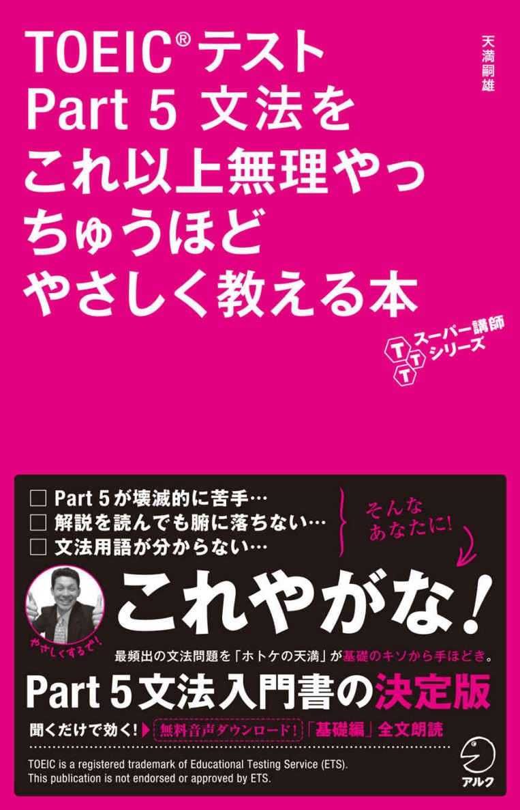
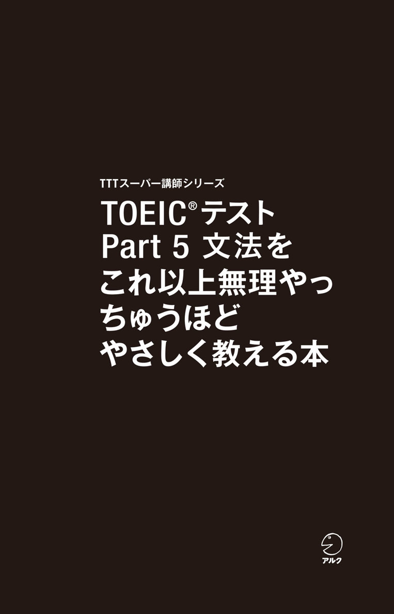
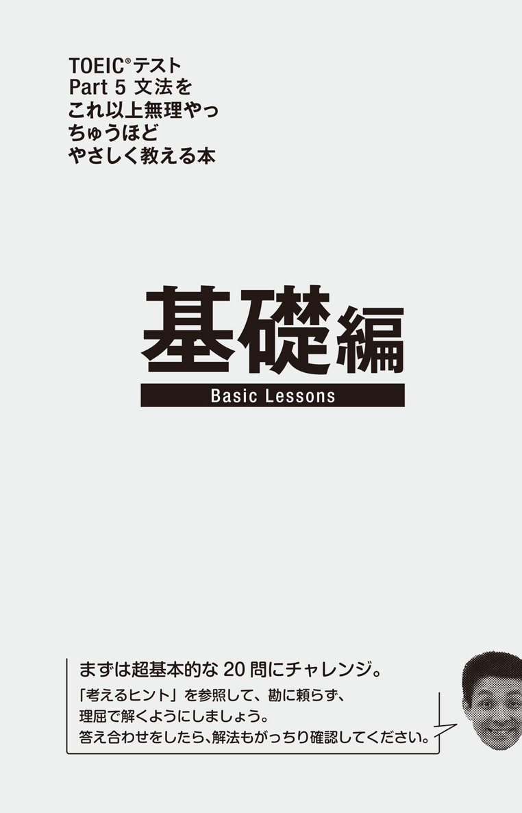
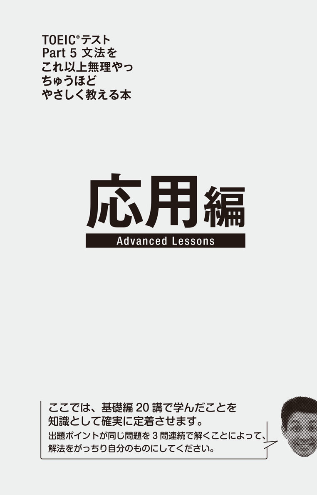

| [新形式問題対応／音声DL付] TOEIC(R)テスト Part 5 文法をこれ以上無理やっちゅうほどやさしく教える本 TTTスーパー講師シリーズ | |
| 天満嗣雄 | |
| (2014) | |


参照項目から元の箇所に戻るには、お使いのビューワーの仕様に従ってください。または一旦目次を表示し、戻りたい箇所の近くの見出しをタップして戻ってください。
は じ め に
「初心者が自習できる、使いやすいTOEICのPart 5問題集がないんですよねぇ」
2年ほど前に、とある会社の人事の方と英語研修の打ち合わせをしていたときに耳にしたこの言葉が、この本を書こうと思ったキッカケです。
最初にこの言葉を聞いたときは、「これだけいっぱい問題集が出ているのに、そんなアホな」と思うたんですけど、よく考えてみると確かにそのとおりやったんですね。TOEICの問題集のほとんどは、ある程度文法知識があることを前提として解説が書かれていて、解説に登場する文法用語が分からない人にとってはかなり難しいんですよ。
問題集の解説を理解するには基本的な文法の仕組みを理解する必要があって、そのためにはTOEICの問題集とは別に中学・高校レベルの文法書を勉強しないといけないワケですわ。
ただ、これもちょっと問題あり。目次に並んでる文法項目を見ただけで嫌気が差すし、各章が1つの文法項目の説明だけに費やされているんで全体像が見えにくいしね。そもそも例文がTOEICに出る問題文とはあまりにもかけ離れていて、「いつになったらTOEICで正解できるようになんねん？」と思うてしまいます。
だから、実際にTOEICに出る問題を解きながら、英文の仕組みが分かり、問題を解く際の注意点も分かるような問題集を作りました。
掲載項目はかなり絞ってます。TOEICで問われる項目を網羅してもいません。ただ、英文の構造を理解するのに欠かせず、TOEICでも多く出題されている品詞問題、動詞の形を選ぶ問題などに思い切り重点を置きました。厳密に正確とは言い切れない説明や、一般に使われている文法用語を使わずに書いている説明もあります。でも、それもまずは一通りの知識を身につけ、英文を読む力と、基本的な問題を確実に正解する力を養っていただくためです。
問題の種類を絞った代わりに、解説のスペースをかなり多く取って、関連する項目についても丁寧に書きました。ぜひじっくり取り組んで、英語の仕組みをしっかりつかんでください。次に手に取る問題集が恐ろしく分かりやすくなるはずです。
2014年7月 天満嗣雄
TOEIC®テスト
Part 5 文法を
これ以上無理やっ
ちゅうほど
やさしく教える本
CONTENTS
本 書 の 構 成 と 使 い 方
本書では、TOEICテストのPart 5「短文穴埋め問題」で出題される中でも、最も基礎的な文法知識を問う問題20パターンを取り上げ、解法の流れを説明しています。本書は、基礎編と応用編に分かれています。
基礎編
各パターンの典型的な問題例1つを取り上げ、解説します。学習の仕方は次のとおりです。
例題を解く
各講最初に、「まずは解いてみ！」問題があります。下項の「考えるヒント」を参考に、自力で例題を解けるか挑戦してみてください。
解説を読む
例題の答えと訳の後、その例題を解くための文法の基礎知識と解法が説明されています。一部の章では、本文で十分に触れられなかった重要事項について、別枠（Column）を設けて解説しています。じっくり読んでください。
解法を確認する
解答・解説を読んで納得したら、日本語の「解法カクニン！ 穴うめクイズ」で解法の確認をしてください。
応用編
基礎編で学んだ各パターンの応用問題例3つを取り上げ、解説します。学習の仕方は次のとおりです。
例題を解く
各講最初に、3題の「まとめ解き！」問題があります。ヒントなしで解いてみてください。★印は著者判定による問題の難易度を示します。（易★★★→難★★★）
解説を読む
例題の答えと訳の後、その例題セットが基礎編のどの講の知識を問うものであるかと、解説があります。じっくり読んでください。難しいと感じる場合は基礎編の該当講の解説をもう一度読んでから戻ってください。
発展学習をする
講末に、各講で学んだ知識を自分のものとして定着させるための課題「かためとき！TASK」があります。解説を読むだけでなく、この復習課題に能動的に取り組むことで、より多様な問題への対応力を向上させましょう。
本 書 で 使 わ れ て い る 記 号
動 ：動詞 名 ：名詞 形 ：形容詞 副 ：副詞
無 料 音 声 ダ ウ ン ロ ー ド
著者・天満嗣雄氏による「基礎編」20講の本文読み上げ音声（MP3形式、ZIP圧縮）を無料でダウンロードいただけます。満員の通勤電車でビュアーを開きにくい、ウォーキングなどのお供に「ながら学習」したい、といったときにご活用ください。下記のサイトにアクセスし『TOEIC®テスト Part 5 文法をこれ以上無理っちゅうほどやさしく教える本』を選択、フォームに必要事項をご記入のうえ送信いただくと、ダウンロードページURLのご案内メールが届きます。
ALC Download Center
ダウンロードセンター
http://www.alc.co.jp/dl/
※ファイル名は基礎編の章番号どおりになっています。
（Lesson 01.mp3 ... Lesson 20.mp3）
（2014年8月時点の情報。今後詳細が変更になる可能性があります）
文 法 用 語 一 覧
本書で使われている文法用語の中でも基礎的なものを解説します。
■ 文の構成要素
主語
文の主体となる言葉。
動詞
文の述語を表す言葉。
補語
主語と動詞だけでは文が成り立たないときに補う言葉。主語や目的語を説明する。
目的語
主語と動詞だけでは文が成り立たないときに足す言葉。動詞が表す動作の対象となる。
■ 品詞
名詞
人や物や事柄を表す言葉。文の主語・目的語・補語になる。
動詞
動作や状態を表す言葉。文の述語部分を作る。自動詞と他動詞がある。
自動詞
他の物に影響を与えない動作を表す動詞。目的語を取らない。
他動詞
後ろに動作を受ける目的語がなければ意味を完結できない動詞。
形容詞
状態を説明する言葉。主語や目的語を説明したり、補語になったりする。
副詞
動作や状態を説明する言葉。名詞以外の修飾語を説明する。
接続詞
物や事柄をつなぐ言葉。同じ働きをする物同士をつなぐ等位接続詞と、従属節を導く従位接続詞がある。
前置詞
名詞を導いて他の物との関係を表す。
■ 動詞の分類
述語動詞
主語に対応する動詞。
準動詞
それだけでは述語動詞になれず、名詞・形容詞・副詞のいずれかとして使われる動詞の形。動名詞・不定詞・分詞がある。
動名詞
動詞の-ingの形で「～すること」の意味になる。名詞と動詞両方の性質を持つ。
不定詞
to doの形で「～すること」「～するために」「～するための」の意味になる。
分詞
現在分詞は動詞の-ingの形で「～している」の意味になる。過去分詞は規則変化をする動詞では-ed形で「～された」の意味になる。
■ 文の構成単位
句
複数の単語のかたまりで、主語＋動詞の関係を含まないもの。働きに応じて、名詞句、形容詞句、副詞句に分類される。
節
複数の単語のかたまりで、主語＋動詞の関係を含んだもの。主節と従属節がある。
主節
単独で独立した文になれる節。1つの文に主節は1つのみ。
従属節
主節以外の節で、それだけでは独立した文になれない節。働きに応じて、名詞節、形容詞節、副詞節に分類される。
文
基本的には1つ以上の節から構成され、主部とそれについて述べる述部があり、1つのまとまった考えを表すもの。

基礎編 1
Lesson1
主語はどれやねん？
まずは解いてみ！
Respondents to this questionnaire ------- to use a pencil, not a ballpoint pen.
(A) is asked
(B) are asked
(C) are asking
(D) was asked
考えるヒント
H!nt
□ 選択肢は全て動詞ask（頼む）のバリエーション。では、何をポイントに選びます？
□ この文の主語はどれ？ それは、単数？ 複数？
□ この文に書かれていることは、いつ起きることでしょう？
□ この文の主語は、動詞askの動作をするのか、されるのか？
正解
(B) are asked
訳
このアンケートの回答者は、ボールペンではなく鉛筆を使うよう要請されている。
英語は主語の次に動詞が来る
いきなり解いてもらいましたが、正解できたでしょうか。答えが合っていた人も、それだけで喜んでいたらダメ。どういう筋道で解いたか説明できるくらいになっておかないと、同じタイプの問題でも、ちょっとひねりが加わったら解けない、ということになりかねません。ここでは、英文の構造の基本から説明していきますよ。
英文はまず主語があって、その次に動詞が来ます。形容詞も述語になる日本語と違い、英語の文には動詞が必要です。対比すると、こう。
日本語
地球は 主語（+助詞）
丸い 形容詞
英語
The earth 主語
is 動詞
round. 形容詞
動詞の後に何が続くかはいくつかパターンがありますが、主語の次に動詞が来て、その後に他の要素が続くという語順は変わりません。主語の後に他の要素があって最後に述語が来る日本語とは違います。
ここで少し注意が必要なのは、英語は最初に大事なことを言って後から説明する言語やということ。主語の後ろに説明が続くことがあります。この問題文、Respondents to this questionnaireare asked to use a pencil, not a ballpoint pen.でも、主語はquestionnaire（アンケート）ではなくRespon-dents（回答者）で、to this questionnaire（このアンケートへの）はRespondentsを説明しているんですね。つまり、Respondents to this questionnaireが大きな意味での主語のカタマリ（＝主部）で、動詞が来るのはその後。こんなふうに主語に説明が続いているせいで主語と動詞が離れていることもありますから、何が主語なのかしっかり見極めましょう。
動詞の形を決める3つの要素
英語の動詞は次の3つの要素によって形が変わります。
まずは主語の数。単数か複数かです。主語がIとyou以外で単数の場合、現在形の動詞には-s（あるいは-es）が付きます。これが「三人称単数現在のs」、「三単現のs」と呼ばれてるやつです。三人称っていうのは、話し手（一人称＝I、we）でも聞き手（二人称＝you）でもない第三者のこと。一人称はI、weだけ、二人称はyouだけなんで、それ以外は全部三人称です。で、それが単数のとき、現在形の動詞には-s（あるいは-es）が付くもんやと思ってください。逆に主語がI、we、you、複数形の場合の現在形の動詞は、元の形（＝原形）のままです。
次に時制。英語の動詞は、話し手（書き手）がその内容をいつのことと捉えているかによって変わります。実際にいつ起こったことかより、話し手がどう捉えているかが大事。細かい話は後の章で説明しますが、ここでは１つだけ覚えてください。それは、話し手が【いつのことか】をあまり意識していないときには現在形を使うということ。「今この瞬間」の話をするときも【いつのことか】を意識する必要がないんで現在形を使いますけど、それだけやありません。毎日起こること、確実な予定、変わらない真実、いつでも通用する話なんかも、【いつのことか】を意識しませんから現在形で表します。
最後は態。能動態か受動態かです。動詞を普通に使うのは能動態で、「主語が動詞の動作をする」ことを表しますが、「主語が動詞の動作を受けている」ことを伝えたいときもありますね。そういう場合は受動態、be動詞（is、areなど）＋過去分詞を使います（過去分詞は大半の動詞の場合、原形に-edが付いた形です）。この問題の選択肢(A) is askedや(B) are asked、(D) was askedがそれです。さて、以上を踏まえてもう一度問題を見てみましょう。
問題文
Respondents to this questionnaire ------- to use a pencil, not a ballpoint pen.
選択肢
全て動詞ask（〜を頼む）の活用形。訳は省略
(A) is asked 受動態の現在形（単数）
(B) are asked 受動態の現在形（複数）
(C) are asking 現在進行形（複数）
(D) was asked 受動態の過去形（単数）
まずは数。主語はRespondentsで、最後に-sが付いているんで複数形です。単数形の主語に対応する(A) is askedはダメですね。(D) も同様です。
次に時制。この文は特に「いつ」でなければいけないという内容でもない文なので、現在形で問題ありません。受け身の現在形(B) are asked、現在進行形(C) are askingのどちらでもOK。もちろん過去に起きてもおかしくないことなので、(D)もwere askedなら正解になり得ました。
最後に態。Respondentsという主語が、動詞の動作、すなわちaskしているのか、されているかを考えます。askは「誰に」頼むかを言う必要がありますね。こういう「動詞の影響を受ける名詞」を目的語と言いますが、この文には目的語がありません。ということは、主語であるRespondentsが依頼されていると考える必要がありますね。つまり受動態が必要なので正解は(B) are askedです。
解法カクニン！ 穴うめクイズ
□ 英文はまず【 1 】があって次に【 2 】が来る。
□ 英語は【 3 】から説明する言語なので、主語と動詞が離れることがある。何が主語なのかを見極めることが大切。
□【 2 】の形は、主語が単数形か複数形か（【 4 】）、話し手がいつのことと捉えているか（【 5 】）、主語がその動作をするのかされるのか（【 6 】）、という3つの要素によって決まる。
Column1
動詞の単数形・複数形とは
この本の解説の中で、動詞の説明の際に「単数」とか「複数」とかという表現を使っている箇所があります。Lesson 1では、選択肢の説明に使いました。(A) is askedを「受動態の現在形（単数）」とか、(B) are askedを「受動態の現在形（複数）」というふうにね。
もちろん、これ、厳密に言うとおかしいんです。動詞には「単数形」とか「複数形」というものはないんで。正確に言うと、（A）は「動詞の現在形の、単数形の主語に対応する形」、（B）は「動詞の現在形の、複数形の主語に対応する形」となります。
でもこれだと長いんで、読むのもまどろっこしいし、場合によっては、本筋の解説から気がそれてしまうかもしれません。だからこの本ではところどころ「単数の主語に対応する動詞の現在形」を「単数（形）の動詞」、「複数の主語に対応する動詞の現在形」を「複数（形）の動詞」とはしょって呼んでいます。それを頭において、これからの章を読み進めていってください。
穴うめクイズ：Answer
1. 主語 2. 動詞 3. 後 4. 数 5. 時制 6. 態
基礎編 2
Lesson2
英語はすごく数を気にする言葉
まずは解いてみ！
In order to meet a surge in demand, the ------- has decided to ask employees to work overtime.
(A) manage
(B) managers
(C) managerial
(D) management
考えるヒント
H!nt
□ この文の主語はどれ？
□ この文の動詞はどれ？
□ 主語と動詞の数は対応します。つまり、主語が単数形なら動詞も単数、主語が複数形なら動詞も複数。この文の主語、動詞の数はなんでしょう？
正解
(D) management
訳
需要の急増に対応するため、経営陣は従業員に残業を頼むことを決めた。
2つ以上の物にはsが付く
まずは英語のルールの基本から。英語は日本語と比べて物の数に敏感な言葉ですねん。日本語の場合、「5つの机が要んねん」という場合、「机」という言葉自体は「1つの机」と言うときとなんも変わりまへんな。ところが英語では物の数が1つか2つ以上かによって名詞の形が変わりますやん。a deskとfive desksみたいにね。辞書に載ってる形を【単数形】、それに-sが付いた形を【複数形】って言いますわな。
そして、単数形の名詞の説明に使う言葉とか、複数形の名詞の説明に使う言葉もあります。例えばallが基本的に複数形の名詞を説明するのに対して、同じ全体を表す言葉でもevery（全ての）とかeach（それぞれの）というのは単数形の名詞を説明します。例えば......
all employees 全従業員 複数
every employee 全従業員 単数
each employee 各従業員 単数
だから、名詞がどういう言葉で説明されてるかも気を付けなアキマセン。
動詞も主語の数に応じて形を変える
さて、名詞の数だけでなく、実は動詞の現在形も変わりますな。前のLessonでも見ましたけど、主語が単数の場合、動詞には-sが付きます。主語が複数形の場合は、動詞は原形と一緒ですわ。主語に-sが付くなら動詞には付かず、主語に-sが付かへんのなら動詞に-sが付くっちゅう関係やね。
こういうことを頭に置いて、もう一度問題を見てみましょ。
問題文
In order to meet a surge in demand, the ------- has decided to ask employees to work overtime.
選択肢
(A) manage 動経営する、管理する 原形・現在形（複数）
(B) managers 名マネジャー 複数
(C) managerial 形管理職の
(D) management 名経営陣、管理 単数
選択肢にはmanageという動詞に関連したいろんな品詞が並んでます。品詞というのは単語の働きを表す言葉で、名詞、動詞、形容詞、副詞などのことを言いますな。
冒頭からコンマまではIn order to ～（〜のために）で目的を表す副詞の働きをしているのでとりあえず置いといて、英文本体の主語は the -------ですな。冠詞（a/an/the）の後には基本的に名詞が来ますから、空所には名詞を入れなアカンと見当をつけときましょ。
動詞はその直後のhas decidedです。これは現在完了形という形やけど、hasというのはhaveの三人称単数現在の形ですやん？ せやからhas decidedも、三人称単数の主語に対応した形ですわ。で、選択肢を上から見ていくと、(A) manageは動詞、(B) managersは名詞ですけど、これは最後に-sが付いていることで分かるように複数形。動詞のhas decidedが単数主語に対応する形やのに、主語が複数形では具合が悪いんで、これは選べまへん。(C) managerialは形容詞。で、ようやく最後の(D)にmanagementという名詞がありますな。これは「経営、管理」という意味やけど「経営陣、経営者側」という意味でも使う言葉で、単数形ですわ。
「経営陣」というくらいやから、複数の人で構成されている概念ですけど、それをひとまとめにして捉えるんですね。familyなんかも似た感じです。オトン、オカン、子どもらと複数の人間がいるけど「家族」とひとまとめにして考えるのと同じように、社長、副社長、専務、常務うんぬんは、まとめて「経営陣」。せやから単数。
ということで、(D) managementが正解。こんなふうに、空所前後との関係から空所にどんな品詞が来るか考えて、適切な語尾の単語を選択肢から探す。このやり方が品詞が問われている問題の基本です。
解法カクニン！ 穴うめクイズ
□ 英語は【 1 】を気にする言葉。主語が単数なら動詞も【 2 】、主語が【 3 】なら動詞も複数。
□ 主語を説明する言葉にも注意。基本的にallは【 4 】形の名詞を説明するけど、everyやeachは【 5 】形の名詞を説明する。
Column2
複数形にするとき-esが付く名詞
複数形は、大半の名詞の場合は-sを付けるだけですけど、一部に-esを付ける名詞がありますねん。語尾が-s、-sh、-ch、-oで終わる名詞がそうなんですが、これ、一つずつ覚えるのも大変ですやん？
でも、声に出すことを考えると、結構分かりやすいんですわ。複数にするとき-esが付く単語ってのは、単に-sを付けるだけでは単数と複数の区別がつかんかったり、メッチャ言いにくくなったり、何の複数形なんかが分かりにくくなったりします。
例えばbus。これに-sを付けただけやと、bussですけど、これ、発音すると区別がつきません。dishもそうですね。dishsってなんか言いにくそうですやん？ それからpotatoなんかもそう。potatosって書いてしまうと「パテイタス」みたいに読みたくなって、potatoの複数形やっちゅうのが分かりにくいんですよ。
また、子音字＋-yで終わる名詞は、-yをiに変えて-esを付けます。例えばstudy（研究）ね。そのまま-sを付けてstudysにすると「スタディーズ」やなくて「ステューディス」みたいに読みそうになってしまいます。そこで-yをiに変えてstudiesにするんですね。これで単数と複数の区別がしやすくなったり、言いやすくなったり、何の複数形なんかが分かりやすくなりますねん。
その他に、manがmenになったり複数形も単数形と同じだったりする不規則な変化をする名詞がありますけど、これは数が少ないんで、出てきたら覚えるのでよろしいやろ。
穴うめクイズ：Answer
1. 数 2. 単数 3. 複数 4. 複数 5. 単数
基礎編 3
Lesson3
動詞はどこにあんねや？
まずは解いてみ！
The daily work routine of an administrative assistant at Texas Furnishings ------- ordering office supplies.
(A) include
(B) includes
(C) including
(D) to include
考えるヒント
H!nt
□ 選択肢は全て動詞include（〜を含む）の活用形ですな。空所に入るのは動詞ということ。
□ この文に、空所に入るもの以外に動詞はありますか？
□ 他に動詞がある場合とない場合では、空所に入る動詞はそれぞれどういう役割をしますか？
正解
(B) includes
訳
テキサス家具の管理アシスタントの日常業務はオフィス用品の発注を含む。
述語動詞か準動詞か
動詞のいろんな形が選択肢に並んでる場合、最初に考えなアカンのは、その空所には文の動詞として働く述語動詞が入るんか、名詞や形容詞、副詞として働く準動詞（-ing形、-ed形、不定詞）が入るんかですわ。
ここで大事なのは、主語に対して述語動詞は基本的に１つだけっちゅうこと。Iamlove Tom.みたいに動詞が2つもあったらアカンのですわ。ということは、まず見ないとアカンのは、その文に述語動詞があるかどうか。
述語動詞があるんなら、空所には準動詞を入れるし、述語動詞が他にないなら空所に述語動詞を入れることになりますな。大事なことだからもっぺん書いときますよ。
述語動詞＝文の動詞として働く
準動詞＝名詞や形容詞、副詞として働く(-ing形、-ed形、不定詞)
主語の説明で注意するパターン
もう1つ大事なことは、主語の説明が主語の後ろに続くことが多いっちゅうこと。英語は最初に大事なことを言って後から説明する言語やということはLesson 1でも少し触れましたね。その説明っていうのは、the peoplein the cafeteria（カフェテリアの人々）みたいな前置詞句（前置詞＋名詞）や分詞（-ing形、-ed形）とかね。ただ、ちょっと注意が必要なパターンがあるんですよ。それは、①動詞の過去分詞（-ed形）が続く、②関係詞節（which、who、that、where、whenなど、関係詞で始まる節）が続く、というケース（節とは、文の中の主語＋動詞のカタマリのこと。詳しくはこちらのLesson最後のColumn 3を参照）。
①動詞の過去分詞ってのは、the studentinterested in participating（参加することに興味がある生徒）のinterestedのように、動詞が形容詞の働きをするときの1つの形。
②関係詞節っていうのは、the engineerwho was hired in June（6月に雇われた技術者）みたいなヤツのこと。前の名詞the engineer（「先行詞」って呼びます）を説明してるんで、形容詞の働きをしてます。
過去分詞はだいたい過去形と同じ形やし、関係詞節の中の動詞はまさに述語動詞として使われる形です。ただ、過去分詞も関係詞節の中の動詞も、前にある名詞の説明で登場しているだけで、主節の述語動詞ではないんですわ。
いずれにしても、主語の後に説明が続くと、その説明がどんな形をしているにせよ、文の構造を把握するのが難しくなりますな。主語の中心になる単語はどれなのか、それに対して同じ文の中に述語動詞があるのかないのか、をしっかり確認しましょ。
このことを頭に置いて問題文を見てみまっせ。
問題文
The daily work routine of an administrative assistant at Texas Furnishings ------- ordering office supplies.
選択肢
全て動詞include（〜を含む）の活用形。訳は省略
(A) include 動 原形・現在形（複数）
(B) includes 動 現在形（単数）
(C) including 動 現在分詞形・動名詞
(D) to include 動 不定詞
まず、主語の中心は何かというと、The daily work routineですな。1語で表すならroutineですわ。で、その後にダラダラと説明が続いてます。of an administrative assistant at Texas Furnishingsまでは主語の説明。で、空所の後ろを見るとordering office suppliesという動詞の-ing形で始まるカタマリがあります。これは主語routineに対応する動詞にはなれまへんな？ ということは、この文には述語動詞がありません。
(C) includingと(D) to includeは、動詞を名詞や形容詞、副詞として使うときの形、つまり準動詞やから使えませんな。残る(A) includeと(B) includesのどちらがいいかは、主語と相談ですわ。主語routineは単数形です。ということは動詞も単数に対応した形、(B) includesがよろしいな。
解法カクニン！ 穴うめクイズ
□ 動詞の選択肢の場合、文の動詞として働く【 1 】か、名詞や形容詞、副詞として働く【 2 】か考える。
□ 主語の後ろに続く説明に、動詞に見える【 3 】や、【 4 】節に含まれる動詞が来ることもあるけれど、主語に対応する【 1 】があるかないかをまず確認しよう。
□ 主語と動詞が離れていることも少なくないが、どの主語とどの動詞が対応しているかを把握して【 5 】を合わせることもお忘れなく。
Column3
句と節って？
句は、主語と動詞がない2つ以上の単語の集まりのこと。名詞、形容詞、副詞として働きます。例えば、このLessonの問題文の主語、the daily work routineというのは、dailyという形容詞も含んでるけど、全体ではroutineを中心にした名詞の働きをする名詞句ですな。of an administrative assistantというのは直前の名詞routineを説明してるから形容詞句ですわ。副詞の働きをする副詞句は、例えば、Mr. Neilson was hired in June.（ニールソンさんは6月に雇われた）という文のin Juneですわ。was hiredという動作が行われた時を表してます。
節っちゅうのは主語と動詞を含んだ単語の集まりのことです。節には文の中心になる主節というものと、文の中で名詞や形容詞や副詞の役割を果たす従属節というものがあります。で、従属節の先頭には、そこから節が始まる目印として、接続詞（because、that、ifなど）や疑問詞（who、which、when、where、whatなど）や関係詞（who、which、that、whatなど）があるんですね。基本的に1つの節には述語動詞は1つだけ。
例えば、Texco Industries announced that it will expand into the Chinese market next year.（テクスコ産業は、来年中国市場に進出すると発表した）という文なら、主節はTexco Industries announced、従属節はthat it will expand into the Chinese market next year.です。で、それぞれの節で動詞は1つずつ（announcedとwill expand）になってますね。
穴うめクイズ：Answer
1. 述語動詞 2. 準動詞 3. 過去分詞 4. 関係詞 5. 数
基礎編 4
Lesson4
主語の次には何が来るんや？
まずは解いてみ！
Renowned actress Jane Lutz ------- accepted the offer to star inAll Taught.
(A) event
(B) eventuated
(C) eventual
(D) eventually
考えるヒント
H!nt
□ 選択肢にはeventに関係したいろんな品詞の単語が並んでますね。
□ 文の主語と動詞はどれでしょ？
□ 空所の前に主語、空所の後に動詞がありますね。
□ 主語と動詞の間に入るのは何？
正解
(D) eventually
訳
有名女優、ジェーン・ルッツは最終的に『オール・トート』で主演するオファーを受け入れた。
主語の説明は後ろから
まずは基本から。英文はまず主語があって、その主語の状態や動作を表す動詞が続きます。けれども、主語の後ろに主語の説明が続いたり、動詞の前に動詞を説明する副詞が入ったりと、主語と動詞の間に他の単語が入ってくることは多いですね。
英文を読むとき、英語を聞くとき、問題を解くとき、全てにおいて大事なんは、主語が何で、それに対応した動詞が何なのかを早くつかむこと。
主語の説明が後ろに続くというのはLesson 1やLesson 3で見ましたな。前置詞句が来たり、現在分詞や過去分詞が他の単語と一緒に来たり、関係詞節が来たりします。
そう、後ろに説明が続くときに1語だけっていうのはかなり珍しいんですよ。the best solutionpossible（可能な限り最善の解決方法）みたいに、-ableとか-ibleで終わる形容詞が来ることはありますけど、基本的に複数の単語が集まって、後ろから主語の説明をするパターンが多いんですね。
副詞は動詞の直前に置く
さて、もう1つの可能性、動詞を説明する副詞が来るっていうのを見ときましょう。その前に一言。副詞っていうと、文頭とか文末に来るイメージが強いかもしれません。
Eventually, Ms. Young accepted the offer.
（最終的にヤングさんは申し出を受け入れた）
Mr. Kim has workedvery hardfor two months.
（キムさんは2カ月の間、一生懸命に働いてきた）
こういう文って見慣れてる感じがしますよね？ でも、動詞を説明する副詞っていうのは、動詞の直前に来るのが大好きなんですわ。
Mr. Singhfinally submitted his application.
（シンさんは最後には申込用紙を提出した）
Ms. Smithaccidentally dropped her receiver.
（スミスさんはうっかり、受話器を落とした）
......みたいに、動詞の直前（助動詞がある場合は助動詞と動詞の間）に副詞が来ることって多いんですよ。
頻度を表す副詞がこの位置に来るというのを覚えている人もいるかもしれませんね。
Mr. Wrightusually drives to work.
（ライトさんは普段、車で仕事に行く）
You canalways track your order online.
（注文品の配送状況は常にインターネットで確認できます）
......のような文ですね。
実は、否定語のnotも副詞。notの否定文もこのパターンなんですよ。
You maynot enter the museum with a camera.
（博物館にはカメラを持って入れません）
Texas Office Supply doesnot offer any discounts.
（テキサス事務用品店は一切割引しない）
......ね。普通の副詞も、頻度を表す副詞も、否定語のnotも、副詞であることには変わりありませんから、動詞の直前や助動詞と動詞の間に入るのが好きなのも共通ですわ。さて、これを踏まえて問題文を見てみましょう。
問題文
Renowned actress Jane Lutz ------- accepted the offer to star inAll Taught.
選択肢
(A) event 名出来事、イベント 単数
(B) eventuated 動～に帰着した 過去形・過去分詞
(C) eventual 形最終的な
(D) eventually 副最終的に
主語はJane Lutz、空所の後ろに動詞acceptedがあります。主語のJane Lutzを説明する単語が空所に入ると考えるのは、名詞を説明できるのが形容詞のeventual（最終的な）だけなので、ちょっと無理がありますね。
もう１つのパターン、動詞を説明する副詞が入るのが適切ですわ。(D) eventuallyが正解。eventually acceptedで「最終的に受け入れた」ということになって意味もピッタリです。
解法カクニン！ 穴うめクイズ
□ 主語と動詞の間には、主語を説明する【 1 】句や現在分詞や過去分詞から始まる句、【 2 】節が来ることもあるが、動詞を説明する【 3 】が来ることも多い。
□ 動詞を説明する【 3 】は、【 4 】を表す副詞や否定語の【 5 】などと同様、【 6 】と動詞の間に入るのが大好き。
穴うめクイズ：Answer
1. 前置詞 2. 関係詞 3. 副詞 4. 頻度 5. not 6. 助動詞
基礎編 5
Lesson5
時制のイロハ
まずは解いてみ！
Sarah Evans ------- for the position of sales manager at Metrix Corporation but was not even invited for an interview.
(A) applies
(B) applied
(C) is applying
(D) applying
考えるヒント
H!nt
□ 選択肢には動詞apply（〜に応募する）のいろんな形が並んでますな。
□ 空所と同じ節の中に述語動詞は......ないですな？
□ つまり述語動詞が必要やけど、この主語が動詞applyの動作をするのはいつのこと？ いつでもいいこと？ 今この瞬間のこと？ それとも過ぎ去ったこと？
正解
(B) applied
訳
サラ・エバンズはメトリックス社の営業部長職に応募したが、面接に呼ばれさえしなかった。
過去形は「離れてる」感覚
Lesson 1で、英語の動詞は、話し手がその内容をいつのことと捉えているかによって時制が変わることと、話し手が「いつのことか」をあまり意識していないときには現在形を使うことを説明しましたね。ここで、英語の動詞の時制の話をもう少し詳しくしましょう。
現在形が、時間に関する意識が希薄なときに使う形なのに対して、過去形ってのは、「離れてる」感覚を持ってるときに使う形なんですね。Mr. Gibson joined the company 20 years ago.（ギブソンさんは20年前に入社した）ってのは、今と関係がない遠く離れた時間に起こったこととしてjoinという動作を捉えているからjoinedという過去形を使ってるんですね。
ちょっとヤヤコシイ話に聞こえるかもしれませんけど、丁寧にモノを頼むとき、Can youでなく、Could you help me with this report?（このリポートのことでお手伝いいただけませんか）のように過去形を使うのも、実は「離れてる」感覚があるんで過去形なんですよ。可能かどうかを単刀直入に聞いてしまうのではなくて、相手とちょっと距離感を持たせることによって丁寧な感じが出てくるんですわ。
過去形と現在完了形の違い
ところで、過去形と現在完了形（have＋過去分詞）の使い分けで悩んだこと、ありません？ 例えば、「ケントさんは売上報告書を提出した」というのを表すのに、Ms. Kent submitted the sales report.がいいのか、Ms. Kent has submitted the sales report.がいいのか悩む人がいるんですよ。これ、どれくらい昔の話なのかによって使い分ける、なんてことではありません。あくまでも時制の選択は話し手の捉え方ですから。
現在完了形というのは、現在形の仲間の一種なんで、時間に対する感覚は希薄です。完了形というのは「ある時点を基準に少し昔のことも意識しながら話す」ときの形なんですが、「いつ」というのをあまり意識してないということは必然的に今が基準になりますわな。だから、「今基準で少し昔のことも意識しながら話す」のが現在完了形。さっきの例なら、「提出した」時点での事実というより、「今、既に提出済みである」ことに意識が向いている感じ。終わった話というよりは、その結果として今がどうなのかの方に関心がある感じ。
ついでに現在進行形（be + -ing）ってのも似た感じ。進行形というのは、「ある時点を基準に少し前から始まってて、まだ終わってない感じで話す」ときの形。だから「いつ」かをあまり意識していない現在形と一緒に使う現在進行形は、「話している時点で既に始まっていて、まだ終わっていないという感覚」のときの形になりますわ。
ちょっと話が広がりすぎてるかもしれませんが、現在形は時間に対する意識が希薄なときに使い、過去形は「離れている」という意識があるときに使う形というのを押さえといてください。で、問題を見てみます。
問題文
Sarah Evans ------- for the position of sales manager at Metrix Corporation but was not even invited for an interview.
選択肢
全て「応募する」という意味の動詞の活用形。訳は省略
(A) applies 動 現在形（単数）
(B) applied 動 過去形
(C) is applying 動 現在進行形（単数）
(D) applying 動 現在分詞・動名詞
選択肢に動詞のいろんな活用形が並んでるんで、まずは述語動詞を入れるのか準動詞を入れるのかを考えます。空所のある節には動詞がないんで、述語動詞が必要ですな。(D) applyingは準動詞やから使えません。
次に時制。書き手がこのapplyという動作をどう捉えているかがポイントです。文の後半にbut was not even invitedとあるのがヒントですね。notとかevenというのは副詞なんで、動詞だけに注目するとwas invited。これは過去形ですね。もう過ぎ去った、「離れた」時間の出来事です。面接に呼ばれなかったんですよ。で、空所に入る動詞applyは「申し込む」という意味やから、当然、面接に呼ばれなかったのよりも前のこと。「離れた」時間のこととして表されているinviteよりもさらに昔の話なんやから、こっちも「離れた」時間の出来事と感じてるはず。過去形がよろしいな。(B) appliedが正解。
解法カクニン！ 穴うめクイズ
□ 英語の動詞の時制で、【 1 】は時間に対する意識が希薄な時の形、【 2 】は「離れている」という感覚をもって話すときの形。
□【 3 】や【 4 】もあくまでも【 1 】の一種。
□【 3 】は話している時点を基準に少し前のことを意識しながら話すときの形、【 4 】は話している時点で既に始まっていて、まだ終わっていないという感覚をもって話すときの形。
穴うめクイズ：Answer
1. 現在形 2. 過去形 3. 現在完了形 4. 現在進行形
基礎編 6
Lesson6
完了形って何よ？
まずは解いてみ！
Since Mr. Adam McKinley assumed the post of CEO at Foxdale, sales ------- gradually.
(A) were increasing
(B) was increased
(C) increased
(D) have increased
考えるヒント
H!nt
□ 選択肢は全て動詞increase（増加する）の活用形ですな。
□ 空所と同じ節の中に、他に動詞はありますか？
□ ......ありませんな。じゃあ、動詞が入るとして、数・時制・態をチェックしましょ。
□ 冒頭にsinceがあるということは、時制は......？
正解
(D) have increased
訳
アダム・マッキンリーさんがフォックスデールのCEO職に就いて以来、売り上げが徐々に増加してきた。
完了形は「基準点」が大事
Lesson 5に続いて時制の話ですわ。Lesson 5でも説明しましたけど、現在完了形とか現在進行形というのは、大枠では現在形の仲間やと思うてください。どちらも話している瞬間が基準になってます。現在形が特に時間を意識していない以上、どこかを基準にしようと思うと、今この瞬間にならざるを得んからですね。
完了形というのは、have＋過去分詞という形をしていて、ある時点を基準に、それよりも前のことを意識しながら述べるときの形です。現在完了形なら発言の瞬間、過去完了形（had＋過去分詞）や未来完了形（will have＋過去分詞）なら文脈の中に登場する過去または未来のある時点が基準になります。日本語にはない発想なんで、ちょっとつかみにくいかもしれませんけど、ぼんやりとでもつかめたらOK。英文に触れていく量が増えるに従って、よりハッキリ分かるようになります。
注意するといいのは、前のことを意識しているとは言いながら、大事なのは「基準になっている時点」やっちゅうこと。現在完了形なら、過去の出来事を話題にはしていても、あくまでも発想は今この瞬間なんですね。
例えば、Pete Sanchez has visited 20 countries.（ピート・サンチェスは20カ国を訪問したことがある）という文でも、実際にvisitしたのは過去の話やけど、フォーカスは「今現在、ピートは20カ国を訪問した経験を持っている人や」っちゅう方にある感じ。あくまでも「今と切り離された時点」の話としてではなく、今の話なんですよ。
せやから、完了形は、5 years agoとかlast monthとかみたいに、今とは切り離された過去のある時点を表す表現とは一緒に使えません。同じ文の中で、動詞の時制は「今」を中心に捉えてる形を使っときながら、副詞句で「今と切り離された時点」を表すと矛盾するからね。逆に、recently（最近）、lately（最近）、this year（今年）、for three years（3年間）、over the last six weeks（ここ6週間）、since last year（去年以来）のような、今この瞬間を含む表現とは相性がよろしい。
進行形と現在完了形
一方、進行形はbe＋現在分詞という形で、「基準になる時点では既に始まっててまだ終わってない」というニュアンスを付け加えます。ただ、ちょっと例外っぽく見えるケースもありますわ。John Miller is picking up our guests at the airporttomorrow.（ジョン・ミラーが明日、お客さんたちを空港に迎えに行く）なんて、tomorrow言うてますやん？ 明らかに「今」ではありませんけど、もうジョンが迎えに行く手はずにはなっていて、気持ち的にはもう迎えに行き始めてる感覚。
ところで、完了形と進行形のニュアンスを両方とも持っているような表現方法もあります。現在完了進行形って言うんですけど、今この瞬間を基準に、少し前から始まっててまだ終わってないというニュアンスですね。現在進行形が、今の瞬間の前後に起こっている感じなのに対し、現在完了進行形の方はもう少し前から続いている感じですね。John Miller has recently been traveling to Southeast Asian countries.（ジョン・ミラーは最近、東南アジア諸国によく旅行している）なんて、何度も旅行に行っては帰り行っては帰りを繰り返してて、その状況がまだ終わってない感じですわ。
さて、時制の感覚を確認したところで、問題文を見てみましょう。
問題文
Since Mr. Adam McKinley assumed the post of CEO at Foxdale, sales ------- gradually.
選択肢
全て動詞increase（増加する）の活用形。訳は省略
(A) were increasing 動 過去進行形（複数）
(B) was increased 動 受動態の過去形（単数）
(C) increased 動 過去形・過去分詞
(D) have increased 動 現在完了形（複数）
冒頭に時間を表す表現が来てますね。Since Mr. Adam McKinley assumed the post（マダム・マッキンリーさんが職に就いて以来）と始まりを表すsinceが使われてます。その時点から今まで続いてきてる感じですよね。ということは、前にあったことも意識しつつも、軸足は今この瞬間において話している感覚、現在完了形がピッタリですわ。(D) have increasedが正解。
解法カクニン！ 穴うめクイズ
□【 1 】は、ある時点を基準にそれよりも前のことを意識しながら述べる形。【 2 】はある時点を基準に既に始まっていてまだ終わっていないという感覚のときに使う形。
□【 3 】は期間や起点を表すfor、over、sinceという表現と相性が良く、今とは切り離された時点を表すlast yearとかthree months agoなどの表現と相性の良い【 4 】とはかなり違う感覚。
穴うめクイズ：Answer
1. 完了形 2. 進行形 3. 現在完了形 4. 過去形
基礎編 7
Lesson7
時を表すヒントを探せ！
まずは解いてみ！
At the annual meeting next month, the CEO, Joe Paulson, ------- the major needs of franchisees with a view to increase sales.
(A) address
(B) addressed
(C) is addressed
(D) will address
考えるヒント
H!nt
□ 選択肢には動詞addressの活用形ばかり並んでますな。
□ 選択肢の動詞は全て主語the CEOに対応した形。では、時制は？
□ 時制のヒントは文中の時を表す表現。この文で時を表す表現はどこにある？
正解
(D) will address
訳
来月の年次会議で、CEOのジョー・ポールソンが売り上げ増加のために、フランチャイズ加盟店の主なニーズを取り上げます。
明確に時を表す表現を探す
動詞の適切な形を選ぶ問題が続いてますね。ここでは、述語動詞を入れる場合の時制を選ぶヒントについて考えましょう。英語では述語動詞が登場するたびに、それはいつのことなのかを、時制を変えることで表現します。で、その時制を決めるのは、話し手・書き手がその動詞の内容をどう捉えているかです。3日前のことを述べるにしても、過去形で表現することもあれば、現在完了形で表現することもありますからね。話し手・書き手がその動作をいつのことと捉えているのかは、文の他の部分にも表れてくるはずなんで、そのヒントを見つけて時制を選ぶことになりますよ。
分かりやすいのは、明確に時を表す表現が使われている場合。例えば、next week（来週）、in three weeks（3週間後に）なんかがあれば未来のことやから、動詞の時制も未来を表すwillを使ったりbe going toを使ったりすることになりますな。一方で、last month（先月）、three weeks ago（3週間前）などがあれば、これは過去形ですよね。
気を付けたいのは、未来のことを表すのに現在進行形や現在形を使うこともあるってことですかね。既に手はずが整っている予定を話すときには現在進行形を使うこともあるし、予定が確定してるという意識が強ければ、逆に「未来のこと」という意識が希薄になるんで現在形で表現することもあるんですね。ちょっと注意。
一方で、過去にあったことを表現するときに、sinceやfor、overなどがあれば過去を今と絡めて捉えている感じになりますから、現在完了形を使うことになりますね。
さらにヒントとしてはこんなものもあります。This is the largest house that Mr. Wilson has designed so far.（これはウィルソンさんがこれまでに設計した中で最も大きな家だ）のように、「これまで～の中で１番」というのを表すのに現在完了形を使うことがあるんですよね。この場合は、名詞の前にある最上級がヒントになりますな。
動詞の時制を考える上で、別の節の動詞の時制がヒントになることも少なくありませんな。Ms. Miller ------- a taxi because her carwas out of order.（ミラーさんは、車が故障していたのでタクシーに乗った）なら、空所のある節とは別の節の動詞がwasと過去形なんで、空所にも過去形のtookを使うことになりますわ。
時間を表す形容詞に注意
もう1つ盲点になりやすいのが、文中に出てきている名詞を説明する形容詞が時間を表していることがあるという点。例えば、next meeting（次の会議）とあれば、おそらく未来の話ですよね？ 他にはupcoming（来る、次回の）、following（次の）、subsequent（後続の）、succeeding（続いて起こる）などがあれば、未来の話である可能性が高いし、previous（以前の）、prior（事前の）、earlier（前の）、preceding（先立つ）などがあると過去の話である可能性が高まりますな。
さて、問題文を見てみましょうか。
問題文
At the annual meeting next month, the CEO, Joe Paulson, ------- the major needs of franchisees with a view to increase sales.
選択肢
全て動詞address（〜を取り上げる）の活用形。訳は省略
(A) address 動 原形・現在形（複数）
(B) addressed 動 過去形・過去分詞
(C) is addressed 動 受動態の現在形（単数）
(D) will address 動 未来形
冒頭にAt the annual meetingnext month, （来月の年次会議で）と未来の話をしているのが分かる表現があるんで、(D) will addressが適切ですな。過去の話をするときの(B) addressedは当然使えませんけど、現在形の(A) addressや(C) is addressedはどうですやろ？ (A) addressは主語がthe CEOという単数やのに動詞が複数形の主語に対応する形になってしまうからダメで、(C) is addressedも後ろにthe major needsと目的語が来てるんやから、受動態では困りますな。やっぱり(D) will addressしかありませんわ。
解法カクニン！ 穴うめクイズ
□ 英文には動詞の時制とつじつまが合うような時を表す表現が使われているはず。簡単なのは明確に時間を表す表現がある場合。last monthやtwo days agoなどがあれば動詞の時制は【 1 】、for six weeks、since Aprilなどがあれば【 2 】、next yearやin four monthsなどがあれば【 3 】を表すwillやbe going toを使った表現が有力。
□ 一方、別の【 4 】の動詞の時制や、時間を表す【 5 】もヒントになる。
穴うめクイズ：Answer
1. 過去形 2. 現在完了形 3. 未来 4. 節 5. 形容詞
基礎編 8
Lesson8
現実ちゃうねん、理想やねん
まずは解いてみ！
Professor Johnson suggested that libraries on campus ------- open until 11:00P.M. for students to use to work on their reports.
(A) is kept
(B) be kept
(C) keeps
(D) are keeping
考えるヒント
H!nt
□ 選択肢は全て動詞keep（維持する）の活用形ですな。
□ 空所を含むthat以下の従属節の主語はlibrariesですな。これに対応する動詞は、能動態か受動態、どっちがいい？
□ 主節の動詞suggestedは過去形やけど、選択肢には過去形がありませんな。
□ 主節の動詞suggestedが示す、that以下の中身は現実の話？ 理想の話？
正解
(B) be kept
訳
ジョンソン教授は、学生がリポート作成に使うためにキャンパス内の図書館が午後11時まで開館されるよう提案した。
「理想の話」は仮定法現在
時制の話をだいぶんしてきましたね。今回もそういう話ですが、これまでとちょっと違うのは、話題の想定が全然違うってことです。
僕らは必ずしも現実の話ばかりをしているわけやありません。こうあってほしい、という理想の話をしたり、現実に反する架空の話をしたりすることもあります。英語は、「理想の話をするときのカタチ」と「架空の話をするときのカタチ」が、「現実の話をするときのカタチ」とは別にあるんですよ。
「理想の話をするときのカタチ」というのは、「仮定法現在」って言います。一言で言うと動詞の原形です。現実の話やなくて理想の話なんで、活用せずに原形のままなんですわ。
実はTOEICテストのPart 3の設問でしょっちゅう使われてます。What does the woman suggest the mando?（女性は男性に何をするよう提案しているか）ってやつ。このdoって、主語がthe manで単数やのに、原形のままですやん？ これは、動詞suggest（提案する）というのが「あるべき姿・理想の話」やというのを物語ってるんです。「提案する」くらいやから、今の時点では実現してない理想の状態を話題にしてるわけですよ。
で、この質問に文で答えるとすると、The woman suggests that the mantry another store.（女性は男性に他の店を試すよう提案する）みたいな感じになります。この例で分かるように、「理想の話」というのはthat以下の従属節で表されるわけですけど、主節には「理想の話」と相性の良い、提案・要求・命令系の内容が来ます。suggest（提案する）、require（要求する）、insist（主張する）、order（命令する）みたいな動詞や、essential（必須の）、imperative（必須の）、desirable（望ましい）みたいな形容詞が使われることが多いんですね。
「架空の話」は仮定法過去・過去完了
ところで、「架空の話をするときのカタチ」は、「仮定法過去」とか「仮定法過去完了」と呼ばれるものです。単なる仮定ではなくて、現実味のない架空の話のときの形ですわ。
「今」の現実とかけ離れた架空の話は「仮定法過去」（もし～なら、...だろうに）というて、現在の話でも過去形を使うんですよ。
If Mr. Johnsonhad a receipt, hewould be eligible for a refund.
（ジョンソンさんが領収証を持っていたら、彼は返金が受けられるだろうに）
という感じ。下線部を見ると、動詞（助動詞）hadやwouldは過去形ですよね？ 実際には領収証がないんで返金してもらえません。Lesson 5で見たように、過去形は「離れてる」感覚を持っているときに使う形です。時間的に「離れてる」と過去の話やけど、心理的に「離れてる」と「今」の架空の話になって、それが「仮定法過去」って呼ばれるんですね。架空の話は「今」の現実と離れているので、過去形が使われるんです。
さらに、「過去」を振り返ってする架空の話は【仮定法過去完了】（もし～だったら、...だったのに）と言います。つまり、
If Mr. Johnsonhad made his purchase a day before, hewould have been eligible for a discount.
（ジョンソンさんが1日早く購入していたら、割引の対象になったのに）
......みたいな文。助動詞（had、would）が過去形で、さらに完了形（had made、have been）と組み合わさってます。
まぁ、仮定法過去や仮定法過去完了はTOEICで問われることはほとんどないんで、後回しでもOKです。ここでは、理想の世界の話をする「仮定法現在」（＝原形）を押さえてください。さて、問題文を見てみましょう。
問題文
Professor Johnson suggested that libraries on campus ------- open until 11:00P.M. for students to use to work on their reports.
選択肢
全て動詞keep（〜を維持する）の活用形。訳は省略
(A) is kept 受動態の現在形（単数）
(B) be kept 受動態の原形
(C) keeps 現在形（単数）
(D) are keeping 現在進行形（複数）
選択肢には動詞keepの活用形が並んでます。空所は接続詞thatで導かれた従属節の中にありますけど、主節の動詞がsuggestedですね。つまり、提案。そう、理想の話です。ということは、原形。
あら？ keepってありませんね。これは態が違うから。図書館が何かをkeepするんではなくて、図書館がopenな状態でkeepされるんですよね。だから受動態でbe動詞が原形の(B) be keptが正解です。
解法カクニン！ 穴うめクイズ
□ 英語の動詞は、理想の話をするとき、架空の話をするときに使われるカタチがある。理想の話をするときのカタチは【 1 】と呼ばれ、動詞の【 2 】を使う。
□ 従属節で【 1 】が使われる場合、主節には【 3 】、要求、命令などを意味する動詞や【 4 】が使われる。
□ 「今」の架空の話は【 5 】と呼ばれる。
□ 「過去」の架空の話は【 6 】と呼ばれる。
穴うめクイズ：Answer
1. 仮定法現在 2. 原形 3. 提案 4. 形容詞 5. 仮定法過去 6. 仮定法過去完了
基礎編 9
Lesson9
副詞の大好きな場所！
まずは解いてみ！
An article about the storytelling workshop will ------- appear in the newspaper later this week.
(A) probabilities
(B) probability
(C) probably
(D) probable
考えるヒント
H!nt
□ 選択肢にはprobab-が共通で語尾が違う、いろんな品詞の語が並んでますな。
□ 空所の前後には何がありますか？
□ 助動詞と動詞の間には何が入るんでしたっけ？
正解
(C) probably
訳
ストーリーテリングのワークショップに関する記事が、おそらく今週中に新聞に載るだろう。
副詞は説明する言葉の直前に来る
Lesson 4でも見たとおり、主語の直後には、主語の説明が続いたり動詞を説明する副詞が入ったりすることも多いんですね。特に、副詞が本動詞の直前に来るのは、自然な英語では頻繁にあることなんで一刻も早く慣れてくださいね。
ここではもう少し一般的に副詞の来る場所について考えましょう。
副詞は、動詞、形容詞、副詞を説明しますが、前置詞句や節を説明することもあります。
前置詞句というのは名詞と前置詞を一緒に使って形容詞や副詞として使うものなので、当然、副詞で説明できます。例えば、①Our offices are conveniently locatedrightin frontof Osaka Station.（弊社事務所は、大阪駅のすぐ前の便利な位置にあります）。in front of Osaka Stationが前置詞句ですが、場所を表す副詞の働きをしてますよね。で、right（すぐ）というんがそれを説明する副詞ですわ。
節についても、時や条件、理由や目的などを表す節は動詞の説明をする副詞節なんで、副詞で説明できます。②Eric Thomas finally chose the EPX-30 music playersimplybecause it was the cheapest.（エリック・トマスは、単にそれが最も安いというだけで、最終的にEPX-30ミュージック・プレーヤーを選んだ）のbecause it was the cheapestが理由を表す節で、副詞の働きをしてます。その前のsimply（単に）がこの節を説明する副詞ですね。
これらの例でも分かるように、副詞は説明する言葉の直前に来るのが大好きですねん。それは説明するものが動詞でも同じで、②のfinallyは、それが説明する動詞（chose）の直前に来ます。
動詞が助動詞＋本動詞の組み合わせで使われる場合、副詞は助動詞と本動詞の間に入ります。①のconvenientlyが助動詞areと本動詞locatedの間に入ってるのがその例ですわ。あ、ちなみに、今areを助動詞と言いましたけど、現在進行形や受動態を作るときのbe動詞は、本動詞を助ける役目をしているので、実は助動詞でもあるんです。完了形［have＋過去分詞］のhaveもそう。be動詞やhaveだけでなく、willやcanなどの助動詞でも、副詞は助動詞と本動詞の間に入ります。
Wewillgladlyship your order to any location within the state.
（あなたのご注文品は、州内のどんな場所にでも喜んで発送いたします）。
助動詞が2つ以上ある場合は、Customer servicecanalways becontacted at 555-3958.（お客様サービス係には555-3958でいつもご連絡いただけます）のように、1つ目の助動詞（can）の後に副詞が入るのが一般的です。
副詞が準動詞を説明するときも、やっぱり動詞の前に来ますよ。不定詞（to＋動詞の原形）の場合はtoと動詞の原形の間、動名詞（動詞の-ing形）や分詞（現在分詞：動詞の-ing形、過去分詞：動詞の-ed形）なら、動名詞や分詞の直前に副詞ですわ。例えば、
ADT Industries conducted extensive market research tobetter understand consumer needs.
（ADT産業は消費者のニーズをよりよく理解するために大規模な市場調査を行った）
Mr. Peters regrettedinadvertently erasing some important files.
（ピーターズさんは不注意にも大事なファイルを削除してしまったことを後悔した）
Prices include shipping fees unlessotherwise specified.
（他に既定のない限り、料金は配送料を含みます）
......とかね。それぞれ下線部の副詞が直後の動詞を説明してますよ。さて、問題を見てみましょう。
問題文
An article about the storytelling workshop will ------- appear in the newspaper later this week.
選択肢
(A) probabilities 名可能性 複数
(B) probability 名可能性 単数
(C) probably 副おそらく
(D) probable 形起こりそうな
空所の直前には助動詞のwill、直後には動詞のappearがありますから、まさに副詞が入る場所。副詞は(C) probablyですね。
解法カクニン！ 穴うめクイズ
副詞は【 1 】、【 2 】、【 3 】を説明するものですが、【 4 】句や【 3 】節を説明することもあります。一般的には、説明する言葉の直前に来ます。【 1 】が助動詞を伴う場合、助動詞と【 1 】の間に、不定詞の場合はtoと【 1 】の間、動名詞や分詞の場合はその直前に副詞が入ります。
穴うめクイズ：Answer
1. 動詞 2. 形容詞 3. 副詞 4. 前置詞
基礎編 10
Lesson10
目的語のカタチ
まずは解いてみ！
All employees are required to submit their travel ------- report within five days of returning from business trips.
(A) expenses
(B) expensive
(C) expend
(D) expensively
考えるヒント
H!nt
□ この文の主語、動詞、さらに動詞の動作を受ける語（目的語）はどれでしょう。
□ 目的語になるのは名詞の働きをするモノですな。
□ 名詞には、説明（形容詞）が付くこともあります。さらに、その形容詞を説明する副詞が付くこともあります。名詞が２つ以上並ぶこともあります。
正解
(A) expenses
訳
全従業員は、出張から帰ってから5日以内に旅費報告書を提出するよう求められています。
目的語のいろいろなカタチ
これまでのLessonでは、英文の骨格である主語と動詞を中心に、主語と動詞の数を一致させること、主語の後ろに説明が続くことがあること、動詞が表す動作をいつのことと捉えているかによって動詞の形が変わること（時制）、主語が動作をするのかされるのかによって動詞の形が変わること（態）、動詞などの説明をする副詞の位置、などを見てきました。
なんか気づきません？ そう、まだ目的語ちゅう言葉がほとんど出てきてないんですよね。ただ、英語の動詞の大部分は、他の物なり人なりに対して影響を与える「他動詞」と呼ばれるモノ（他動詞については次のLessonで詳しくやります）。で、この他動詞には目的語が必要ですねん。目的語というのは、動詞の動作が及ぶ先のことね。
Morrison Corporation hiredMr. Brooks.（モリソン社はブルックスさんを雇った）という文やと、hire（雇う）という動作の影響を受けているのが目的語Mr. Brooksというワケやね。
で、この目的語、当然、動詞の後ろ側に来るんやけど、いろんなカタチがありえるんで、それを見ていきましょ。まず確認。目的語になるのはどんな品詞でっか？ そう。名詞ですな。上の例やとMr. Brooksが名詞ですわ。名詞の代わりをする代名詞も目的語になりますわ。上の例文を言い換えたら、Morrison Corporation hiredhim.と言えるわけやけど、このhimが代名詞ね。
で、名詞の働きをする動名詞（動詞の-ing形）とか不定詞（to＋動詞の原形）とか、名詞節（名詞の働きをする節）なんてのも目的語になりますわ。
動名詞： Ms. Adams consideredquitting her job.
（アダムズさんは仕事を辞めることを考えた）
不定詞： Mr. Wilson intendsto apply for the job.
（ウィルソンさんはその職に応募するつもりだ）
名詞節： Nelson Auto announcedthat Steve Mills will step down as president on June 1.
（ネルソン・オートは、6月1日にスティーブ・ミルズが社長を辞任すると発表した）
......と、こんな感じ（名詞節についてはこちらのLesson末のcolumnを参照してください）。
名詞のカタマリを見極める
さてさて。名詞が目的語になる場合でも、
①その名詞に形容詞の説明が付いている
（alengthy report：長い報告書）
②その形容詞を副詞が説明している
（anextremely lengthy report：極めて長い報告書）
③名詞が並んで複合名詞と言われるモノになっている
（asales report：売上報告書）
......ことがあるんで、問題を解く場合はどの単語からどの単語までが1つのカタマリなのかを見極めなアキマセン。その辺りを踏まえて問題を見てみましょう。
問題文
All employees are required to submit their travel ------- report within five days of returning from business trips.
選択肢
(A) expenses 名費用、出費 複数
(B) expensive 形費用がかかる、高価な
(C) expend 動消費する 原形・現在形（複数）
(D) expensively 副高価に
空所の前にはtheir travelとありますな。theirは代名詞の所有格というヤツで、名詞句の先頭に来ます。空所の2つ後ろにwithinという前置詞があるんで、その手前まで、つまりtheir travel ------- reportが名詞句ですな。
空所は名詞reportの前なんで形容詞かと思うけど、(B) expensiveを入れると「高額な報告書」ってことになりますわ。意味不明。で、空所の前を注目すると、travelってコイツも名詞ですよね。ということは、travelからreportまで名詞が3つ続いて複合名詞になってるって可能性がメッチャ大きい。実際に当てはめて考えると「旅費報告書」って意味になって文脈にも合いますわ。(A) expenses、これが正解。
ところで、複合名詞では、vacation request（休暇届）のvacation、business expansion plan（事業拡大計画）のbusinessとexpansionのように、最後の名詞以外は単数形になっているのが基本ですねん。前に来る名詞には最後の名詞を説明する形容詞のような面があって、形容詞には複数形がありませんからな。ただ、expenses（費用）、sales（売り上げ）、benefits（給付金）のように、通常複数形で使われる単語の場合、複数形が複合名詞で使われることがあります。sales report（売上報告書）やbenefits package（福利厚生）もその例ですな。
解法カクニン！ 穴うめクイズ
□ 目的語というのは、動詞の影響を受けるモノや人のこと。
□ 目的語になるのは【 1 】の働きをするモノで、【 1 】を言い換えた【 2 】、動詞を名詞として使っている動名詞や【 3 】、それから【 1 】の働きをする節である【 4 】も含まれる。
□【 1 】が目的語になる場合、【 1 】に形容詞の説明が付いていたり、その形容詞を副詞が説明していたり、【 1 】が並んで【 5 】と言われるモノになっていたりするので、どこからどこまでが一つのカタマリか見極めが必要。
Column4
名詞節ってどんなもの？
Lesson 3で「節」というのにちょっと触れました。節とは、主語と動詞を中心とした単語のカタマリで、文の中で名詞とか副詞とか形容詞の働きをしてるものを言います。で、「ここから節が始まりまっせ」という目印になるものが、接続詞（because、that、ifなど）、疑問詞（who、which、when、where、whatなど）、関係詞（who、which、that、whatなど）という話でしたな。この「目印になる」というのは他の文法書やTOEIC問題集には出てこない表現で、普通は「節を導く」なんて言い方をしてますわ。
さて、ここから名詞節の話。文の中で名詞の働きをする節の目印になる（名詞節を導く）のは、接続詞の一部と疑問詞の一部。接続詞では、解説で挙げた例文、Nelson Auto announcedthat Steve Mills will step down as president on June 1.の中のthatが代表的。他にはMs. Higgins has not decidedif she will attend the trade show.（ヒギンズさんはまだ見本市に参加するかどうか決めていない）のif（～かどうか）なんかもそうですね。でも全部の接続詞が名詞節を導けるわけやないですよ。例えばbecause（なぜなら）とかafter（～の後に）なんかは理由や時を表す副詞の働きをする副詞節を導きまっせ。
疑問詞が名詞節を導く例は、The manager asked Mr. Daviswhat he thought about the plan. （マネジャーはデービスさんにその計画についてどう思うか尋ねた）のwhatやThe board members decidedwhen the company would launch a new product.（取締役たちはいつ新製品を発売するか決めた）のwhenなんかがそう。
名詞節、だいたい感じはつかめました？
穴うめクイズ：Answer
1. 名詞 2. 代名詞 3. 不定詞 4. 名詞節 5. 複合名詞
基礎編 11
Lesson11
動詞にもいろいろありまんねん
まずは解いてみ！
Suntech Industries' Pasadena factory has been under renovation to improve -------, but will resume operation next month.
(A) produce
(B) productive
(C) productivity
(D) producer
考えるヒント
H!nt
□ 選択肢にはproduce（〜を生産する）に関連したいろんな品詞ですな。
□ 空所の前には動詞improve。動詞の後には何が来ますかね？
□ 他動詞なら目的語、自動詞なら副詞が続く可能性大。improveはどっち？
正解
(C) productivity
訳
サンテック産業のパサディナ工場は生産性を改善するために改修中だが、来月操業を再開する。
自動詞は「自己完結」
Lesson 10で目的語というものについて話しました。動詞の影響を受けるモノのことで、名詞あるいは名詞の働きをする句や節が目的語になりますな。ただね、動詞の後に必ず目的語が来るかというとそうでもないんですね。
Lesson 10でも話したとおり、他動詞というものには目的語が続きますわ。一方で、自動詞というヤツは目的語が要りまへん。自動詞っちゅうのは動作が自己完結なヤツ。自己完結やから他の物に影響を与えへんワケで、目的語も続かへんワケですね。典型的なのがbe動詞。これは、根本的には「存在する」って意味やから、自己完結ですわ。他の典型的な自動詞はremain（～のままである）やarrive（到着する）なんかがありますな。
自動詞か他動詞か
まぁ、英語の動詞は他動詞が圧倒的に多いんですけどね。それから、他動詞としても自動詞としても使われる動詞もメッチャ多いんですわ。例えば、increaseは自動詞として「増える」という意味でも使うし、他動詞として「～を増やす」という意味でも使います。逆のdecreaseも「減る」という意味でも「減らす」という意味でも使いますな。
どっちの意味で使うてんのかは、動詞が表す動作をする主体が何かによって考えなアキマセン。例えば、動詞がincreaseでsales（売り上げ）なんてものが主語に来てたら、それが何か別のものを増やすって、変ですわな。普通は。一方で、会社なんかが主語なら、当然、売り上げなり予算なり、何かを「増やす」と考えるのが自然ですわな。だから、その何かを表す目的語が後ろに来ます。
だから、空所の前に動詞があって選択肢にいろんな品詞が並んでる場合にまず考えなアカンのは、その動詞が他動詞なのか自動詞なのかですわ。前の動詞が他動詞なら、その後ろには目的語が来るはずで、前の動詞が自動詞なら、目的語やなくて、動詞の説明をする副詞や主語の説明をする補語っちゅうもんが来ることになりますわ。
補語って？
ちょっと待って。今、補語っちゅうのが登場しましたな。ちょっとこれ、確認しときましょう。補語というのは、主語の説明が動詞の後ろに来たもの。主語（つまり名詞）の説明やから、形容詞や形容詞の働きをするものが補語になりますな。
例えば、Mr. Jones ishardworking.（ジョーンズさんは勤勉だ）のhardworkingとか、The Web design course has remained extremelypopular.（ウェブデザインコースはずっと大人気だ）のpopularなんかの形容詞が補語になりますわ。
形容詞以外にも補語になるのは名詞。主語を別の名詞で言い換えることで説明することも可能やからね。せやから、主語と同じものを表す名詞でないとアキマヘン。例えば、Mr. Jones is a Web designer.（ジョーンズさんはウェブデザイナーだ）は、Web designerが人を表す名詞で、かつMr. Jonesも人なんでOKなんですけど、×Mr. Jones is a Web design.（ジョーンズさんはウェブデザインだ）というのは普通はアキマセンわな。人はデザインとちゃうし......。こういう例で見ると「そんなん間違えるヤツおるんか」って、思うかもしれませんけど、結構、やらかしてしもうてる人、少なくないんでご注意を。
さて、問題を見てみましょうか。
問題文
Suntech Industries' Pasadena factory has been under renovation to improve -------, but will resume operation next month.
選択肢
(A) produce 動生産する 原形・現在形（複数） 名農産物 単数
(B) productive 形生産的な
(C) productivity 名生産性
(D) producer 名プロデューサー、生産者 単数
空所はto improveという不定詞の後にありますな。で、空所の直後にコンマがあるんで、空所までで1つの意味のカタマリになってます。improveというのは「～を改善する」という他動詞の用法と「良くなる」という自動詞の用法がありますな。この場合はどちらなんか、improveという動作の主体が何者かを考えましょ。空所の前の部分の意味を考えると、factory has been under renovation、工場が改修中やっちゅうのが分かりますから、to improveの部分はその改修の目的を表してますな。ということは、improveする主体はSuntech Industriesですわ。会社が勝手に良くなるんやなくて、会社が何かを改善するために工場を改修すると考えるのが自然ですな。ということで、目的語が必要です。目的語になれる名詞を入れましょう。(C) productivity（生産性）でOKです。-tyで終わる単語は名詞が多いからね。
「ちょっと、ここまでさんざん自動詞の話をしといて、問題は他動詞かい！」と思いました？ スンマセン。ただ、まぁ、英語って他動詞が多いもんでね。
ところで、(A) produceに「農産物」って意味の名詞の用法があるのもついでに覚えといてください。意外とTOEIC界では人気ですねん。produceって聞くと動詞と思い込む人が多いから、ちょっと難しめの問題を作りやすいんでしょうね。まぁ、この問題では工場改修の理由に農産物は無関係やから正解にはなり得ませんけどね。
解法カクニン！ 穴うめクイズ
□ 動詞には、他の物に影響を与えて【 1 】を取る【 2 】と、動作が自己完結で、後ろにその動詞を説明する【 3 】や主語の説明をする【 4 】が続く【 5 】がある。
□【 4 】になるのは形容詞が多いものの、主語と同じものを表す【 6 】が来ることもある。
□ 空所の前に動詞がある場合、動作をするものが何かによって【 2 】なのか【 5 】なのかを判断して空所に適切な品詞を選ぶ必要がある。
穴うめクイズ：Answer
1. 目的語 2. 他動詞 3. 副詞 4. 補語 5. 自動詞 6. 名詞
基礎編 12
Lesson12
be動詞の後には何が来るのん？
まずは解いてみ！
Ms. Amanda Alison was ------- for a most impressive achievement of landing five contracts in one week.
(A) recognition
(B) recognizable
(C) recognizably
(D) recognized
考えるヒント
H!nt
□ 選択肢は動詞recognize（〜を認識する、表彰する）に関連したいろんな品詞ですな。
□ 空所はbe動詞の直後。ここには何が入り得る？ be動詞が本動詞なら、補語（形容詞、名詞）か 前置詞句。 be動詞が助動詞なら、現在分詞か過去分詞ですな。
正解
(D) recognized
訳
アマンダ・アリソンさんは、1週間で5つの契約を獲得するという非常に素晴らしい業績で表彰された。
be動詞の後に続くもの
Lesson 11では自動詞の話をしましたね。Lesson 12では自動詞の典型例とも言えるbe動詞に注目していきまっせ。
be動詞っていうのは、「存在する、いる、ある、～である」という意味の動詞でもあるんやけど、現在分詞と一緒に進行形になったり、過去分詞と一緒に受動態になったりと、助動詞としても大活躍しますわ。ということで、be動詞の後にはいろんなものが続く可能性があるんで、空所の前にbe動詞があったら、いろんな可能性を考えなアキマセン。
まずは、be動詞が「存在する、いる、ある、～である」というような意味で本動詞として使われている場合、後ろには補語が来ますやん？ Lesson 11で見たとおり、補語になるのは形容詞か名詞ですな。名詞の場合は主語と同じものを表しているものに限られますから注意が必要ね。
形容詞と名詞の他に、主語の状態や主語のある場所を表す前置詞句っちゅうやつがbe動詞の後ろに来ることもありますわ。例えば、Several artifacts areon display in the main hall.（メインホールでは、数点の芸術品が展示されている）のon displayがそれね。他には、主語が存在する場所を表す表現が来ることがありますな。Ms. Jones wasout of town on business yesterday.（ジョーンズさんは昨日、仕事で市外にいた）のout of townとかね。
be動詞が助動詞として使われている場合は、進行形や受動態になるわけやから、当然、そのbe動詞の後ろには、現在分詞（-ing）や過去分詞（-ed）が続きますな。
ただ、Lesson 4やLesson 9で見たように、助動詞と本動詞の間に副詞が入って本動詞を説明してるっていうパターンもめっちゃ多いんで、副詞が空所に入る可能性も考えなアキマセンな。いろんな可能性があるんで、前後をしっかり見てbe動詞の役割も含めて判断をしていきましょね。さぁ、問題を見まっせ。
問題文
Ms. Amanda Alison was ------- for a most impressive achievement of landing five contracts in one week.
選択肢
(A) recognition 名認識、表彰 単数形
(B) recognizable 形認識できる
(C) recognizably 副認識できるほどに
(D) recognized 動認識した／される、表彰した／される 過去形・過去分詞
主語はMs. Amanda Alisonという女性ですわ。(A) recognitionは抽象的な意味合いを持つ名詞で人間を表すわけやないんで補語にはなれまへんから消えます。
(B) recognizableは「認識できる」というような意味やけど、「アリソンさんが認識できる」というのはどうも不自然ですね。おまけに直後にfor a most impressive achievementと続きます。アリソンさんの外見的な特徴で認識できるってのならまだしも、「非常に素晴らしい業績のために認識できる」ってのはちょっと納得いきません。
(C) recognizablyは副詞やから、もしこれが入るとすると、このrecognizablyは空所直後の前置詞句for a most impressive achievementを説明することになります。述語動詞がbe動詞なので、前置詞句for a most impressive achievementが形容詞の働きをしていて、Ms. Amanda Alisonを説明する補語になっている形になります。でも「非常に素晴らしい業績」はMs. Amanda Alisonの説明にはなってませんよね。
ということで、(D) recognizedを使って受動態にするのが自然ですわ。recognizeには「認識する」という意味の他に「表彰する」という意味があるんで、「アマンダ・アリソンさんは非常に素晴らしい業績のために表彰された」という意味になって、めっちゃスッキリ。
解法カクニン！ 穴うめクイズ
□ 本動詞として使われているbe動詞の後には、【 1 】として【 2 】や名詞の他に、【 3 】が来たりもする。
□ 一方、助動詞として使われているbe動詞の後には、進行形を作る【 4 】や受動態を作る【 5 】が来たりする。また、be動詞とそれらの動詞の間に入って動詞を説明する【 6 】が来たりする。
Column5
Part 5の問題文をしゃぶりつくそう
余談やけど、この問題文、Ms. Amanda Alison was recognized for a most impressive achievement oflanding five contracts in one week.（アマンダ・アリソンさんは、1週間で5つの契約を獲得するという非常に素晴らしい業績で表彰された）に出てくる動詞land、本来は「着陸する、上陸する」なんて意味で使います。でも、目的語にjobとかcontractなんかが来て、land a job とか、land a contractとなると、「仕事／契約を獲得する」っちゅう意味になるんですね。オモロいですな。
もう1つ。a most impressive achievementって表現。「mostが付いてんのに何でthe most impressiveにならへんねん？」て思いません？ これねぇ、mostは最上級を作る働き以外に「非常に、とても、たいそう」という強調する働きもあるんですよ。単に強調してるだけで「１番」という意味ではないんで、話し手と聞き手の間に「どのachievementについて述べてるか」に関して共通認識ができませんから、theって付けられへんのですわ。theって、話し手が「自分の言うてる名詞が何を指すか、聞き手も分かってくれる」と思うてるときに使うもんなんでね。
問題を解いた後は、こんなふうに空所以外の部分の用法にもじっくり注目して、自然な英語の使い方を吸収していくといいと思いますよ。
穴うめクイズ：Answer
1. 補語 2. 形容詞 3. 前置詞句 4. 現在分詞 5. 過去分詞 6. 副詞
基礎編 13
Lesson13
目的語はどこにあんねん？
まずは解いてみ！
Milos Petrovic ------- as the manager of the San Antonio Museum's Public Affairs Section and will begin work on March 1.
(A) will appoint
(B) appointed
(C) has been appointed
(D) will have appointed
考えるヒント
H!nt
□ 選択肢は全て動詞appoint（〜を任命する）の活用形だから、数・時制・態をチェックしまっせ。
□ この文の主語はどれ？ それは単数？ 複数？
□ 空所に入る動詞はいつのことを表すべき？
□ 主語はその動詞の動作をするの？ されるの？
正解
(C) has been appointed
訳
ミロス・ペトロヴィッチはサンアントニオ博物館の広報課マネジャーとして任命され、3月1日から仕事を始める。
動詞の後ろに目的語があるかをチェック
選択肢に動詞の活用形ばかりが並んでいる問題の場合、数・時制・態をチェックせなアキマセン。この話はここまでのLessonでも結構しましたな。まずは、主語が単数形なら動詞も単数、主語が複数形なら動詞も複数やから、主語がどれなのかを確認する必要があります。で、時制がいつのことなのか、話し手・書き手がその動作をいつのこととして捉えているのかを考えます。3つ目のチェックポイントが態。いわゆる、能動態とか受動態っちゅうやつです。
で、主語が動詞の動作をするんなら能動態、主語が動詞の動作を受けるんなら受動態っちゅうことですけど、これは動詞の後に何が来るのかということにも影響してきます。つまり、受動態の文の主語というのは、能動態の文で書けば目的語になるハズのモノで、それが主語になって先頭に行っとるということは、動詞の後ろにあるはずの目的語がないっちゅうことでもありますわ。
例を見てみんとピンと来んかもしれませんな。
受動態
Dawson Electronics' latest mobile phonewill be equipped with a five-inch screen.
（ドーソン電子の最新携帯電話は5インチ画面を備え付けられる）
この文は受動態で、主語はDawson Electronics' latest mobile phone、動詞がwill be equipped、その補足情報がwith a five-inch screenです。この内容を能動態の文で表現すると、
能動態
Dawson Electronicswill equip its latest mobile phone with a five-inch screen.
（ドーソン電子は同社の最新携帯電話に5インチ画面を備え付ける）
となりますな。主語がDawson Electronics、動詞がwill equipで目的語がits latest mobile phone、動詞will equipの補足情報がwith a five-inch screenですわ。
この2つの文を見比べると、能動態の文で目的語になるits latest mobile phoneが、受動態の文では主語になってます（mobile phoneの前に会社名がないとどの会社の携帯なのかが分からないんでDawson Electronics' latest mobile phoneとなってますが、内容的にはits latest mobile phoneと同じです）。それで、受動態の文には目的語がアリマヘン。能動態の文で目的語やった部分が主語になって前に行ってるからこそ動詞が受動態になってるんで、目的語の部分がなくなるのは当たり前なんですけど、これは問題を解くときに参考になる特徴でっせ。
さて、以上を踏まえて、もう一度問題を見てみましょう。
問題文
Milos Petrovic ------- as the manager of the San Antonio Museum's Public Affairs Section and will begin work on March 1.
選択肢
全て動詞appoint（〜を任命する）の活用形。訳は省略
(A) will appoint 能動態の未来形
(B) appointed 能動態の過去形・過去分詞
(C) has been appointed 受動態の現在完了形（単数）
(D) will have appointed 能動態の未来完了形
空所は単数形の主語（Milos Petrovic）の直後にありますな。選択肢の動詞は全て単数形の主語に対応できる形なので、時制と態を確認しましょ。時制は後半にwill begin work on March 1（3月1日から働き始める）とはあるものの、appoint（任命する）という行為は未来のこととは限りません。というより、3月1日から勤務開始という日程が決まっているのなら、任命自体は既に行われている可能性が高いとも言えますな。
時制はとりあえずは置いといて、態を確認してみましょ。動詞appointは「〜を任命する」という意味からしても、目的語が必要な他動詞ですが、空所の後ろに名詞がありません。ま、as the managerのmanagerは名詞ですけど、その前に前置詞asがあるんで、as the managerで1つのカタマリになっています。このカタマリはappointを説明する副詞の働きをしてるんで、目的語にはなれません。
ということは、目的語が必要なはずのappointなのに、目的語がないことになります。それはつまり、本来の目的語が話題の中心になって主語の位置に移動し、動詞が受動態になっていると考えなアキマセン。つまり、受動態になっている選択肢を選ぶ必要があるということ。受動態というのはbe動詞＋過去分詞のことやから、(C) has been appointedしかありません。
解法カクニン！ 穴うめクイズ
□ 選択肢が全て述語動詞なら、主語の数、【 1 】、【 2 】をチェックする。
□【 2 】のチェックの際には、空所の後ろに【 3 】があるかを確認する。
□【 3 】になるのは、品詞で言えば【 4 】である。
穴うめクイズ：Answer
1. 時制 2. 態 3. 目的語 4. 名詞
基礎編 14
Lesson14
それ、すんの？ されるの？
まずは解いてみ！
Cruger boots are made of lightweight material ------- by a leading synthetic fabric manufacturer.
(A) develops
(B) developed
(C) developing
(D) development
考えるヒント
H!nt
□ 選択肢には、動詞develop（〜を開発する）の活用形と名詞development（開発）が並んでます。まず、この文に主語に対応する動詞はありますかね？
□ なければ、ここに入るのは述語動詞。数・時制・態で形を決めましょ。
□ あるなら、ここに入るのは名詞か、動詞でも分詞の形。
□ 分詞も、現在分詞と過去分詞があります。意味はどう違いますかね？
正解
(B) developed
訳
クルーガー・ブーツは、一流の合成繊維メーカーによって開発された軽量素材でできている。
分詞は動詞を形容詞や副詞として使う形
まずは英文法の根っこの部分から見まっせ。動詞に「分詞」っていう形がありますやん。現在分詞とか過去分詞っていうヤツ。あれ、何をするためかってのを確認しまっせ。
現在分詞ってのは、-ingって形のやつね。進行形というのを思い浮かべる人も多いかもしれませんな。そう、be動詞と現在分詞を一緒に使った形を「進行形」と呼びます。一方で、過去分詞は基本-edって形のやつ。これを見ると、受動態とか完了形ってのを思い浮かべる人も多いんとちゃいます？ be動詞と過去分詞を一緒に使うと「受動態」、助動詞haveと過去分詞を一緒に使うと「完了形」って呼びますわ。
ただ、こういう使い方って、分詞の使い方の一部なんですよ。実は、分詞っていうのは動詞を形容詞や副詞として使うときの形なんですわ。形容詞や副詞として使うっちゅうことは、名詞や動詞を説明するときに使うっていうことね。
例を見てみましょうか。a publisherspecializing in children's books（子ども向けの本に特化している出版社）では、現在分詞のspecializingが形容詞として名詞publisherを説明してますね。a charityestablished in 1972（1972年に設立された慈善団体）では、過去分詞のestablishedが形容詞として名詞charityを説明しています。
動詞を説明している副詞の例は、Mr. Harris spent three hourslooking for his car keys.（ハリスさんは車の鍵を探して3時間過ごした）のlookingなんかがありますな。
「説明される名詞」と「説明する分詞」の関係
ここでは名詞とそれを説明している分詞の関係を見てみまっせ。上で見た2つの例で表されてる内容を文で表現するとしたらどうなるかっちゅうと、それぞれ......
a publisherspecializing in children's books
→The publisherspecializes in children's books.
（その出版社は子ども向けの本に特化している）
a charityestablished in 1972
→The charitywas established in 1972.
（その慈善団体は1972年に設立された）
......となりますわ。つまり、現在分詞-ing（ここではspecializing）とそれが説明している名詞（publisher）の間には主語と動詞の関係があって、説明を受ける名詞は、現在分詞が表す動作をする主体になってます。で、過去分詞-ed（established）とそれが説明してる名詞（charity）も同様で、説明を受ける名詞は過去分詞が表す動作を受けてます。
ということで、名詞と分詞が並ぶとき、その名詞が分詞の表す動作をするなら現在分詞、動作を受けるなら過去分詞を選べばいいっちゅうことになりますわ。
さて、以上を踏まえてもう一度問題を見てみましょう。
問題文
Cruger boots are made of lightweight material ------- by a leading synthetic fabric manufacturer.
選択肢
動詞はdevelop（開発する）の活用形。訳は省略
(A) develops 動 現在形（単数）
(B) developed 動 過去形・過去分詞
(C) developing 動 動名詞・現在分詞
(D) development 名開発 単数
選択肢に動詞の三人称単数現在、過去形または過去分詞（-ed）、動名詞または現在分詞（-ing）、それと名詞が並んでます。動詞の活用形が3つもあるんで、まずは空所に述語動詞を入れるのかそうじゃないのかを確認しまっせ。つまり、空所以外に述語動詞があるかどうかのチェックね。空所の前を見ると、are made（製造される）と、述語動詞らしきものがありますな。ということは、述語動詞として使ってる(A) developsは使えません。
次に、分詞か動名詞かっちゅうことですけど、空所の前にlightweight material（軽量な素材）という名詞がありますな。ということは、この名詞を説明する分詞を使うのがよさそう。さっそく、この名詞と説明に使う動詞developの関係を考えてみましょ。名詞はmaterial（素材）で動詞はdevelop（開発する）です。なんかの素材が別の何かを開発するというのは考えられまへんから、素材が開発する、じゃなくて、素材が開発される、つまりmaterialがdevelopされてると考えるのが普通ですわな。ということで、過去分詞-edの（B） developedを入れるのが適切やっちゅうことになりますわ。
解法カクニン！ 穴うめクイズ
□ 分詞は進行形や【 1 】や完了形を作るだけではない。
□ 分詞は動詞を【 2 】や副詞として使うときの形。
□ 名詞と分詞は【 3 】と【 4 】の関係。
□ 名詞がその分詞の動作をするなら【 5 】分詞、動作を受けるなら【 6 】分詞を使う。
穴うめクイズ：Answer
1. 受動態 2. 形容詞 3. 主語 4. 動詞 5. 現在 6. 過去
基礎編 15
Lesson15
動詞を名詞として使うねん
まずは解いてみ！
After thoroughly examining the merger offer from Medicam Equipment, Talson Inc. decided ------- it.
(A) accept
(B) accepted
(C) accepting
(D) to accept
考えるヒント
H!nt
□ 選択肢には動詞accept（〜を受け入れる）の活用形ばかりが並んでます。
□ 空所の直前に述語動詞decidedがあるから、空所には準動詞が入りますな。
□ 準動詞は、動名詞と不定詞やけど、動詞decidedの後に続けられるのはどっちの形？
正解
(D) to accept
訳
メディキャム機器からの合併の申し出を徹底的に検討した後で、タルソン社はそれを受け入れることを決定した。
動詞を名詞として使うときの形
Lesson 14では動詞を形容詞や副詞として使うときの形が分詞やっちゅう話をしましたけど、動詞は名詞の代わりにも使えます。それが不定詞と動名詞。不定詞はtoと動詞の原形がくっついた形です。動名詞は動詞に-ingが付いた形で、形の上では現在分詞と同じ形をしてますな。
例を見てみましょ。Mr. James decidedto subscribe to Omega magazine.（ジェームズさんはオメガ誌を定期購読することを決めた）のto subscribeというのが不定詞、Ms. Lee stoppedsubscribing to Omega magazine.（リーさんはオメガ誌を定期購読することをやめた）のsubscribingというのが動名詞ですな。どっちも「～すること」という名詞になってます。
同じように名詞の代わりに使える動名詞と不定詞ですけど、若干、ニュアンスが違うんですね。それをちょっと見ときますよ。
不定詞は未来志向、動名詞は「既にやってること」
不定詞はなんとなく未来志向、将来志向のイメージを伴いますねん。これは前置詞toを使うときと見比べてみるとなんとなく納得できると思いますわ。例えば、It takes half an hour from hereto the airport.（ここから空港まで30分かかる）なんて文。the airportってのは移動先やから、時間的に後でしょ。hereにいる人がその後で移動してthe airportに着くわけですよ。せやからtoの後の要素ってのは後に来ること、未来のことなんです。これはtoの後に来る単語が動詞になっても同じで、不定詞にはなんとなく、「これから起こること」というニュアンスが入ります。だから、Mr. James decidedto subscribe to Omega magazine.では、不定詞がピッタリなんですね。「定期購読することを決めた」というのは「これから」する行動についての決定やから。
一方で動名詞には、「これから」のことではなく既に行われていること、というニュアンスがあります。「今やってる最中」を意味する進行形に使う現在分詞と同じ形やってのが関係してるかもしれませんな。Ms. Lee stoppedsubscribing to Omega magazine.で動名詞がピッタリなのは「既に行っている」定期購読をやめるから。
動詞の内容によって、相性の良い形が違う！
同じように動詞を名詞の代わりに使う不定詞と動名詞ですけど、上記のように微妙にニュアンスの違いがあるんで、一緒に使う動詞の意味によって、不定詞の方が相性が良いモノと、動名詞の方が相性が良いモノが出てきますな。動詞によっては、どちらとも相性が良いけど、どちらを使うかによって意味が変わるものもありますわ。例えば......
Ms. Kim rememberedmailing the documents to Mr. Grant.
（キムさんはグラントさんに文書を郵送したことを覚えていた）
Ms. Kim rememberedto mail the documents to Mr. Grant.
（キムさんはグラントさんに文書を郵送することを覚えていた）
......という感じ。この文のように動名詞を使うと、「既にやったという事実を覚えてる」、という意味になります。つまり、「グラントさん宛ての文書、あれ、私確かに郵送したで」と覚えてる感じね。一方で、下の文の不定詞は「これからやることを覚えてる」。「そやねん、これ、これから郵送せなアカンねん」って覚えてた（あるいは思い出した）んですわ。
さて、以上を踏まえてもう一度問題を見てみましょう。
問題文
After thoroughly examining the merger offer from Medicam Equipment, Talson Inc. decided ------- it.
選択肢
全て動詞accept（〜を受け入れる）の活用形。訳は省略
(A) accept 原形・現在形（複数）
(B) accepted 過去形・過去分詞
(C) accepting 現在分詞・動名詞
(D) to accept 不定詞
空所の前にある動詞はdecided。空所にはこの動詞decideの目的語になるものが必要やから、動名詞acceptingか不定詞to acceptが必要ですわ。で、decideというのは「これから」することを「決める」という意味なんで、未来志向のto不定詞と相性がよろしいな。to acceptが適切です。
解法カクニン！ 穴うめクイズ
□ 動詞を名詞として使う形は【 1 】と【 2 】
□ 既にやっていることというニュアンスがあるのが【 1 】。
□ これからやることというニュアンスがあるのが【 2 】。
□ 動詞の意味によってどちらと相性が良いかが決まったり、どちらを使うかによって意味が変わったりする。
穴うめクイズ：Answer
1. 動名詞 2. 不定詞
基礎編 16
Lesson16
説明は後からしますからっ！
まずは解いてみ！
Individuals ------- in the advertised position at Process Inc. are encouraged to submit their résumé via the Web site at www.process.com.
(A) interest
(B) interested
(C) interesting
(D) interestingly
考えるヒント
H!nt
□ 選択肢はinterest（動詞で「興味を引く」、名詞で「興味」）に関連するさまざまな品詞の語ですな。
□ 空所の直前には名詞Individuals（個人）があって、後方には動詞are encouragedがありますな。
□ 空所には直前の名詞の説明が来るはず。それは現在分詞？過去分詞？
□ 説明を受ける名詞と、説明する分詞は、主語・動詞の関係になりますよ。
正解
(B) interested
訳
宣伝されているプロセス社の職に興味のある人は、ホームページwww.process.comから履歴書を提出するよう奨励されている。
英語は説明が後ろに来る言語
Lesson 1でも説明したとおり、英語というのは、まず言い切ってしまって後から説明を付け足す言語ですな。だから主語（名詞）の直後に、主語の説明が続くのは珍しいことじゃアリマヘン。その説明で多いのが、名詞の後ろに分詞が続いてるケース。
Lesson 14で説明しましたけど、大事なことやからもう一度振り返りましょ。分詞には、現在分詞（動詞の-ing形）と過去分詞（動詞の-ed形）があります。名詞の後ろに来るときは、a girlsitting on the chair（いすに座っている女の子）のように、他の言葉と一緒になって、2語以上で後ろから前の名詞を説明しているケースが一般的ですわ。で、名詞とその名詞を説明する分詞は、主語と動詞の関係にあります。主語・動詞の関係ということは、能動態なのか受動態なのかによって使う分詞が決まるっちゅうこと。つまり、分詞が表す動作を名詞がしているのなら、これは能動態の関係やから現在分詞を使うし、分詞が表す動作を名詞が受けているのなら、これは受動態の関係なんで過去分詞を使うワケですわ。
a digital cameraappealing to entry-level users（初心者の興味を引くデジタルカメラ）なら、デジカメが初心者の興味を引いているから現在分詞、a digital camerareleased by Tobias Electronics（トビアス電子から発売された最新のデジタルカメラ）なら、デジカメは発売されたと動作を受けているから過去分詞ですわ。
名詞を説明するのが形容詞なんやから
ところで名詞を後ろから説明するのは、「形容詞の働きをする分詞」だけやありません。正真正銘の形容詞も当然、後ろから名詞を説明できまっせ。例を見ましょうか。
Consumerscontent with the service are slightly increasing.
（サービスに満足している消費者は微増している）
この文のcontentがそれですわ（あ、このcontentは名詞の「内容」じゃなく、形容詞の「満足している」ね）。
ただ、形容詞の場合は動詞やないんで、分詞のように、説明を受ける名詞との間に「主語・動詞の関係」があるというのは、ちょっと違和感がありますな。じゃ、この2つはどういう関係でしょ。
形容詞が名詞を説明するときは、名詞のすぐそばに置かれることもありますけど、補語として使われてることも多いですわな。Consumers arecontent with the service.（消費者たちはサービスに満足している）とかね。これと上の分の主語、Consumers content with the serviceを見比べてみると、説明を受ける名詞（Consumers）と説明する形容詞（content）の関係は、まさに主語と補語の関係やっちゅうのが分かりますわ。
さて、以上を踏まえてもう一度問題を見てみましょう。
問題文
Individuals ------- in the advertised position at Process Inc. are encouraged to submit their résumé via the Web site at www.process.com.
選択肢
動詞はinterest（〜の興味を引く）の活用形。訳は省略
(A) interest 動 原形・現在形（複数） 名興味 単数
(B) interested 動 過去形・過去分詞 形興味を持った
(C) interesting 動 現在分詞・動名詞 形興味深い
(D) interestingly 副興味深いことに
空所の前には名詞のIndividualsが来てます。あ、この単語、形容詞に多い-al終わりですけど、複数形の-sが付いてるのでも分かるように、名詞として「個人」という意味で使われまっせ。さて、名詞の後ろに空所があって、その後ろの方を見るとare encouragedという述語動詞がありますな。ということは、空所には名詞individualsを説明する語句が必要。選択肢はこの時点で名詞を説明できる過去分詞と現在分詞に絞れます。
Individualsはinterest（興味を持たせる）という動作を受けてるはずですね。もし、Individualsがinterestしてる（誰かに興味を持たせている）んなら、その対象（＝目的語）があるはずやけど、空所の後ろには目的語になれる名詞がありませんからな。前置詞inがある時点でそこから先は別の意味のカタマリになるからね（ちなみにこのin the advertised positionは空所に入る分詞を説明する副詞の働きをしてまっせ）。
ということで、名詞と分詞の間には受動態の主語・動詞の関係があるんで、適切なのは過去分詞。正解は(B) interestedです。
解法カクニン！ 穴うめクイズ
□ 英語は【 1 】から説明する言語。
□ 名詞を説明するのは【 2 】が多く、名詞と【 2 】は主語・動詞の関係。
□ 名詞が【 2 】の表す動作をしてるなら【 3 】、動作を受けてるなら【 4 】。
□ 分詞の他に【 5 】も名詞を後ろから説明する。その場合、名詞と【 5 】は主語・【 6 】の関係になる
穴うめクイズ：Answer
1. 後ろ 2. 分詞 3. 現在分詞 4. 過去分詞 5. 形容詞 6. 補語
基礎編 17
Lesson17
前置詞の後やのに...
まずは解いてみ！
A team of scientists succeeded in ------- a whole new way of making plastic.
(A) developed
(B) developing
(C) development
(D) to develop
考えるヒント
H!nt
□ 選択肢は、動詞develop（〜を開発する）のさまざまな形と名詞development（開発）。
□ 空所の前には前置詞がある。ってことは、空所には名詞の要素が必要よね？
□ 空所の後ろにも名詞句がある。ってことは空所にはこの名詞句を目的語に取る動詞の要素も必要よね？
□ 両方を備えるのは動名詞と不定詞やけど、前置詞と一緒に使えるのはどっち？
正解
(B) developing
訳
科学者たちのチームは、プラスチックを作るまったく新しい方法を開発することに成功した。
前置詞は、名詞の「前」に「置」く「詞」
前置詞ってのは、基本的に「前」に「置」く「詞」ですわ。前置詞の後ろが空所やからというて、空所に名詞が入るとは限りまへん。というのも、名詞ってだいたいは前にいろいろ付いてるものなんですよ。
名詞とその名詞の前について名詞を説明している言葉を合わせて「名詞句」って言いますけど、名詞句の最初には、冠詞（a/an/the）とか指示代名詞（this/that/these/those）や代名詞の所有格（my/your/his/her/its/our/their）なんかが来ます。まとめて「限定詞」っていうんですけど、限定詞は必ず名詞句の先頭に来ます。で、その後に形容詞がきて、やっと名詞が来ます。しかも、形容詞の前に、その形容詞を説明する副詞が来ることもあります。その場合の順序は、限定詞＋副詞＋形容詞＋名詞になりますな。だから、手前に前置詞があるからって名詞の選択肢に飛びついたらアカンのですわ。そもそも、一見前置詞に見えるtoが、実は前置詞じゃなくて不定詞の一部やったっちゅうこともあるんで、見極めが必要です。
注意したいのは空所の後に名詞句が来て、前置詞＋空所＋名詞句となってる場合。この場合、基本的に空所に名詞は入りません。もし空所に名詞を入れると、前置詞の後ろに名詞（句）が2つ並ぶことになりますけど、それは特殊な話なんですよ。
そもそも、英語で名詞を置けるのは、主語か目的語か補語の位置か、前置詞の後ろだけですわ。例えば......
Elm Pharmacy consideredMs. Jane Ryanthe best candidatefor the position.
（エルム薬局はジェーン・ライアンさんがその職に最適な候補者だと考えた）
......という文なら、Elm Pharmacyという名詞が主語で、Ms. Jane Ryanという名詞が目的語、the best candidateという名詞が補語になってます。Lesson 11では補語のことを「主語の説明が動詞の後ろに来たもの」と説明しましたけど、上の例のように「目的語の後ろから目的語を説明するもの」も補語と言います。
それ以外にthe positionという名詞がありますけど、これは前置詞forと一緒になってthe best candidateを説明する形容詞の働きをしてますな。このforがなくて×Elm Pharmacy considered Ms. Jane Ryan the best candidatethe position.となってしまってはthe positionが宙に浮いてしまって、英文として成立せんわけです。こんなふうに、主語、目的語、補語になる以外の名詞は、前置詞句の一部になって形容詞とか副詞の働きをすることになります。せやから、名詞（句）が2つ並ぶのは、かなり珍しいわけです。
前置詞と名詞句の間には動名詞
ほんなら、前置詞＋空所＋名詞句という場合は何が来るかですけど、これは動名詞（-ing）が来る可能性が高いんですわ。動名詞は動詞を名詞として使う形やから、前置詞の後ろに持ってくることができます。で、動詞としての働きもあるんで、後ろに続く名詞句を目的語に取ることができるワケですよ。
Lesson 15で見たように、動詞を名詞として使う形にはもう1つ不定詞（to＋原形）ってのもありますけど、不定詞は前置詞の後ろには使えないんで注意してください。
さて、以上を踏まえてもう一度問題を見てみましょう。
問題文
A team of scientists succeeded in ------- a whole new way of making plastic.
選択肢
動詞はdevelop（〜を開発する）の活用形。訳は省略
(A) developed 動 過去形・過去分詞
(B) developing 動 現在分詞・動名詞
(C) development 名開発 単数
(D) to develop 動 不定詞
空所の前を見ると前置詞inがあって、空所の後ろにはa whole new wayという名詞句が来ています。選択肢には(A) 過去形・過去分詞、(B) 現在分詞・動名詞、(C) 名詞、(D) 不定詞が並んでます。
前置詞と名詞句の間なので、前置詞句の中に入れる名詞の要素と、名詞句を目的語に取る動詞の要素を兼ね備えた動名詞が適切ですわ。答えは(B) developingです。(C)の名詞developmentは後ろの名詞句が宙に浮いてしまうんで不可。(D)の不定詞は前置詞の目的語にできないので不可。(A)の過去形・過去分詞developedは形容詞の働きをするけど、空所の後ろには冠詞のaがあるから使えまへん。冠詞は名詞句の先頭に来るものなので、名詞を説明する要素を入れるなら、このaよりも後ろ側でないとアカンからね。
解法カクニン！ 穴うめクイズ
□ 前置詞は【 1 】の前に置く詞やけど、直後に【 1 】が来るとは限らない。
□ 前置詞と名詞句の間に空所がある場合、【 1 】の要素と、名詞句を目的語に取る【 2 】の要素を兼ね備えたものが必要。
□【 1 】の要素と【 2 】の要素を兼ね備えたものは【 3 】と【 4 】がある。
□【 4 】は前置詞と一緒に使えないから、前置詞と名詞句の間に入れられるのは【 3 】。
Column6
名詞が連続するときって
このLessonの中で、名詞（句）が2つ並ぶのは珍しいって言いましたけど、いくつかのパターンがありますから解説しときましょ。
まず、名詞は文中で主語、目的語、補語になるから、① 動詞の目的語が2つ並ぶ場合、② 動詞の後に目的語と補語である名詞が続く場合がありますな。Kobe Travel offeredMs. Kima big discount.（神戸トラベルはキムさんに大幅値引きを提供した）が①の例で、Lesson 17の例文、Elm Pharmacy consideredMs. Jane Ryanthe best candidate for the position.（エルム薬局はジェーン・ライアンさんがその職に最適な候補者だと考えた）が②の例。
他に、名詞は前置詞句の一部になるんで、③ 前置詞句の最後の名詞と主語や目的語などが並ぶ場合があります。Arc Travel will launch inJunea new tour.（アーク旅行は6月に新しいツアーを発売する）がその例ね。同様に④ 従属節の最後に名詞が来て主節の主語と並ぶというのもあります。
更に⑤ 関係詞が省略されて先行詞と関係詞節の主語が続く場合もあります。Mr. Min boughtthe last portraitJoe Lin drew.（ミンさんはジョー・リンが描いた最後の人物画を買った）がその例ですな。
⑥ 同格っちゅうのもあって、名詞と、それを言い換えた名詞が並びます。Renownedactress Jane LutzのactressとJane Lutzは同じ人を表してますわ。
こんなふうに、文中での働きがはっきりせんかぎり、名詞（句）は並べられまへん。注意しましょう。
穴うめクイズ：Answer
1. 名詞 2. 動詞 3. 動名詞 4. 不定詞
基礎編 18
Lesson18
接続詞の次は何なん？
まずは解いてみ！
Mary Stewart was asked to revise the document she submitted last Friday because ------- information was included.
(A) inaccurate
(B) inaccuracy
(C) inaccurately
(D) inaccuracies
考えるヒント
H!nt
□ 空所の前は接続詞becauseですな。
□ 接続詞の後には主語が入りますかな。主語は名詞っぽいもののはず。
□ でも空所の後に、もう名詞informationがありますなぁ。
□ 名詞の前に入る品詞はなんでしょ？
正解
(A) inaccurate
訳
メアリー・スチュワートは先週の金曜日に提出した文書を訂正するよう依頼された。不正確な情報が含まれていたからだ。
接続詞の次には主語が来るはずやけど
このLessonでは接続詞について確認しときましょう。接続詞とは、文（や語句）をつなげる役割をするモノ。接続詞には「等位接続詞」と「従位接続詞」の2種類があります。
等位接続詞というのは、and（～と...）、but（～だが...）、or（～か...）、nor（～もまた...ない）などで、語と語、句と句、文と文を対等につなぐ働きをします。
例えば、語と語ならMondayandThursday（月曜日と木曜日）、句と句ならthe weekly reportorthe monthly report（週報か月報）、文と文をつなぐならThe meeting lasted for three hoursbutnothing was decided.（会議は3時間続いたが、何も決められなかった）という具合です。また前が名詞なら後ろも名詞、前が形容詞なら後ろも形容詞といったように、同じ働きをする言葉が来ます。
一方の従位接続詞というのは、主節と従属節をつなぐ働きをするもんですね。主節というのは文の中心になる節のこと。従属節というのは、主語と動詞を含む意味のカタマリで、文の中では名詞か副詞の働きをしてます。で、従位接続詞は従属節の先頭に来て節が始まる目印になるんですね。
接続詞の大半は従位接続詞ですけど、主なものは、名詞節を導く接続詞that、副詞節を導く接続詞when（～のとき）、while（～の間、〜の一方で）、because（～なので）、although［though］（～にもかかわらず）、if（もし～なら）などです。ちょっと例を見てみましょうか。
Toronto Transit Authority announcedthat it will raise its fares starting June 1.
（トロント交通局は6月1日から運賃を値上げすると発表した）
......このthat it will raise its fares starting June 1の部分が従属節で、thatが従位接続詞ですわ。この節はannouncedの目的語になってるんで、名詞の働きをする名詞節っちゅうやつです。もう1つ見てみましょ。
If you want, I can give you a price list.
（お望みでしたら、料金表をお渡しできます）
......この文では、If you wantが従属節で、Ifが従位接続詞。この節は「もしお望みなら」と条件を表す副詞の働きをしているんで、副詞節っちゅうことになりますな。
従属節について解説しましたが、あくまで文の主体となるのは主節なので、従属節はその名のとおり、付属するものと覚えておきましょう。
主語が分かりきっている場合は省略される
これらの例のように、従位接続詞（thatやifなど）の直後には主語が来るのが基本なんですけど、注意が必要な時があります。それは、主語＋動詞ではなく分詞や形容詞で始まる句が続くことがあるんですね。
例えば、The fee is $100if reserved online.（インターネットで予約の場合、料金は100ドルです）のif reserved（= ifit is reserved）とか、We will contact youwhen necessary.（必要があればご連絡します）のwhen necessary（= whenit is necessary）なんかがそうですな。
これは、従属節で主語をワザワザ言わなくても文脈から主語か何か分かりきっているときに起こります。従属節の主語が主節の節主語と同じ場合に起こることが多いんですけど、違う場合でも起こることがあります。
上に挙げた例は両方とも違いますよね。予約するのはfee（料金）ではなくて、そのfeeが発生するモノ（the room、the ticketなど）のハズ。でもワザワザ言わなくても文脈で分かりますから、省略。2つ目の例も、itが指すのはWe will contact youという節全体が表す内容（＝私たちがあなたに連絡すること）であってweではありません。主節の主語とは違うけれど、これも言わなくても分かるから省略します。その方がすっきりして洗練された印象があるからなんですね。
で、注意したいのは、主語を省略したら動詞の形も変わるってこと。動詞だけをそのまま残してしまうと主語がなくて動詞だけがあるというおかしなことになるんで、動詞は分詞の形になります。また、もともとの動詞にbe動詞が使われている場合（進行形、受動態、be動詞が本動詞の場合）はbe動詞を省略しまっせ。
さて、もう一度問題を見てみましょう。
問題文
Mary Stewart was asked to revise the document she submitted last Friday because ------- information was included.
選択肢
(A) inaccurate 形不正確な 原級
(B) inaccuracy 名不正確さ 単数
(C) inaccurately 副不正確に
(D) inaccuracies 名不正確さ 複数
空所の前には接続詞becauseがありますな。これは従属節を導く従位接続詞やから、後ろには節が来ます。空所の後ろを見ると、主語informationも動詞was includedもそろうてるんで、空所には主語を説明する形容詞が必要ですな。形容詞は(A) inaccurateのみなので、これが正解です。
解法カクニン！ 穴うめクイズ
□ 接続詞にはand、butのような【 1 】とbecause、ifのような【 2 】がある。
□【 2 】は主語と動詞を中心とした文中で名詞や副詞の働きをする【 3 】を導く。
□【 3 】の主語が文脈から明らかな場合、主語が省略され、【 2 】の直後に分詞や形容詞が続くことがある。
□【 2 】の後に空所があるときは【 3 】の主語が何なのかを確認して、欠けている情報を補う選択肢を選ぶ。
穴うめクイズ：Answer
1. 等位接続詞 2. 従位接続詞 3. 従属節
基礎編 19
Lesson19
andの前後は同じ働き
まずは解いてみ！
Scenic India is now accepting submissions for its inaugural issue from both ------- and amateur photographers.
(A) profession
(B) professional
(C) profess
(D) professionally
考えるヒント
H!nt
□ 空所の後ろに等位接続詞のandがありますな。ってことは、andの前後には同じ働きの語句が並ぶハズ。
□ andの後ろはamateur photographers。空所に入る単語は、amateur photographersと並列なのか？ それともamateurとだけ並列なのか？
正解
(B) professional
訳
シーニック・インディアは現在、創刊号用にプロとアマチュアの写真家からの寄稿を受け付けている。
等位接続詞の前後には同じ働きの言葉
前のLessonでも触れたけど、and、but、or、norなどの等位接続詞の前後には同じ働きをする言葉が来まっせ。前が名詞なら後ろも名詞、前が形容詞なら後ろも形容詞、前が副詞なら後ろも副詞、前が動詞なら後ろも動詞、前が文なら後ろも文ですわ。ちょっと例を見ましょうか。
The meeting will be held onMondayorTuesday.
（その会議は月曜か火曜に行われる）
名詞のMondayと名詞のTuesdayがorの前後に並んでますね。
Customers can reserve a seatby phoneoronline.
（顧客は電話かインターネットで席を予約できる）
副詞の働きをする前置詞句by phoneと副詞のonlineが、orの前後に並んでます。
Mr. Robin's lecturewas scheduled for 1:00P.M.buthas been postponed until 3:00P.M.
（ロビンさんの講義は午後1時に予定されていたが、午後3時に延期された）
was scheduled for 1:00P.M.という動詞以下の部分と、has been postponed until 3:00P.M.という動詞以下の部分が並んでます。逆に言えば、主語だけが共通でそれ以外が並列になってるわけですな。
Mr. Johnson will drive to the conference in San DiegobutMs. Lee will take the train.
（ジョンソンさんはサンディエゴの会議に車で行くが、リーさんは電車で行く）
これに至っては、butの前も後ろも文ですわ。Mr. Johnson will drive to the conference in San Diego.もMs. Lee will take the train.もそれだけで1つの文として成立する独立した節ですけど、こんなもんも等位接続詞は結ぶんですな。
全体の働きが大事
ところで、等位接続詞の前後に同じ働きをする語句が並ぶとは言いましたけど、前後に並ぶ要素が全く同じ構造をしているとは限りません。全体として同じ働きをしているのがポイントね。
例えばさっき見たCustomers ... の例文なら、by phoneという前置詞句とonlineという単語が並んでますよね。形は違うんやけど、両方とも予約方法を表している副詞の働きをしているというのは共通ですわ。せやから、等位接続詞の前なり後ろなりに空所がある場合、どこからどこまでが等位接続詞の前側の要素で、どこからどこまでが等位接続詞の後ろ側の要素なのかを見極めることが大事でっせ。落ち着いて考えましょ。
さて、以上を踏まえて、もう一度問題を見てみましょう。
問題文
Scenic India is now accepting submissions for its inaugural issue from both ------- and amateur photographers.
選択肢
(A) profession 名職業 単数
(B) professional 形職業の、プロの
(C) profess 動公言する、明言する 原形・現在形（複数）
(D) professionally 副職業的に、専門的に
空所はbothと等位接続詞andの間にありますな。bothはandとペアで「AもBも両方とも」という意味になりますわ。andの後ろにはamateur（アマチュアの）という形容詞とphotographer（写真家）という名詞が続いてます。andの前後は同じ働きをする言葉が入るんで、この時点で、空所の選択肢は(A)の名詞か(B)の形容詞に絞られます。さて、空所の単語は名詞amateur photographersと並列なんやろか。それとも形容詞amateurと並列なんやろか。
まずはamateur photographersと並列の可能性。空所に名詞(A) professionが入って、professionとamateur photographersがandで結ばれているというパターンです。 (A)の名詞professionは「職業」という抽象的な概念を表すから、「写真家」という人を表すphotographersと並べるのはちょっと変ですな。
もう1つは、空所に(B)形容詞professionalが入って、professionalと形容詞amateurが並列になり、両方がphotographersを説明しているというパターン。(B)の形容詞のprofessionalは「プロの」という意味やからphotographersを説明できるし、「アマチュアの」という形容詞と並べて対比することも自然ですわ。ということで、正解は(B)の形容詞professionalが適切。
解法カクニン！ 穴うめクイズ
□【 1 】の前後には同じ働きの語句が来る。
□【 1 】の前後には、名詞、形容詞、副詞などの働きをする語句以外に、文の【 2 】以下の部分や、完全な【 3 】が来ることもある。
□【 1 】の前後に来る語句は全く同じ構造とは限らないので、何と何が【 1 】で結ばれているのかを判断する必要がある。
穴うめクイズ：Answer
1. 等位接続詞 2. 動詞 3. 文
基礎編 20
Lesson20
形だけで決めつけんといてっ！
まずは解いてみ！
Sales ------- should not spend too much time preparing for a presentation.
(A) represent
(B) representation
(C) representatives
(D) representatively
考えるヒント
H!nt
□ 選択肢には語尾が違う単語が並ぶ品詞問題。
□ 空所の直後には助動詞のshouldがあるんで、空所には主語が入りますね。
□ 主語になれるのは名詞か代名詞です。
□ 選択肢のうち、名詞はどれでしょ？
正解
(C) representatives
訳
販売担当者たちはプレゼンテーションの準備に時間を使いすぎるべきではない。
品詞は語尾で判断、やけれども
TOEICのPart 5の品詞問題は、基本的な問題が多いです。基本的な問題は、空所の前後を見て必要な品詞を判断し、選択肢の中から語尾の形を見て必要な品詞を選ぶという流れで解答できますわ。
ただね、中にはちょっとヒネくれたというか、難しめの問題もあるんですよ。それは、語尾だけで品詞を判断できない場合。形容詞を作ることの多い語尾なのに、実は名詞になってるとか、圧倒的に副詞が多い語尾なのに実は形容詞になってるとか、「これは名詞でしょ」と思う語尾やのに実は動詞になっとるとか、そういう例外的な単語が結構、たくさんあるんです。いくつか見てみましょうか。
形容詞っぽいのに名詞
まずは形容詞が多い語尾やのに名詞というパターン。形容詞が多い語尾と言えば、-al、-ent、-ant、-iveなんかがパッと思いつきますけど、結構、この語尾で終わる名詞ってありますよ。
サッと挙げてもproposal（提案）、arrival（到着）、tutorial（指導書）、resident（住人）、president（社長）、recipient（受取人）、applicant（応募者）、participant（参加者）、accountant（会計士）、representative（担当者）、alternative（代替案）、executive（重役）なんて出てきますよね。
実は、語尾-tionで終わる名詞は抽象的な意味合いを表すことが多いのに対して、形容詞になることが多い語尾でありながら名詞になっている単語（recipient、 representative、attendantなど）は動作主を表していることが多いんですよね。
副詞っぽいのに形容詞
次に副詞っぽいのに形容詞というのを見ましょう。副詞と言えば-ly終わりですけど、この語尾で形容詞というのは、costly（高価な）、timely（時機の良い）、monthly（毎月の）、friendly（親切な）なんかがありますね。形容詞に-lyが付いたら副詞になるものが圧倒的に多いんですけど、名詞に-lyが付くと形容詞になります。
名詞っぽいのに動詞 、動詞っぽいのに名詞
名詞かと思えば動詞という単語は、mention（〜に言及する）、question（〜に質問する）、auction（〜を競売にかける）、position（～を置く）など。
動詞と思うたら名詞という単語は、produce（農産物）、advance（前進）、estimate（見積もり）なんかですか。この辺りは同じような意味で動詞でも名詞でも使うものが多いですかね。
いずれにせよ、語尾だけで飛びつかずにちょっと意味を考えるようにしましょう。空所前後の関係から、空所にはどんな意味合いの言葉が入る必要があるかを考えると正解しやすくなります。
さて、以上を踏まえてもう一度問題を見てみましょう。
問題文
Sales ------- should not spend too much time preparing for a presentation.
選択肢
(A) represent 動〜を代表する 原形・現在形（複数）
(B) representation 名表すもの、描写、表明 単数
(C) representatives 名代表者、担当者 複数
(D) representatively 副代表して、典型的に
空所の直後には助動詞のshouldが来てるんで、salesと空所に入る言葉はセットで主語になってます。つまり名詞句。名詞句は最後の単語が意味の中心になる名詞であることが大半なので、空所には名詞が入ると予想できます。
で、パッと見て名詞なのは(B) representationですが、動詞がshould not spend（費やすべきではない）となってます。この動作をする主語は人であるべきですよね？ 「表すもの、描写」というような抽象的な意味合いのrepresentationでは不自然です。
(C)の選択肢を見ると、representativesと-sが付いてます。これは複数形のしるしですやん？ ということはこれも名詞。-iveと形容詞っぽい語尾の名詞で「代表者、担当者」という意味です。これなら時間を費やすという動詞とも合いますから、これが適切ですわ。
解法カクニン！ 穴うめクイズ
□ 品詞問題はまずは空所の【 1 】を見て適切な【 2 】を判断する。
□ 次に選択肢の【 3 】の形を見て必要な【 2 】を選ぶ。
□ ただし、【 3 】と【 2 】は１対１対応ではないので、飛びつかないこと。
□【 4 】になることが多い語尾でありながら【 5 】になっている単語は動作主を表すことが多い。
穴うめクイズ：Answer
1. 前後 2. 品詞 3. 語尾 4. 形容詞 5. 名詞

応用編 1
Review1
動詞の形を決めるんは何やった？
まとめ解き！
1. 難易度★★★
It is Mr. Thompson's responsibility to see to it that all office equipment ------- properly.
(A) work
(B) worked
(C) is working
(D) are working
2. 難易度★★★
Phillip's Café, on the second floor of Beta Shopping Mall, is famous for serving meals that ------- only $3.
(A) cost
(B) costs
(C) costly
(D) costlier
3. 難易度★★★
Even the smallest room at Toledo Conference Center, which has 50 conference rooms, ------- 50 people.
(A) accommodate
(B) accommodates
(C) accommodated
(D) accommodating
1.正解
(C) is working
訳
全てのオフィス設備が正常に機能していることを確認するのがトンプソンさんの責任だ。
2.正解
(A) cost
訳
ベータショッピングモールの2階にあるフィリップス・カフェは、たった3ドルしかかからない食事を提供することで有名だ。
3.正解
(B) accommodates
訳
50の会議室を持つトリード・カンファレンス・センターの最も小さい部屋でも、50人を収容する。
Lesson 1 「主語はどれやねん？」の復習問題
このセットは基礎編Lesson 1「主語はどれやねん？」の復習問題です。3問とも動詞の活用形が並んでいる、適切な動詞の形を選ぶ問題ですわ。2問目は形容詞costlyとその比較級costlierも混ざってるんで品詞の問題にも見えますけどね。
基礎編で見たように、動詞の形を選ぶ問題の場合は、主語との関係が大事やね。主語が単数か複数か、時制は何か、能動態か受動態かを判断して、適切な選択肢を選びまっせ。
1.問題文
It is Mr. Thompson's responsibility to see to it that all office equipment ------- properly.
選択肢
全て動詞work（機能する）の活用形。訳は省略
(A) work 原形・現在形（複数）
(B) worked 過去形・過去分詞
(C) is working 現在進行形（単数）
(D) are working 現在進行形（複数）
空所に入る動詞に対応する主語は、thatの後のall office equipmentやから、それ以降の部分で考えますよ。主語の数がポイントね。主語の一番中心になる単語はequipment、これは「設備、備品」という意味やけど、一つ一つの物体を指してというよりは、全体をまとめて表す言葉で（集合名詞と言います）、1つ2つというふうには数えませんねん。で、単数ということで扱います。ということは、複数形の名詞に対応する(A) workと(D) are workingは使えまへん。
次は時制を考えまっせ。それにはthatの前の部分も見てみんと分かりにくいんですけどね。thatの前にあるのはsee to itですけど、これはitの後にthat節が来て「（that節の内容になるように）取り計らう」という意味合い。このthat節の内容はある特定の時間のことやないんで、過去形にする必要がないんですね。いつでもいいわけやから、現在形がよろしい。
以上を整理すると、主語が単数で時制が現在。で、選択肢からこの条件に当てはまる動詞の形を探すと、worksはありませんが、(C) is workingというのがあります。これは現在進行形ですが、大きく分ければ現在形の仲間なんで、コレが正解。
次に2問目と3問目を同時に見まっせ。
2.問題文
Phillip's Café, on the second floor of Beta Shopping Mall, is famous for serving meals that ------- only $3 .
選択肢
(A) cost 動費用がかかる 原形・現在形（複数） 名費用 単数
(B) costs 動費用がかかる 現在形（単数） 名訴訟費用 複数
(C) costly 形高価な 原級
(D) costlier 形より高価な 比較級
3.問題文
Even the smallest room at Toledo Conference Center, which has 50 conference rooms, ------- 50 people.
選択肢
全て動詞accommodate（〜を収容する）の活用形。訳は省略
(A) accommodate 原形・現在形（複数）
(B) accommodates 現在形（単数）
(C) accommodated 過去形・過去分詞
(D) accommodating 動名詞・現在分詞
この2文はちょっと構造が似てます。文の途中にコンマで挟まれた語句が挿入されてる、っちゅう意味でね。こういう本筋に関係のない補足説明が挿入されてる文ってのもちょくちょく出てくるんで、文全体の構造をしっかり把握せなアキマセンな。
まずは2．。空所の直前にはthatがあって、その前にserving mealsとあります。このthatの正体は関係代名詞。前の名詞mealsを説明する節の先頭にあって、この節の中では主語の役割を果たしてますな。空所に動詞が入るわけやけど、主語はそれより前にあるはずで、この節では空所の前にはthatしかありませんからな。で、この文のthat、意味的にはその前の名詞mealsを説明しとるワケなんで、扱いは複数です。thatって、「アレ」という意味の代名詞として使う場合は単数形で、その複数形「アレら」はthoseって習ったと思うんですけど、関係代名詞の場合は、単数でも複数でもthatを使うんですよ。
整理しましょ。thatはmealsを表している主語やから複数形。よって、動詞も複数形に対応するものが必要。あら。(A) costしか当てはまりませんな。ということはこれで問題は解けました。ちなみに(C) costlyと(D) costlierはlyが付いてるけど副詞でなく形容詞でっせ。
次に3問目。これは空所の直前にコンマがありますな。そして、さらに手前にもう1つコンマがあります。このように文の中に2つコンマがある場合、2つのコンマで挟まれた語句が最初のコンマの前にある内容を補足説明していることが多いんですね。
実は2問目の文もそうで、on the second floor of Beta Shopping Mall（ベータショッピングモールの2階にある）がその前のPhillip's Caféの場所を説明してます。3問目では、which has 50 conference rooms（50の会議室がある）がその前のToledo Conference Centerを補足説明してるわけね。
こういう補足説明の入ってる文の場合、主語と動詞が離れてるんで、落ち着いて空所の動詞に対応する主語が何なのかを見極めましょ。この問題では、Even the smallest room at Toledo Conference Centerが主語ですけど、もっと絞って考えるとthe smallest roomが主語の中心ですわ。つまり単数。ということで複数形の主語に対応した形の(A) accommodateはボツ。次に時制を考えると、カンファレンスセンターの部屋の話で、特定のときに限られた話ではありませんな。つまり現在形でOK。となると答えは(B) accommodates。
Review 1
かためとき！ TASK
1.のequipmentのように、一つ一つの物体ではなく全体をまとめて表す名詞（集合名詞）を3つ挙げてみてください。辞書を引いてもいいですし、インターネットで「英語 集合名詞」を検索すると、いろいろ出てきまっせ。
応用編 2
Review2
「数」を見抜く方法をおさらい
まとめ解き！
1. 難易度★★★
As a member of the customer service team, Eric Moscovich's ------- include responding to customer inquiries and requests.
(A) respond
(B) responsible
(C) responsibility
(D) responsibilities
2. 難易度★★★
Every ------- must be made to select the individual who best meets the requirements of the position.
(A) efforts
(B) effortless
(C) effort
(D) effortlessly
3. 難易度★★★
In order to get reimbursed for travel expenses, all ------- must be submitted to accounting within two weeks of return from your trip.
(A) reception
(B) receive
(C) receptive
(D) receipts
1.正解
(D) responsibilities
訳
顧客サービスチームの一員として、エリック・モスコビッチの責任は、顧客の問い合わせや要求に応えることを含む。
2.正解
(C) effort
訳
その職の要件を最も満たす個人を選ぶためのあらゆる努力がなされなければならない。
3.正解
(D) receipts
訳
出張旅費の払い戻しを受けるためには、全ての領収証が、出張から帰って2週間以内に経理部に提出されなければならない。
Lesson 2 「英語はすごく数を気にする言葉」を復習！
このセットは基礎編Lesson 2の復習問題です。3問とも、前の部分が一緒で語尾が違う単語が並んでる、いわゆる「品詞問題」ですな。ただ、選択肢の品詞が全てバラバラではなく、それぞれ名詞が2つずつ入ってます。こういう問題で正解を絞り込むには、働きだけやなくて、使い方や意味も考えんといけません。ちょっと難しめの問題と言えますな。
選択肢に名詞が2つあるときに、どっちの名詞が正しいんかを判断する場合は、意味の違いもさることながら、単数形なんか、複数形なんかという点からも判断ができるのミソですわ。1問ずつ見ていきましょ。
1.問題文
As a member of the customer service team, Eric Moscovich's ------- include responding to customer inquiries and requests.
選択肢
(A) respond 動反応する 原形・現在形（複数）
(B) responsible 形責任がある
(C) responsibility 名責任 単数
(D) responsibilities 名責任 複数
冒頭に説明の語句があって、主語が途中で登場するパターンですな。空所の後ろにincludeという動詞があるんで、その前にある名詞が主語になるハズですけど、Asからteam,までは補足説明やから主語にはなりません。
主語はその後に来るEric Moscovich's --------の部分。Eric Moscovich'sというのは、名詞ではあるんやけど、所有格というて、名詞を説明する形容詞のような働きをする形ですね。つまり主語にはなれません。ということで、空所には別にちゃんとした名詞が必要です。
選択肢にある名詞は(C) responsibilityと(D) responsibilities。これは同じ名詞の単数形と複数形ですな。ということで、意味は関係なく形が決め手。主語の形と、主語を受ける動詞の形は対応するはずやから、動詞を見まっせ。動詞はincludeという複数形の主語に対応する形。ということで複数形の(D) responsibilitiesを選んでください。
動詞が「助動詞」のときはどう判断？
2.問題文
Every ------- must be made to select the individual who best meets the requirements of the position.
選択肢
(A) efforts 名努力 複数
(B) effortless 形努力のない
(C) effort 名努力 単数
(D) effortlessly 副苦労せずに
2.は基本編や1.と同じ考えでは解けません。何せ、動詞の部分がmust be madeになってます。mustやcan、will、mayなんかの助動詞っていうのは単数形の主語に対応する形と複数形の主語に対応する形が一緒やから、助動詞が付いているときは、動詞の部分を見て主語が単数か複数かを確認することができひんわけですね。
じゃあ、どうする？ 主語を修飾してる単語を見ましょ。この文の主語は動詞部分must be madeの前にある空所に入る単語ですが、空所の前にEveryがあります。基礎編で触れたようにeveryっていうのは単数形の名詞を説明する単語なんで、空所には単数形の名詞が必要。1つ目にある(A) effortsに飛びつかんと、落ち着いて(C) effortを選んでください。
形だけでなく意味からも考える
3.問題文
In order to get reimbursed for travel expenses, all ------- must be submitted to accounting within two weeks of return from your trip.
選択肢
(A) reception 名受領、受付、レセプション、反応 単数形
(B) receive 動受け取る 原形・現在形（複数）
(C) receptive 形受容力のある
(D) receipts 名領収証 複数形
3.の文も冒頭は説明部分で、文の本体はコンマの後からですな。空所の後ろはmust be submittedで、動詞の形で単数・複数の判断ができないのは2.と一緒。空所に主語が入るだろうと見当をつけて、その前の修飾語、ここではallを見て単数か複数かを考えるのも同じですわ。
基礎編の説明では「allが基本的に複数形の名詞を説明するのに対して」と書きましたけど、allがあると常に後ろに複数形の名詞が来るわけではありません。例えば、「あらゆる努力がなされなければならない」を表現するのに、all efforts must be madeと言うこともあれば、all effort must be madeと言うこともありえます。ちょっと分かりにくいですけど、effort（努力）をどう捉えるかによって変わってくるんですよね。努力を一塊のものとして捉える（単数）のか、一つ一つの努力を区別して捉え、それらを全部まとめて捉える（複数）のかによって、単数にもなるし複数にもなり得るんですね。で、このeffortのように全体をまとめて捉えて単数形になっている名詞を、allが説明することもあるわけです。
この名詞の捉え方ってメッチャ奥が深いんで、「ふーん、そんなもんかぁ」と思って先に進んでください。実際に触れた英文の量が増えてくると、感覚的に理解しやすくなってきます。逆に体験した英語の量が少ないうちに理屈だけで理解しようとしてもピンと来なくて「分からない」という負の感情だけが蓄積していき、精神衛生上、良くありません。ここでは「allは複数形の名詞を説明することが多い」くらいに覚えておけばOK。
そうは言うても、それだけで答えを選ぶのはちょっと心もとないですね。意味も少し見てみましょ。空所の後ろの動詞に注目。must be submitted to accounting（経理部に提出されなければならない）となってますやん？ ということは主語には「提出されるようなモノ」が来るはず。receptionには「受領、レセプション、受信、反応」というような意味がありますけど、どれもどう考えても経理部に提出するようなもんやありませんな？ 一方のreceiptは「領収証」やから、まさに経理部に提出するタイプの文書。ということで(D) receiptsが正解。
Review 2
かためとき！ TASK
national（国の）、typical（典型的な）、special（特別な）のように、-alで終わる単語ってのは形容詞が多いですよね。でも、2.の文のindividualは、「個々の」という形容詞ではなく、「個人」という名詞として使われてます。語尾が-alなら形容詞と思い込んでると、品詞問題の選択肢を判断するときにアブナイですよ。他に-alで終わる名詞にどんなもんがあるか調べて、5つほど書き出してみますか。
応用編 3
Review3
節の主語の相方になる動詞はどれ？
まとめ解き！
1. 難易度★★★
Texco Industries issued a press release today------- that Bill Robinson will step down as president at the end of June.
(A) announcing
(B) announced
(C) have announced
(D) announce
2. 難易度★★★
The items Mr. Polinski ordered from the online store of Voli Office Supply ------- to be out of stock.
(A) proved
(B) proving
(C) to prove
(D) proves
3. 難易度★★★
JoyTech Corporation signed an exclusive contract with Tedex Inc. to sell its T-Phone in Singapore, ------- the first company to do so in Asia.
(A) became
(B) becomes
(C) becoming
(D) will become
1.正解
(A) announcing
訳
テクスコ産業は今日、ビル・ロビンソンが6月末で社長を辞任すると発表するプレスリリースを出した。
2.正解
(A) proved
訳
ポリンスキさんがヴォリ・オフィス・サプライのオンラインショップで注文した商品は在庫切れであると判明した。
3.正解
(C) becoming
訳
ジョイテック社はテデックス社と、シンガポールで同社のT-Phoneを販売する独占契約を結び、そのようにしたアジアで最初の会社となった。
Lesson 3 「動詞はどこにあんねや？」の復習問題
3つとも選択肢に動詞の活用形が並んでます。適切な動詞の形を選ぶ問題やね。基礎編のLesson 3で見たように、空所の入っている節の中で主語に対応する動詞があるのかどうかを確認することが第一歩でっせ。主語に対応する動詞、すなわち述語動詞があるなら空所には準動詞（-ing形、-ed形、不定詞）が必要やし、主語に対応する動詞がないなら述語動詞（現在形、過去形、現在完了形など）が必要。
1つずつ見ていきましょか。
1.問題文
Texco Industries issued a press release today------- that Bill Robinson will step down as president at the end of June.
選択肢
全て動詞announce（〜を発表する）の活用形。訳は省略
(A) announcing 現在分詞・動名詞
(B) announced 過去形・過去分詞
(C) have announced 現在完了形（複数）
(D) announce 原形・現在形（複数）
この文にはthat Bill Robinson will step down as president at the end of Juneというthatで始まる従属節がありますけど、空所はこの節より手前の別の節、主節の中にあるんで、主節の方を見ることになります。Texco Industries issued a press release today -------という主節には動詞issuedがあって、「テクスコ産業はプレスリリースを今日、出した」という意味になってます。つまり、この節にはもう、主語に対応する述語動詞issuedがあるということで、空所には述語動詞ではなく、空所ちょい手間のpress release（プレスリリース）を説明する準動詞が必要ですわ。(C) have announcedと(D) announceは述語動詞やから空所に入れません。
さて、基礎編で見たように、説明される名詞と、説明する分詞の間には、主語と動詞の関係があるんで、ここでpress releaseと動詞announce（発表する）の関係を考えてみましょう。空所の後ろにthat Bill Robinson will step down as president at the end of June（ビル・ロビンソンが6月末で社長を辞任すること）という発表される内容（＝目的語）があるんで、press releaseがthat節の内容を能動的にannounceするという関係になってるのが分かります。現在分詞の(A) announcingがよろしいですな。
主語のすぐ後に、さらに主語･動詞が続くとき
2.問題文
The items Mr. Polinski ordered from the online store of Voli Office Supply ------- to be out of stock.
選択肢
全て動詞prove（～と判明する）の活用形。訳は省略
(A) proved 過去形・過去分詞
(B) proving 現在分詞・動名詞
(C) to prove 不定詞
(D) proves 現在形（単数）
空所のある節を考えまっせ。まずは文頭から見ると、The items Mr. Polinski orderedとなってます。これ、変とちゃいますか？ The itemsという名詞の後にまた別の名詞Mr. Polinskiってのが来てます。名詞が2つ並ぶのはかなり限られたパターンですわ。
種明かしをすると、Mr. Polinskiから関係詞節が始まってます。関係詞節ってのは、基礎編Lesson 3で見たように前の名詞（先行詞）を説明する形容詞の働きをした節やね。ただね、関係詞の直後に関係詞節の主語と動詞が連続して登場する場合、その関係詞は省略できますねん。文の途中でいきなり主語・動詞が出てきたら、別にthatとかwhichがなくても、「むむ？ なんかおかしいぞ。これは説明とちゃうか？」って気づけるからやね。
この文の場合もMr. Polinski orderedって主語･動詞の前には関係代名詞which（あるいはthat）が省略されてて、Mr. PolinskiからVoli Office Supplyまでがitemsの説明。つまり、そこまでが主語ですわ。空所以降に主語に対応する述語動詞はないんで、空所に述語動詞を入れましょ。(A) provedか(D) provesですな。主語はitemsで複数やから、単数形に対応した(D) provesは使えませんな。(A) provedが正解。
3.問題文
JoyTech Corporation signed an exclusive contract with Tedex Inc. to sell its T-Phone in Singapore, ------- the first company to do so in Asia.
選択肢
全てbecome（～になる）という意味の動詞の活用形。訳は省略
(A) became 過去形
(B) becomes 現在形（単数）
(C) becoming 現在分詞・動名詞
(D) will become 未来形
3つ目の問題文は、空所の前にコンマがありますな。で、そのコンマの前は主語も動詞も目的語も全部そろうてる完全な形の文になってます。空所の前に節と節をつなぐ接続詞も関係詞も疑問詞もないんで、述語動詞は使えません。1つの節には述語動詞は１つだけしか使われへんからね。ということで、必然的に(C) becomingが残ります。これ、現在分詞ですけど、完全な形の文に情報を付け足すときに使うんですよ。
完全な文の後にコンマを挟んで分詞で始まる語句が続いて、元の文全体や元の文の動詞を説明することがあります。追加情報を付け加える感じです。この文の場合、..., becoming the first company to do so in Asiaの部分を... and it （= JoyTech Corporation）became the first company to do so in Asia（そしてその会社［＝ジョイテック社］はそのようにしたアジアで最初の国になった）と表現してもだいたい似た意味になります。ただ、分詞を使った方が洗練された印象になるんで、書き言葉では特によく使いますわ。
Review 3
かためとき！ TASK
関係代名詞が省略されてる文の形、なんとなく分かるようになりました？ ここで確認。この本の基礎編Lesson 1～20の問題の中で、関係代名詞が省略されている文を探しましょ。
応用編 4
Review4
空所が主語の後ろにあるときは？
まとめ解き！
1. 難易度★★★
Room rates at Vacation Inn ------ a complimentary breakfast unless otherwise specified.
(A) inclusive
(B) inclusively
(C) include
(D) inclusion
2. 難易度★★★
After hearing the customer describe the situation, Peter Friedman ------- identified the cause of the problem.
(A) quick
(B) quickly
(C) quickened
(D) quickness
3. 難易度★★★
On Thursday, November 27, the James Swanson Leadership Resource Center will ------- celebrate its fifth anniversary from 5:00P.M.
(A) proudly
(B) proud
(C) prides
(D) pride
1.正解
(C) include
訳
バケーション・インの室料は、他に別途明記されていない限り無料の朝食を含みます。
2.正解
(B) quickly
訳
顧客が状況を説明するのを聞いた後で、ピーター・フリードマンは素早く問題の原因を特定した。
3.正解
(A) proudly
訳
11月27日（木）に、ジェームズ・スワンソン・リーダーシップ・リソース・センターは、午後5時から誇りをもって5周年を祝います。
Lesson 4 「主語の次には何が来るんや？」の復習問題
選択肢の品詞がバラバラの場合、空所にどんな働きの言葉が必要なのかを考えます。主語と動詞がどれなのかを押さえることは英文の構造をつかむ第一歩なんで、空所に何が必要なのかを探るときにも主語と動詞を確認するのは役立ちますよ。1つずつ見ていきましょう。まずは1問目。
1.問題文
Room rates at Vacation Inn ------ a complimentary breakfast unless otherwise specified.
選択肢
(A) inclusive 形包含的な
(B) inclusively 副包含的に
(C) include 動含む 原形・現在形（複数）
(D) inclusion 名包含 単数
空所の前にはRoom rates at Vacation Inn（バケーション・インの室料）という名詞とその説明が続いてますね。空所の直後にはa complimentary breakfastと、また別の名詞が続きます。この名詞は目的語になりそう。ということは、この文には述語動詞が足りませんな。選択肢から動詞を選びましょう。(C) includeです。主語はRoom ratesと複数形なので、動詞も複数形に対応するincludeでOKね。
問題はあっけなく解けましたけど、この文では、他にも注目しておきたいところがあります。unless otherwise specified、これは「他に断りがなければ、別の内容が明記されていない限りは」という意味。ビジネス文書でしばしば登場する表現で、これもunlessやotherwiseのところが空所になってPart 5で出題されたりします。決まり文句と捉えてOKですけど、文法的に説明すると、unlessit is otherwise specifiedという節の主語it（＝Room rates at Vacation Inn include a complimentary breakfast という節全体）と動詞（is）が省略されてるんです。
こんなふうに従属節（接続詞の後に来る節）の主語が文脈から分かる場合、主語を省略して動詞を分詞に変えてしまうってことをよくやります。この例のように受動態や進行形の場合はbe動詞が省略された格好ですな。少ない語数で同じ内容が伝わって洗練された印象になるんで、特に書き言葉では好まれますねん。
じゃあ、2問目を見まっせ。
2.問題文
After hearing the customer describe the situation, Peter Friedman ------- identified the cause of the problem.
選択肢
(A) quick 形素早い
(B) quickly 副素早く
(C) quickened 動速めた 過去形・過去分詞
(D) quickness 名素早さ 単数
まず大事なんは主語を見つけることやけど、主語は基本的に最初に登場する名詞。ただ、前置詞と一緒に使われてる名詞は、前置詞と一緒になって形容詞や副詞の働きをしとるから主語にはなれません。この文でも最初に出てくる名詞はAfterhearing the customer describe the situationの中の動名詞hearingやけど、前置詞afterで始まってて時を表す副詞の働きをしているので、主語になれません。
で、空所の直前にあるPeter Friedmanがこの文の主語、空所直後のidentifiedが動詞ですな。ということは、空所は主語と動詞の間にありますわ。基礎編で見たように、主語と動詞の間ってのは副詞の大好きな場所。副詞を選びましょ。(B) quicklyが適切ですわ。
最後に3問目を見まっせ。
3.問題文
On Thursday, November 27, the James Swanson Leadership Resource Center will ------- celebrate its fifth anniversary from 5:00P.M.
選択肢
(A) proudly 副誇りを持って
(B) proud 形誇らしげな
(C) prides 動誇る 現在形（単数）
(D) pride 動誇る 原形・現在形（複数） 名誇り 単数
空所の直前には助動詞のwill、直後には動詞のcelebrateがありますわ。助動詞と本動詞の間に来るいうたら、アレしかありまへん。そう、副詞。副詞は(A) proudlyやね。
選択肢に知らん単語が並んでても、「-lyアリが副詞で、-lyなしが形容詞」っちゅうパターンが圧倒的に多いんで、焦らんように。名詞＋-lyで形容詞ってケースもあるけど、数はめっちゃ少ないからね。
Review 4
かためとき！ TASK
主語と動詞を把握するのは英文を理解するのにメッチャ大事。ということで、基礎編Lesson 1～5の「まずは解いてみ！」問題文の主語と動詞をそれぞれ書き出しましょか。主語は一番大事な1語（人の名前は2語）、動詞は動詞本体の活用形部分のみ（will be goingならbe goingの部分だけ）でお願いしますわ。
Lesson 1：主語（ ） 動詞（ ）
Lesson 2：主語（ ） 動詞（ ）
Lesson 3：主語（ ） 動詞（ ）
Lesson 4：主語（ ） 動詞（ ）
Lesson 5：主語（ ） 動詞（ ）
応用編 5
Review5
選択肢の時制がバラバラ！
まとめ解き！
1. 難易度★★★
Slim-Pants.com ------- a large discount when a customer orders five or more products.
(A) have given
(B) was given
(C) gave
(D) gives
2. 難易度★★★
Mr. Sanders sent e-mails to his clients to describe the situation that ------- a delay in shipment.
(A) caused
(B) causing
(C) was caused
(D) causes
3. 難易度★★★
To ensure you do not have a lapse in membership, be sure to renew your subscription before it-------.
(A) expire
(B) have expired
(C) expires
(D) expired
1.正解
(D) gives
訳
スリムパンツ・ドットコムは、顧客が5つ以上の商品を注文すると大幅値引きを与える。
2.正解
(A) caused
訳
サンダーズさんは、出荷の遅れを引き起こした状況を説明するために、顧客宛てにメールを送った。
3.正解
(C) expires
訳
会員権の欠落がないことを確実にするために、必ず定期購読期限が切れる前に更新してください。
Lesson 5 「時制のイロハ」の復習問題
今回は動詞の活用形が選択肢に並んでいる問題3つですな。動詞の活用形が並んでいるということは、①述語動詞を入れるのか準動詞を入れるのか、②述語動詞なら、数・時制・態は何が適切なのか、③準動詞なら、周りのどの部分とどういう関係になっているのか、がポイントになります。1問目から見ていきましょう。
1.問題文
Slim-Pants.com ------- a large discount when a customer orders 5 or more products.
選択肢
全て動詞give（〜を与える）の活用形。訳は省略
(A) have given 現在完了形（複数）
(B) was given 受動態の過去形（単数）
(C) gave 過去形
(D) gives 現在形（単数）
選択肢は全て述語動詞の形なんで、数を見ます。主語のSlim-Pants.comは単数なんで、動詞も単数に対応する(B) was given、(C) gaveと(D) givesが残ります。次に時制。これは、従属節がヒントになりますな。when a customerorders five or more products（顧客が5点以上の商品を注文すると）というのは、現在形で表されてるんやから、その「注文する」動作は特定の時期に起こることでなく、いつ起きてもいいこと。前後の内容が同時に起こることを表すwhenで結ばれてるということは主節の動詞の動作もいつ起きてもいい話。よって現在形の(D) givesがよろしい。
さて、2問目を見ましょう。
2.問題文
Mr. Sanders sent e-mails to his clients to describe the situation that ------- a delay in shipment.
選択肢
全て動詞cause（〜を引き起こす）の活用形。訳は省略
(A) caused 過去形・過去分詞
(B) causing 現在分詞・動名詞
(C) was caused 受動態の過去形（単数）
(D) causes 現在形（単数）
空所の前はthatで、その前がthe situationですな。空所の後ろにa delayと名詞が来るんで、このthatは「あの」という意味の代名詞ではありません。なんでか？ もしこのthatが「あの」なら空所にはthatが指す名詞が入るはずですけど、the situation、that -------、a delayのように名詞句ばかりが3つも続くなんてことは英語ではありえへん話。
ということは、このthatは接続詞か関係代名詞で、節のアタマを務めてるということ。空所の後ろをもう少し広く見てみると、a delay in shipmentと名詞と前置詞句だけが続いてます。1つの節には述語動詞が1つだけ必要なんやけど（基礎編Lesson 3参照）、この節にはそれがない。ってことは空所には述語動詞が必要ってこと。準動詞、すなわち動詞を別の品詞として使う形の(B) causingは使えませんわ。
次に、このthatで始まる節、主語はどれですか？ 主語は動詞の前にあるハズやのに、動詞が入る空所の前にはthatしかありませんから、このthatこそ、この節の主語。つまりthatは関係代名詞。そんならその前のthe situationというのがthatの表す内容ですわな。主語は単数。あら？ 残ってる選択肢は全部単数で使えますな。これはポイントやなかったね。
そしたら次のチェックポイント、時制を見ましょう。空所の前を見ると、冒頭にsent e-mailsってありますな。メールを送ったのは過去の話ですわ。で、そのメールの目的がto describe the situation（状況を説明する）わけやから、その状況というのは、メールを送ったのよりもさらに前の過去の話ですわな。現在形の(D) causesが消えましたで。
最後のチェックポイントは態ですわ。the situationがa delayをcauseしたのかされたのか？ causeは「～を引き起こす」っちゅう意味やから、「状況が遅れを引き起こした」となるべきやね。つまり能動態。(A) causedが正解ですわ。
最後に3問目。
3.問題文
To ensure you do not have a lapse in membership, be sure to renew your subscription before it -------.
選択肢
全てexpire（期限が切れる）の活用形。訳は省略
(A) expire 原形・現在形（複数）
(B) have expired 現在完了形（複数）
(C) expires 現在形（単数）
(D) expired 過去形・過去分詞
選択肢は全部、述語動詞の形やから、数・時制・態を確認しまっせ。空所のある節はbefore it -------で主語がitなんで、複数形の主語に呼応する形の(A) expireと(B) have expiredは消えますな。
次に時制。これは主節の方も見てみんと何とも言えません。主節はbe sureで始まってるんで命令文ですね。そんなら、それはこれから先の話ですわな。だって、もう既にrenew（更新する）をしてるんなら「必ず更新してください」なんて命令する必要もないわけやから。ということは空所には未来を表すwillが要ると思うたら、選択肢にそんなもんは存在してません。
ひょっとしたら聞いたことがあるかもしれませんけど、実は、時や条件を表す副詞節（文の中で副詞の働きをしてる従属節）では、未来の話でも現在形で表現しますねん。そもそもこの文では誰に対しても「期限切れになる前に必ず更新してくれ」って言うてるわけで、それぞれの人がexpireするのがいつの話なんかって、あんまり意識してませんわ。だから、そういう「いつでもいいこと」と相性がいい時制、現在形の(C) expiresがよろしいな。
Review 5
かためとき！ TASK
基礎編で見た次の3つの文のカッコ内の動詞を適切な形に変えましょうか。数・時制・態に注目してみてください。
1. Since Mr. Adam McKinley (assume) the post of CEO at Foxdale, sales have increased gradually.
2. An article about the storytelling workshop (appear) in the newspaper later this week.
3. All employees (required) to submit their travel expenses report within five days of returning from business trips.
応用編 6
Review6
時を表す表現に注目！
まとめ解き！
1. 難易度★★★
Ms. Joan Mills ------- $100 a month to a local charity for three years now.
(A) has been donating
(B) will have donated
(C) will donate
(D) donates
2. 難易度★★★
Ms. Thompson was promoted to store manager, although she only ------- the company last year.
(A) joined
(B) has joined
(C) will join
(D) joins
3. 難易度★★★
The Baltimore city redevelopment project is the most challenging one Mr. Owen -------.
(A) undertakes
(B) undertook
(C) has undertaken
(D) to undertake
1.正解
(A) has been donating
訳
ジョーン・ミルズさんは、現在まで3年にわたって毎月100ドルを地元の慈善団体に寄付し続けている。
2.正解
(A) joined
訳
トンプソンさんは、去年入社したばかりにもかかわらず、店長に昇進した。
3.正解
(C) has undertaken
訳
ボルティモア市再開発プロジェクトは、オーエンさんがこれまで請け負った中で最もやりがいのあるものだ。
Lesson 6 「完了形って何よ？」の復習問題
今回も3問とも選択肢に動詞の活用形ばかりが並んでる問題ですな。まずは述語動詞を入れるのか準動詞を入れるのかを確認して、述語動詞なら数・時制・態をチェック、準動詞なら周りの要素との関係をチェックですよ。
1.問題文
Ms. Joan Mills ------- $100 a month to a local charity for three years now.
選択肢
全て動詞donate（〜を寄付する）の活用形。訳は省略
(A) has been donating 現在完了進行形（単数）
(B) will have donated 未来完了形
(C) will donate 未来形
(D) donates 現在形（単数）
1問目の選択肢は全て述語動詞なんで、数・時制・態がポイントですな。数はどの選択肢も主語Ms. Joan Millsに呼応した単数で使う形やから、時制を考えます。文の最後にfor three years now（現在まで3年間）という、今を含む期間の話やということを示す表現があるんで、現在完了進行形でよろしいな。(A) has been donatingが正解。
ちなみに、日本語で「チャリティー」っていうと「慈善行為、施し」という行為のことですけど、問題文にあるa local charityは、冠詞なしのcharityでなく、不定冠詞のaが付いてますから、「ある地元の慈善団体」という意味になります。ちゃんと働いてる人がいてオフィスがある組織のことを意味してます。
2.問題文
Ms. Thompson was promoted to store manager, although she only ------- the company last year.
選択肢
全て動詞join（〜に加わる、入社する）の活用形。訳は省略
(A) joined 過去形・過去分詞
(B) has joined 現在完了形（単数）
(C) will join 未来形
(D) joins 現在形（単数）
2問目も選択肢は全て述語動詞なので、数・時制・態を確認しましょ。
空所はalthoughで始まる従属節にあります。文の最後にlast yearって表現が見えますな。これは「今とは切り離された時点」を表す表現やね。ということは、動詞の時制も「今とは切り離された」感覚の過去形を使いましょう。過去形になるのは(A) joinedだけやから、これで間違いないはずですわ。3問目に移りまっせ。
どの範囲で一番なのか？
3.問題文
The Baltimore city redevelopment project is the most challenging one Mr. Owen -------.
選択肢
全て動詞undertake（〜を請け負う）の活用形。訳は省略
(A) undertakes 現在形（単数）
(B) undertook 過去形
(C) has undertaken 現在完了形（単数）
(D) to undertake 不定詞
選択肢には述語動詞の(A) undertakes、(B) undertook、(C) has undertakenと、準動詞（不定詞）の(D) to undertakeが並んでるんで、まずは空所のある節に別の述語動詞があるかをチェックします。
さて、空所のある節がどこからなのかを考えましょう。でも、文を見ても、節を導くはずの接続詞（that、if、becauseなど）も関係詞（who、which、thatなど）も疑問詞（who、when、whereなど）もアリマヘン。
文頭からよく見てみると、まず主語はThe Baltimore city redevelopment project、動詞がisで、その後がthe most challenging one Mr. Owen -------.となってます。be動詞の後ろにあるthe most challenging oneというのは、「冠詞＋形容詞の最上級＋代名詞」という形やから名詞句ですな。文の中では補語の働きをしてますわ。で、その次が問題。名詞句の直後に別の名詞Mr. Owenってのが来てますやん。この名詞は宙に浮いてるように見えますな。違和感があります。
実はMr. Owenの前に関係代名詞thatが省略されてて、(that) Mr. Owen -------.という形になってるんですわ。この節には動詞がないんで、空所には述語動詞が必要です。(D) to undertake以外が残りますけど、3つとも主語Mr. Owenに呼応した単数で使える形やから、時制を確認しましょ。
時制を考えるには主節の内容も見んとあきませんな。空所の入ってる節が説明している単語（先行詞）は、その直前のthe most challenging oneです。「最もやりがいのあるもの」っていう意味ですな。most challengingという最上級の形容詞で限定されてます。
ちょっと待ってください。最上級っていうことは1番なんですけど、1番というからにはどの範囲で1番なんかを表す表現が必要ですわな？ クラスで1番とか日本で1番とか世界で1番とか。この文にはそういう範囲を限定する表現はありません。でも、この空所のある関係詞節がその役割を担ってるわけですよ。「オーエンさんが請け負った中で」ってことです。
「オーエンさんが請け負った」というのは、彼が初めてプロジェクトを請け負ってから今までの間に請け負ったもの全部が絡んできますよね？ つまり、過去のある時点から今までの期間にわたっての出来事なワケですよ。ということは、時制は何がよろしい？ そう、現在完了形ね。(C) has undertakenがよろしいな。この最上級と現在完了形の組み合わせって、かなりよく使うんですよね。
Review 6
かためとき！ TASK
次の表現の中で、現在完了形、現在進行形と一緒に使われることが多いものを選びましょ。
currently recently ever since over the last two years at present
応用編 7
Review7
時制を決めるのは副詞句だけやない
まとめ解き！
1. 難易度★★★
Process Corporation ------- a sharp increase in sales last year as its appliance business became profitable.
(A) post
(B) posts
(C) posted
(D) to post
2. 難易度★★★
Ms. Patterson came up with the advertising campaign that ------- achieve the quarterly sales goal.
(A) help
(B) have helped
(C) helped
(D) was helped
3. 難易度★★★
Mr. Harrison ------- the construction project at the beginning of the upcoming meeting.
(A) outline
(B) outlining
(C) will outline
(D) has outlined
1.正解
(C) posted
訳
プロセス社は昨年、家電事業が黒字になったので、売り上げの急増を記録した。
2.正解
(C) helped
訳
パターソンさんは四半期売り上げ目標を達成するのに役立った広告キャンペーンを考案した。
3.正解
(C) will outline
訳
ハリソンさんが、次回の会議の冒頭で建設プロジェクトについて要点を述べます。
Lesson 7 「時を表すヒントを探せ！」の復習問題
3問とも動詞の活用形が選択肢に並んでいる問題ですな。空所に、述語動詞を入れるべきなのか準動詞を入れるべきなのかをチェックしまっせ。つまり、同じ節に別の述語動詞があるかの確認ですわ。
1.問題文
Process Corporation------- a sharp increase in sales last year as its appliance business became profitable.
選択肢
全て動詞post（〜を記録する）の活用形。訳は省略
(A) post 原形・現在形（複数）
(B) posts 現在形（単数）
(C) posted 過去形・過去分詞
(D) to post 不定詞
1問目は、途中のasの後にits appliance businessという主語とbecameという動詞が続いてますから、asからは別の節と判断できます。空所のある節は、asよりも前の部分ですね。この節には名詞（Process Corporation、a sharp increase）と前置詞句（in sales）、時を表す副詞句（last year）しかなく、動詞が1つもありません。ということは空所には述語動詞を入れることになりますから、準動詞の不定詞、(D) to postはダメ。
主語はProcess Corporationと単数なんで、複数形の主語に対応する (A) postはアキマセン。あとは時制の問題。空所の後ろのlast yearというのがヒントですね。明らかに今とは切り離された遠い時間の話です。過去形の(C) postedが適切。
現在形と同じ形をしていても......
2.問題文
Ms. Patterson came up with the advertising campaign that ------- achieve the quarterly sales goal.
選択肢
全て動詞help（～に役立つ）の活用形。訳は省略
(A) help 原形･現在形（複数）
(B) have helped 現在完了形（複数）
(C) helped 過去形・過去分詞
(D) was helped 受動態の過去形（単数）
2問目は選択肢が全部、主語に対応する述語動詞の活用形ですな。さっそく数、時制、態を見ますよ。空所の直前にthatがあって空所に述語動詞が入る、ということは、このthatは関係代名詞ですが、空所の後にもachieveという現在形の動詞がある......あれれ？ 述語動詞は空所に入るはずなのに、その後にさらに述語動詞が入るの？と思いますよね。
実はこのachieve、原形不定詞というものなんですね。普通の不定詞はto achieveのようにtoが付きますけど、動詞の原形だけでも不定詞になることがあるんです。原形不定詞もto不定詞と同様、準動詞として使います。選択肢に登場している動詞helpは、help＋原形不定詞の形で「～するのに役立つ」という意味で使うんですね。だからこのachieveは述語動詞でなく準動詞。ということで、空所にはやっぱり述語動詞が必要ってことですよ。
で、主語を考えると構造上は直前の関係代名詞thatですが、意味的にはこのthat以降の関係代名詞節が説明しているその前の名詞、the advertising campaignです。単数の主語なんで、複数形の主語に対応する(A) help、(B) have helpedは使えません。
次に時制。空所のある節にはいつのことなのかを表す表現がありませんから、別の節を見ましょ。手前の節の動詞はcameと過去形ですが、残っている(C) helpedと(D) was helpedはどちらも過去形なので次に進みましょう。
残るは態。主語は「広告キャンペーン」ですが、キャンペーンが何かに「助けられた」のではなく、目標達成の「役に立った」と考えないと不自然ですわな。能動態の(C) helpedが適切です。
3.問題文
Mr. Harrison ------- the construction project at the beginning of the upcoming meeting.
選択肢
全て動詞outline（要点を述べる）の活用形。訳は省略
(A) outline 原形・現在形（複数）
(B) outlining 現在分詞・動名詞
(C) will outline 未来形
(D) has outlined 現在完了形（単数）
選択肢には準動詞も交じってますが、文の構造を確認すると、どこにも述語動詞がありません。ということは空所に述語動詞が必要。この時点で(B) outliningは消えます。主語はMr. Harrisonと単数なので、複数形の主語に対応する(A) outlineも消えますな。
次に見るのは時制。文末にupcoming meetingとあります。upcomingは「次の、来る」という意味で未来の会議であることが分かるので、動詞の時制も未来に合わしましょ。(C) will outlineが適切。
原形不定詞が現れる場所
ここで、2問目に登場した原形不定詞について、重要なポイントなんで少し補足させてください。実はこの原形不定詞、応用編Review 4の2にも登場してます。問題文をもう一度見てください。
After hearing the customer describe the situation, Peter Friedman quickly identified the cause of the problem.
この、After hearing the customerdescribe the situationの中のdescribeがそれ。直前の目的語the customerを説明してます。もう少し例文を見ておきましょう。下線部が原形不定詞です。
The flight delaymade Ms. Kentchange her plan.
（その飛行機の遅れが、ケントさんに計画を変更させた）
Ms. Kim willlet everyoneknow when the new computer is set up.
（新しいコンピューターがセットアップされたら、キムさんが全員に知らせる）
Process Corporation's Fyne game consolehelped itachieveits sales goal.
（プロセス社のゲーム機ファインは同社が売り上げ目標を達成する役に立った）
このように、hearとかseeのように人の知覚に関する知覚動詞と呼ばれる動詞や、make、have、letのように「させる」系の使役動詞と呼ばれる動詞の後で、目的語が行う動作を表すのに、原形不定詞が使われるんですね。helpもhelp＋原形不定詞という形だけでなく、help＋目的語＋原形不定詞の形でも使います。
Review 7
かためとき！ TASK
空所に入る語が、過去形、未来形であると判断するためのヒントになりそうな表現を2つずつ書き出しましょか。ただし、lastとnextは使わずに。
過去形：（ ）（ ）
未来形：（ ）（ ）
応用編 8
Review8
「あるべき姿」を述べるとき
まとめ解き！
1. 難易度★★★
The editor in chief demanded that every manuscript for publication ------- no later than June 15.
(A) be submitted
(B) was to submit
(C) should submit
(D) will be submitted
2. 難易度★★★
The Chief Financial Officer ------- that all efforts be made to reduce spending.
(A) reported
(B) admitted
(C) promised
(D) insisted
3. 難易度★★★
The office manager reminded everyone that it is imperative that the front door ------- at 7:00P.M.
(A) locked
(B) be locked
(C) was locked
(D) be locking
1.正解
(A) be submitted
訳
編集長は、出版用の全ての原稿が遅くとも6月15日までに提出されるよう要求した。
2.正解
(D) insisted
訳
最高財務責任者は、支出を削減するためのあらゆる努力がなされるよう主張した。
3.正解
(B) be locked
訳
オフィス・マネジャーは全員に、正面ドアが午後7時には施錠されていることが必須である旨を再認識させた。
Lesson 8 「現実ちゃうねん、理想やねん」の復習問題
1問目と3問目は同じ動詞の活用形が並んでいる問題なので、前後の関係から適切な動詞の形を選ぶ問題です。2問目は4つの動詞の中から適切な動詞を選ぶ語彙問題ですね。順番に見ていきましょう。まずは1問目。
1.問題文
The editor in chief demanded that every manuscript for publication ------- no later than June 15.
選択肢
全て動詞submit（〜を提出する）の活用形。訳は省略
(A) be submitted 受動態の原形
(B) was to submit be動詞の過去形＋不定詞
(C) should submit 助動詞＋原形
(D) will be submitted 受動態の未来形
1問目の空所はthat以下の従属節の中にありますが、その前の主節の動詞がdemandedとなっています。これは「要求した」という意味なので、従属節の内容は現実の話ではなく理想の話（仮定法現在）ですね。理想・あるべき姿の話は原形で表しますから(A) be submittedが適切。
まぁ、主節の動詞がdemandだったら100％従属節の動詞が仮定法現在（＝原形）になるかというと、そうとも限らないんですが、(B) was to submitと(C) should submitは能動態で、これらを入れると原稿自体が何かを提出することになってしまうんでありえませんし、(D) will be submittedは、demandedと過去の話をしているのにその内容がwill be submittedと未来形なのも具合が悪いので、他に選びようがありませんね。
従属節の動詞の形から主節の動詞を見抜く
2.問題文
The Chief Financial Officer ------- that all efforts be made to reduce spending.
選択肢
(A) reported 動報告した 過去形・過去分詞
(B) admitted 動認めた 過去形・過去分詞
(C) promised 動約束した 過去形・過去分詞
(D) insisted 動主張した 過去形・過去分詞
2問目はちょっとタイプの違う問題ですね。全然違う動詞が4つ並んでいます。空所は主節にあって、空所の直後のthat以下が目的語の働きをする従属節になっています。従属節の動詞を見ると、be madeと受動態のbe動詞が原形になっていますね。これは仮定法現在ですから、従属節が理想の話をしているのが分かります。
ということは、空所に入る動詞は「理想の話」を導く、提案・要求・命令といった内容の動詞でないとアキマセン。これらに該当するのは(D) insisted（主張した）だけ。
insist（主張する）は「現実にこういうことが起こったんだ」ということを主張するときにも使えますが、「こうあるべきだ」と理想の姿を主張するときにも使えます。前者の場合は現実の話ですから、従属節の動詞は過去形になりますが、後者の場合は原形ですね。that節の内容を見てどちらの意味なのかを判断しないといけません。主節の動詞が過去形であっても、主張した内容はあくまでも理想の話なんで、従属節の動詞は活用しない形、すなわち原形になりますよ。
3問目は同じ動詞の活用形が並んでいる文法問題。
3.問題文
The office manager reminded everyone that it is imperative that the front door ------- at 7:00P.M.
選択肢
全て動詞lock（〜を施錠する）の活用形。訳は省略
(A) locked 過去形・過去分詞
(B) be locked 受動態の原形
(C) was locked 受動態の過去形（単数）
(D) be locking 進行形の原形
この文はちょっと複雑ですね。まず、The office manager reminded everyoneの部分が主節で、次のthat it is imperative that the front door ------- at 7:00P.M.がremindされた内容（オフィス・マネジャーが全員に思い出させた内容）です。で、この従属節の中にも2つ節があります。it is imperativeが従属節の中の主節、that the front door ------- at 7:00P.M.が従属節の中の従属節になってます。
空所は従属節の中の従属節の中にありますけど、従属節の中の主節を見るとit is imperative（必須である）とあります。形容詞imperative（必須の）があるということは、次に続く従属節の内容が「理想の話」＝仮定法現在である可能性大ですね。つまり、原形の(B) be lockedが正解です。
仮定法現在の問題では、(B)のように受動態が正解のことも多いので、he be promoted（彼が昇進される）みたいな形を選ばないといけないこともあります。慣れないとすごく違和感があると思いますが、同様の例文にたくさん触れて、早く慣れてくださいね。
念のために他の選択肢も見てみると、(A) lockedと(D) be lockingは正面ドアそのものが何かを施錠する、つまり能動態の関係になってしまいますから、態が違います。とはいえ、(C) was lockedでもおかしなことになりますね。これは過去形なので、過去のある時点で正面ドアが施錠されたことを表すことになりますが、従属節の中の主節の時制がit is imperativeと現在形なので、was lockedが入ると、主節の動詞の時制と従属節の動詞の時制が矛盾するわけですよ。ということで、やはり、「理想の話」を表す仮定法現在（＝原形）を選ぶしか道はありません。
Review 8
かためとき！ TASK
空所に動詞の原形（仮定法現在）が入ると判断するときにヒントになりそうな表現を、5つ書き出しましょか。
（ ）（ ）（ ）（ ）（ ）
応用編 9
Review9
動詞の近くに来たがるヤツ！
まとめ解き！
1. 難易度★★★
Mr. Hugh Temple announced at the staff meeting today that the upcoming event is ------- booked.
(A) full
(B) fully
(C) filled
(D) filling
2. 難易度★★★
Qualified applicants will normally be invited to an interview to further ------- each candidate's experience, knowledge, skills and abilities.
(A) evaluate
(B) evaluative
(C) evaluation
(D) evaluated
3. 難易度★★★
As Chief Executive of Kottor Holdings, Mr. Anderson played a pivotal role in ------- enhancing efficiency in several key areas.
(A) signifying
(B) significance
(C) significant
(D) significantly
1.正解
(B) fully
訳
ヒュー・テンプルさんは今日のスタッフ会議で、次回のイベントが予約でいっぱいになっていると発表した。
2.正解
(A) evaluate
訳
資格のある応募者は、通常、それぞれの候補者の経験、知識、技術と能力をさらに評価するために面接に呼ばれます。
3.正解
(D) significantly
訳
コットー・ホールディングズの最高経営責任者として、アンダーソンさんはいくつかの重要領域で効率性を著しく高めるのに極めて重要な役割を果たした。
Lesson 9 「副詞の大好きな場所！」の復習問題
空所の位置や選択肢の並び方は多少違いますが、いずれも副詞の位置が決め手になる問題3つです。順番に見ていきましょう。まずは1つ目。
1.問題文
Mr. Hugh Temple announced at the staff meeting today that the upcoming event is ------- booked.
選択肢
動詞はfill（〜を満たす）の活用形。訳は省略
(A) full 形いっぱいの
(B) fully 副いっぱいに
(C) filled 動満たす 過去形・過去分詞
(D) filling 動満たす 現在分詞・動名詞 形満腹にさせる
選択肢には、形容詞、副詞、動詞の過去形・過去分詞、動詞の現在分詞・動名詞が並んでいます。前後関係から適切な品詞を選べばいい問題ですな。
さっそく空所の前後を見てみましょう。空所の前はis、後ろは動詞の過去形・過去分詞のbookedです。これは、空所を除けばis booked（予約されている）という動詞の受動態になってます。つまり、助動詞isと本動詞（の過去分詞）bookedの間に空所があるということ。これは副詞の大好きな場所ですね。というか、ここには副詞しか入れませんわ。(B) fullyが適切です。
副詞は不定詞にも割り込む
2つ目の問題に進みましょ。
2.問題文
Qualified applicants will normally be invited to an interview to further ------- each candidate's experience, knowledge, skills and abilities.
選択肢
動詞はevaluate（〜を評価する）の活用形。訳は省略
(A) evaluate 動 原形・現在形（複数）
(B) evaluative 形評価による
(C) evaluation 名評価 単数
(D) evaluated 動 過去形・過去分詞
空所の前はto further、後ろはeach candidate's experience、knowledge、skills and abilitiesと、andで結ばれた名詞のカタマリが続いてます。
furtherには「さらに」という意味の副詞、「さらなる」という意味の形容詞、「さらに進める」という意味の動詞があります。けれども問題文では、空所の後ろに名詞のカタマリが続いているので、空所にはそれらのカタマリを目的語に取る動詞(A) evaluateが入り、副詞furtherがその動詞evaluateを説明していると考えます。意味も「それぞれの候補者の経験、知識、技術と能力をさらに評価するために」となって、文脈にも合いますな。
ちなみに、furtherの前のtoは、不定詞のtoです。副詞が不定詞を説明するときは、toと動詞の原形の間に来ることがあるんでした。動詞の原形の直前にtoがないために不定詞だと気づかない可能性もあるので注意しましょう。
ところで、この文にはもう1つ、normallyという副詞がありますな。このnormallyがある位置にも注目してみましょうか。will normally be invitedとなってますやろ？ この例のwillとbeのように、動詞の前に助動詞が2つある場合、副詞は1つ目の助動詞の直後に入るのが一般的なんで、これもぜひ覚えといてください。
さて、3つ目の問題です。
3.問題文
As Chief Executive of Kottor Holdings, Mr. Anderson played a pivotal role in ------- enhancing efficiency in several key areas.
選択肢
(A) signifying 動～を示す、示すこと 現在分詞・動名詞
(B) significance 名重要性 単数
(C) significant 形重要な、著しい
(D) significantly 副著しく
選択肢に異なる品詞の派生語が並んでいるんで、空所前後を見て必要な働きを考えますよ。空所の前には前置詞のinがあり、後ろに動詞の-ing形のenhancingがありますな。これは、in enhancing efficiencyという前置詞＋動名詞＋目的語の形ですわ。
そうなると空所には動名詞を説明する副詞が入ると、うまいこと行きますな。(D) significantlyが適切です。
Review 9
かためとき！ TASK
次の3つのフレーズの動詞を3つの副詞で説明する場合、どの副詞をどこに入れるのがいいか考えてみましょ。
【フレーズ】
1. after examining the merger offer
2. actress Jane Lutz accepted the offer
3. solutions can be found
【副詞】
eventually、possibly、thoroughly
応用編 10
Review10
目的語になれるヤツ、なれんヤツ
まとめ解き！
1. 難易度★★★
An eye for detail and the ability to make ------- decisions are essential for a magazine editor.
(A) quicken
(B) quickness
(C) quickly
(D) quick
2. 難易度★★★
At the time of its release,Snow Man received------- positive reviews praising Mr. Lee's role and the wit and sophistication of the screenplay.
(A) overwhelm
(B) overwhelms
(C) overwhelmed
(D) overwhelmingly
3. 難易度★★★
Fire Electronics, Inc. is considering ------- a new inventory adjustment system to improve efficiency.
(A) introduction
(B) to introduce
(C) introducing
(D) introduced
1.正解
(D) quick
訳
細部を見る目と素早い決定をする能力は、雑誌編集者にとって必須だ。
2.正解
(D) overwhelmingly
訳
公開時に、『スノーマン』はリーさんの役柄と脚本のウィットと精巧さを称賛する圧倒的に肯定的な批評を受けた。
3.正解
(C) introducing
訳
ファイア・エレクトロニクス社は、効率を向上させるために在庫調整システムを導入することを検討している。
Lesson 10 「目的語のカタチ」の復習問題
動詞の目的語には名詞が必要やけど、名詞の前に形容詞が入ったり、さらにその形容詞の前に副詞が入ったりもするから、動詞直後に空所があってもすぐには品詞を特定できません。また、名詞の要素を持つ動名詞や不定詞が目的語になることもあるから、前後の形、意味を確認する必要がありますな。
1.問題文
An eye for detail and the ability to make ------- decisions are essential for a magazine editor.
選択肢
(A) quicken 動速める 原形・現在形（複数）
(B) quickness 名敏捷さ 単数
(C) quickly 副速く、すぐに
(D) quick 形速い、素早い
空所の前には動詞のmakeがありますから、空所以降に目的語が来ると予想できますな。目的語は名詞ですけど、空所の後ろにも名詞decisionsがあるんで慌てたらアキマセン。
名詞の前にはそれを説明する形容詞が入るのが圧倒的に多いパターン。形容詞のquickを入れると、quick decisionsで「素早い決定」という意味になって文脈にも合います。名詞の前に名詞が来て「複合名詞」になることもありますけど、×quickness decision、「敏捷さの決定」では意味を成しませんので、この場合は当てはまりませんな。
2.問題文
At the time of its release,Snow Man received------- positive reviews praising Mr. Lee's role and the wit and sophistication of the screenplay.
選択肢
動詞はoverwhelm（圧倒する）の活用形。訳は省略
(A) overwhelm 動 原形・現在形（複数）
(B) overwhelms 動 現在形（単数）
(C) overwhelmed 動 過去形・過去分詞
(D) overwhelmingly 副圧倒的に
空所は動詞receivedの直後にありますな。空所の後ろに形容詞のpositiveと名詞のreviewsが続きますから、動詞receivedの目的語はreviewsやということになります。
動詞と目的語の間に入るのは、目的語を説明する形容詞か、その形容詞を説明する副詞のどちらかやから、述語動詞の形である(A) overwhelmと(B) overwhelmsは不適切。
(C) overwhelmedは過去分詞と考えれば形容詞として使えますから、目的語を説明する可能性があるんで確認しましょう。過去分詞が名詞を説明する場合は、その分詞が表す動作（この場合は「圧倒する」）を名詞が受けることになりますな。「圧倒された批評」では意味不明。アキマヘン。
(D) overwhelminglyを使うとすると、これは副詞やから直後の形容詞positiveを説明します。すると「圧倒的に肯定的な」という意味になって、これはレビューの説明として意味を成しますな。ということで、(D) overwhelminglyが適切。
目的語は名詞とは限らない
1問目と2問目は空所には形容詞や副詞が入ったものの、目的語自体は普通の名詞でしたな。ただし、目的語は常に名詞とは限りません。空所の後ろに冠詞や代名詞の所有格や数量を表す言葉などで始まる名詞句が来ている場合、その名詞句を目的語に取る動詞の要素が必要になるんですね。つまり、動名詞や不定詞が目的語になることもあるということです。
3.問題文
Fire Electronics, Inc. is considering ------- a new inventory adjustment system to improve efficiency.
選択肢
動詞はintroduce（〜を導入する）の活用形。訳は省略
(A) introduction 動導入 単数
(B) to introduce 動 不定詞
(C) introducing 動 動名詞・現在分詞
(D) introduced 動 過去形・過去分詞
空所の前には動詞is consideringがありますから、その後に目的語が必要。で、空所の後ろを見るとa new inventory adjustment systemとなってます。この最初の単語がちょっと問題ですね。これは冠詞のaで、冠詞というのは名詞句の最初に来ます。ということは、aからsystemまでが1つの名詞句で、空所に入る言葉はこの名詞句と無関係やってこと。
上で見たとおり空所には目的語になる名詞の要素が必要なんやけど、単純に名詞を入れてしまうと、この空所の後ろの名詞句a new inventory adjustment systemが宙に浮いてしまいます。基礎編Lesson 17で見たように、名詞句が2つ並ぶのは、後ろの名詞句が主語、目的語、補語のどれかになるときやけど、名詞句a new inventory adjustment systemはそのどれにも当てはまらんからです。
詳しく見てみましょ。まず、a new inventory adjustment systemの後には述語動詞はないんで、この名詞句は主語にはなれませんな。
次に目的語になるかです。今ここでは空所に名詞が入って動詞is consideringの目的語になるという場合を見てますから、目的語が2つ並ぶかどうかを確認することになります。
目的語が2つ並ぶのは、give（与える）、send（送る）などの動詞で動作の対象と、その対象の行き着く先が来る場合だけなんですね。例えば、Mr. Lee gave me this.（リーさんがこれを私にくれた）なら、giveという動作の対象（this）とその行き着く先（me）が目的語になってます。ところが、considerは「検討する」という意味で、対象の行き着く先がありません。つまりconsiderは目的語を2つ取らない動詞やから、名詞句a new inventory adjustment systemは目的語になれません。
最後に補語になるか。名詞句が補語になるのは、それが説明する名詞と同じものを指すときだけ。でないと説明にならんからね。例えば、Mr. Kim considers Ms. Park a good editor.（キムさんはパクさんを良い編集者だと考えている）のa good editorはMs. Parkのことやね。
選択肢にある名詞は（A）introduction（導入）。これは抽象的な概念で、a new inventory adjustment system（新在庫調整システム）とは別モノやからアキマセン。ということは、空所には純粋な名詞でなく、名詞の要素とa new inventory adjustment systemを目的語に取る動詞の要素を兼ね備えたものが必要。それは不定詞の(B) to introduce と動名詞の(C) introducingですな。どっちがよろしいか？
この答えのカギを握っているのは、空所の前にある動詞is consideringですわ。considerという動詞は動名詞しか目的語に取れません。つまり、(C) introducingが正解。
基礎編Lesson 15で、不定詞は未来志向、動名詞は既にやってることというニュアンスやと説明したことからすると、逆のような感じなんですね。何事にも例外的なものはあるもので、considerは不定詞を目的語に取りそうなのに動名詞を目的語に取る動詞の代表格なので、例として使ってみました。これをきっかけにぜひ覚えてくださいな。
Review 10
かためとき！ TASK
解説で見たとおり、動詞considerは動名詞しか目的語に取りません。同じように、動名詞しか目的語に取れない動詞を、次の動詞の中から3つ選びましょか。
enjoy want stop hope avoid decide expect
応用編 11
Review11
動詞の後はどんな形？
まとめ解き！
1. 難易度★★★
For the last 40 years, Troemner has been a leading ------- of laboratory equipment.
(A) provide
(B) provisional
(C) provisionally
(D) provider
2. 難易度★★★
Since the sales have been declining -------, the manager asked the employees to put in extra effort to turn the situation around.
(A) steady
(B) steadies
(C) steadiness
(D) steadily
3. 難易度★★★
Rising prices, especially for oil, make energy efficient cars with a low fuel consumption ------- to consumers than conventional vehicles.
(A) most attractively
(B) most attractive
(C) more attractive
(D) more attractively
1.正解
(D) provider
訳
過去40年にわたってトロムナーは実験装置の主要供給業者である。
2.正解
(D) steadily
訳
売り上げが着実に減少してきているので、マネジャーは従業員に状況を転換するためにさらなる努力を投じるよう依頼した。
3.正解
(C) more attractive
訳
物価の上昇、特に石油価格の上昇が、燃料消費が少ない、エネルギー効率の良い車を、従来型の車両よりも消費者にとってより魅力的にしている。
Lesson 11 「動詞にもいろいろありまんねん」の復習問題
このセットは基礎編Lesson 11「動詞にもいろいろありまんねん」の復習問題です。基礎編で見たように、動詞には大きく分けて自己完結型で影響を及ぼす相手のない自動詞と他の物に影響を与える他動詞がありますな。
自動詞の場合は目的語がなく、前置詞句や補語が続くことが多いのに対し、他動詞の場合は目的語が必要です。目的語を1つだけ取る動詞もあれば、目的語を2つ取る動詞や、目的語と補語を取る動詞もあります。それぞれの動詞がどういう形で使われるのかに注目してくださいね。
1.問題文
For the last 40 years, Troemner has been a leading ------- of laboratory equipment.
選択肢
(A) provide 動提供する 原形・現在形（複数）
(B) provisional 形暫定の
(C) provisionally 副暫定的に
(D) provider 名供給者 単数
この文の動詞はhas been。be動詞の完了形ですね。be動詞は典型的な自動詞で、補語を伴うことが多い動詞ですわ。補語というのは動詞の後ろで主語を説明している言葉で、形容詞か名詞が補語になります。ここでもhas beenの後に、a leadingと来てます。冠詞のaがあるということはその後ろに名詞が来て補語になるはずですけど、直後のleadingは形容詞ですよね。さらに、空所の後ろには前置詞のofがあるということは、そこからはまた別のカタマリやから、空所に名詞を入れなアキマセン。
選択肢の中で名詞なのは(D) providerだけですな。これは「供給者」という意味です。補語になる名詞は、主語と同じモノを表さないとアカンねんやけど、この文の主語のTroemnerという会社が「供給者」やと考えてよさそうやから、条件は満たしてますな。
同じ動詞で複数の使い方のパターンがあるもの
2問目と3問目はちょっと似たところがあるんで、まとめて見まっせ。似たところというのは、カギになる動詞に複数の使い方があるっていうこと。2.ではdecline、3.ではmakeがカギを握ってるわけなんですけど、使い方に注目して見てみましょ。
2.問題文
Since the sales have been declining -------, the manager asked the employees to put in extra effort to turn the situation around.
選択肢
(A) steady 形着実な
(B) steadies 動安定させる 現在形（単数）
(C) steadiness 名安定 単数
(D) steadily 副着実に
3.問題文
Rising prices, especially for oil, make energy efficient cars with a low fuel consumption ------- to consumers than conventional vehicles.
選択肢
(A) most attractively 副魅力的に 最上級
(B) most attractive 形魅力的な 最上級
(C) more attractive 形魅力的な 比較級
(D) more attractively 副魅力的に 比較級
まずは2.を見まっせ。動詞はhave been decliningやからdeclineの現在完了進行形でんな。declineは意味に応じて使い方が違います。まず、「減る、減少する」という意味の自動詞で使いますな。もう1つ、「断る、拒否する」という意味の他動詞でも使います。ここではどうやろか？
salesが主語で「売り上げ」っちゅう意味ですな。で、これがdeclineするってことは「減る」でしょ？ もし「断る」って意味やったら、他動詞やから目的語が必要で、目的語は名詞やから(C) steadiness（安定）が空所に入るハズやけど、そうすると「売り上げが安定を断る」て、ワケが分かりまへんな。
やっぱりこのdeclineは自動詞で、「売り上げが減少してきている」という意味ですわ。動詞が自動詞なら、その後には目的語は来ないわけで、代わりに何なら来ることができるかというと、主語の様子を表す補語（形容詞か名詞ね）か、動詞を説明する副詞が可能そうでしょ。
けどね、動詞がdeclineですわ。減少するんですよ。主語の様子を表す補語を使うなら、「～になる」とか「～に見える」とか「～であり続ける」とか主語の状態を表す意味の動詞でないと具合悪いですわな。実はdeclineは補語とは一緒に使えない動詞なんですよ。一方で、副詞の(D) steadilyやと、「着実に」っちゅう意味やから、「売り上げが着実に減少し続けている」ってことになって意味をなしますわ。これが正解。
次に3.を見ましょ。この文、ちょっとヤヤコシイですな。まずは、especially for oilという挿入されてる部分をいったん無視しまっせ。一般的に、主語の直後に来てるコンマで囲まれた語句っていうのは、主語の補足説明で、文の構造には関係ありまへんからな。ついでに説明で付いてる前置詞句、with a low fuel consumptionとto consumersも、文の構造には関係がないんで、いったん取っ払って考えましょか。
そうすると、Rising prices make energy efficient cars ------- than conventional vehicles.っていう文になります。空所の直後にthanというのが見えましたな。これは比較級の後に使うべき単語やから、最上級の(A) most attractivelyと(B) most attractiveが消えます。
残る(C) more attractiveと(D) more attractivelyでどちらがいいのかっちゅうことですけど、これは形容詞か副詞のどっちがいいかっちゅう話ですな。
文をもう一度見ると、動詞はmakeです。で、直後に目的語の名詞energy efficient carsが来てます。この後の空所に形容詞more attractiveを入れるとすると、その形容詞は目的語の状態を説明する補語っちゅうことになりますな。energy efficient carsがmore attractiveという関係ですわ。一方で、ここに副詞more attractivelyを入れるなら、副詞は名詞以外を説明する言葉やから、more attractivelyは動詞makeを説明することになりますわ。
形容詞が入って補語になる場合は「エネルギー効率の良い車をより魅力的にする」という意味になって話が通じるのに対して、副詞を入れると「エネルギー効率の良い車をより魅力的に作る」ということになってしもうてワケ分かりません。形容詞の(C) more attractiveが正解やね。
Review 11
かためとき！ TASK
makeは目的語と補語を取る使い方のある動詞でしたな。他に目的語と補語を取る動詞を3つほど書き出しましょか。全く思いつかない場合は下のリストから選びましょ。
leave meet find give go evaluate recommend appoint contribute seem increase
応用編 12
Review12
助動詞としても大活躍
まとめ解き！
1. 難易度★★★
Norman Jemal said sales of MexTex Pizza are ------- steadily in the three convenience stores he owns in Manhattan.
(A) growth
(B) grown
(C) grower
(D) growing
2. 難易度★★★
It was ------ announced that sections of Rolesville Road and Durant Road will be repaved this year.
(A) official
(B) officially
(C) officialize
(D) officialized
3. 難易度★★★
With MusiCon's interactive online video conferencing system, music lessons have never been -------.
(A) accessibility
(B) more accessible
(C) accessing
(D) accessibly
1.正解
(D) growing
訳
ノーマン・ジェマールは、メックステックス・ピザの売り上げは彼がマンハッタンで所有するコンビニエンスストア3店で着実に増加していると言った。
2.正解
(B) officially
訳
ロールズビル・ロードとデュラント・ロードの区間が今年、再舗装されると正式に発表された。
3.正解
(B) more accessible
訳
ミュージコンの双方向オンラインテレビ会議システムにより、音楽レッスンは、これまで、今以上に身近ではなかった（かつてないほど身近になった）。
Lesson 12 「be動詞の後には何が来るのん？」の復習問題
このセットは基礎編Lesson 12「be動詞の後には何が来るのん？」の復習問題です。be動詞というのは述語動詞として使うだけでなく、進行形や受動態を作る助動詞としても使われるんで、その後にはいろんなものが来ますな。それぞれの文でbe動詞がどんな働きで使われていて、後ろにはどんなものが来るのかしっかり見極めましょ。１問ずつ見ていきますよ。
1.問題文
Norman Jemal said sales of MexTex Pizza are------- steadily in the three convenience stores he owns in Manhattan.
選択肢
(A) growth 名成長 単数
(B) grown 動増える、成長する 過去分詞
(C) grower 名栽培者
(D) growing 動増える、成長する 現在分詞・動名詞
空所の前にはbe動詞のareがあって、空所の後ろには副詞のsteadilyがありますな。副詞は名詞以外のモノを説明するんで、(A)のgrowth（成長）と(C) grower（栽培者）は入らなさそうですな。それに、be動詞の前の名詞と、be動詞の後の補語になる語はイコールの関係にならなあかんけど、この節の主語のsales（売り上げ）は、growth（成長）という抽象的な概念と同じものとは言えませんな。 (C) grower（栽培者）もあからさまに違うモノなんで、補語にはなれません。
ということで残ったのは、(B) grownと(D) growing、過去分詞と現在分詞ですわ。どちらがいいか？
これは、現在分詞ですな。growという動詞を他動詞で使うのは、Pete Simongrows organic vegetables.（ピート・サイモンは有機野菜を栽培している）のように農作物などを「栽培する」というようなときで、売り上げを「成長させる」という使い方はせんのですよ。売り上げが主語になる場合はgrowは自動詞。ということで、自動詞は受動態にはできひんから過去分詞は使えまへん。現在分詞なら進行形なんで、意味も通じます。
2.問題文
It was ------ announced that sections of Rolesville Road and Durant Road will be repaved this year.
選択肢
(A) official 形正式な、公式な
(B) officially 副正式に、公式に
(C) officialize 動公式にする 原形・現在形（複数）
(D) officialized 動公式になった 過去形・過去分詞
2問目も品詞の問題ですな。空所の前はIt was、後ろにはannouncedの後にthat節が続いてます。これは、Itがthat節の内容を代弁している形。that節の内容をそのまま前に持ってきて主語にすると長くなりすぎるから、Itに代わりを務めてもらってるんですね。つまり、that節の内容がannounceされたわけです。
で、空所なんですけど、これ、be動詞のwasと本動詞の過去分詞announcedの間に入ってますやん？ これって、ある品詞の定位置ですよね。覚えてます？ そう、副詞。動詞の説明をする副詞っちゅうのは、動詞のカタマリの最初の助動詞の直後が大好きですからな。副詞の(B) officiallyを入れてください。では次。
3.問題文
With MusiCon's interactive online video conferencing system, music lessons have never been -------.
選択肢
(A) accessibility 名アクセスのしやすさ
(B) more accessible 形身近な 比較級
(C) accessing 動アクセスする、アクセスすること 現在分詞・動名詞
(D) accessibly 副利用しやすく
3問目はちょっと難しい問題ですわ。まず、主語はmusic lessons、動詞はhave beenで、間に副詞のneverが入り込んでいます。
be動詞の後ろに何を入れるかが問われてるわけなんですけど、空所の後ろに何も続かないんで、副詞はオカシイですわな。もし副詞を入れるなら、be動詞は助動詞ではなく「存在している」という意味を持つ述語動詞として使われてることになります。主語はlessonsやから、「レッスンが存在したことはなかった」ってことになってしもうて、すごく不自然。
次に考えてみたいのはbe動詞が助動詞になってる場合。つまり現在分詞のaccessingを使うパターンです。accessは「〜にアクセスする、〜を利用するために接近する」という意味の他動詞やから目的語が必要ですが、それもありませんし、「レッスンが何かに接近する」というのもおかしな話になります。
空所には補語が入ると考えるのが自然でしょう。補語になれるのは名詞か形容詞ですけど、何度も言うてるように、名詞が補語になる場合は、その名詞が主語と同じものを表していないとアキマセン。accessibilityは「アクセスのしやすさ」という抽象的な概念で、「レッスン」とは同じではありませんな。
ということで、形容詞のaccessibleを選ぶわけですけど、(B)は選択肢がmore accessibleとなってます。これが手前のhave been（be動詞の現在完了形）とneverという副詞と一緒に使われることによって、「これまでにないほどアクセスしやすくなった」という意味になりますねん。
Review 12
かためとき！ TASK
検索サイトのGoogleでは、ダブルクオーテーション（" "）で囲うことで、特定のフレーズを検索できます。不特定の語を表すアスタリスク（*）と組み合わせると、そのフレーズ内で使われることが多い語を調べることができます。
この機能を利用して、be動詞とgrowingの間にどんな単語がよく使われてるか調べましょか。検索窓に"sales are * growing"と入力して「Google検索」ボタンをクリックし、検索結果に多く表示される副詞を3つ書いときましょ。
（ ）（ ）（ ）
応用編 13
Review13
あるはずの目的語がないっ!?
まとめ解き！
1. 難易度★★★
City officials will be ------- facilities in the area to make sure that security standards are met.
(A) inspects
(B) inspected
(C) inspecting
(D) to inspect
2. 難易度★★★
Any questions or concerns about the new sales reporting system should ------- to Mr. Tyler in Accounting.
(A) be directed
(B) directing
(C) directs
(D) have directed
3. 難易度★★★
All items at Madison Arts and Crafts Emporium are competitively ------- including those items made by world-famous artists.
(A) priced
(B) prices
(C) pricing
(D) price
1.正解
(C) inspecting
訳
市の職員が、安全基準が満たされていることを確認するために、その地区の施設を視察する。
2.正解
(A) be directed
訳
新しい売り上げ報告システムに関するどんな質問や懸念も、経理部のタイラーさんに向けられるべきだ。
3.正解
(A) priced
訳
マディソン・アーツ・アンド・クラフツ・エンポリアムの全ての商品は、世界的に有名な芸術家によって作られた商品も含め、競争力のあるように値付けされている。
Lesson 13 「目的語はどこにあんねん？」の復習問題
このセットは基礎編Lesson 13「目的語はどこにあんねん？」の復習問題です。他動詞には目的語がつきものやけど、目的語の前にいろいろと説明が付いてたり、受動態になって目的語になるハズの単語が主語になってたりしますから、動詞の形も含めて、前後をしっかり確認してくださいな。
目的語の有無で動詞の態を判断
1つの注目ポイントは、動詞が能動態なのか受動態なのか。これは動詞の後ろに目的語があるかどうかでチェックしますわ。動詞が他動詞で、もし動詞の後ろに目的語になる名詞がないんなら、それは目的語になるハズの単語が主語になって先頭に移動してるっちゅうことやから、動詞は受動態にせなアキマセンわな。まとめて見てみましょ。
1.問題文
City officials will be ------- facilities in the area to make sure that security standards are met.
選択肢
全て動詞inspect（〜を視察する）の活用形。訳は省略
(A) inspects 現在形（単数）
(B) inspected 過去形・過去分詞
(C) inspecting 現在分詞動・名詞
(D) to inspect 不定詞
選択肢は動詞の活用形ばかりなんで、どの形で使うのかがポイントですな。空所の直前にbe動詞があるんで、三人称単数現在の(A) inspectsは使えまへん。(D) to inspectのようなto＋原形は、現在形のbe動詞と一緒に使ってこれから先の予定を話すときに使うことがありますけど、この文では未来を表すwillとかぶるんで、使う必要がありませんわな。
ということで、(B) inspectedか(C) inspectingかの選択になります。受動態か、能動態の進行形かってことですな。態がポイントということで、動詞の後ろに目的語があるかどうかを見てみると、空所の直後にfacilities（施設）という名詞がありますな。これはinspect（〜を視察する）の目的語としてはピッタリなんで、この文は能動態と判断できますわ。(C) inspectingが正解。
次の2問目を見まっせ。
2.問題文
Any questions or concerns about the new sales reporting system should ------- to Mr. Tyler in Accounting.
選択肢
全て動詞direct（～に向ける）の活用形。訳は省略
(A) be directed 受動態の原形
(B) directing 現在分詞・動名詞
(C) directs 現在形（単数）
(D) have directed 現在完了形（複数）
この問題も動詞の活用形だけが選択肢に並んでます。空所の直前に助動詞shouldがあるんで、空所は述語動詞の一部になってます。(B) directing は準動詞の動名詞か現在分詞であって、be動詞と一緒でないと述語動詞にはなれないんで使えまへん。
また、助動詞shouldの後やから、最初の単語は原形でないとアキマセンな。(C) directsは三人称単数現在なんで使えまへん。(A) be directedと(D) have directedなら助動詞の直後に原形が続きますから、この2つが候補。
directは空所直後にto Mr. Tylerと向かう先が続くんで「～を...に向ける」という意味の他動詞として使われてるはずです。他動詞やから目的語になる名詞が必要ですけど、空所の後ろにはto Mr. Tylerとin Accountingという前置詞句しかありません。つまり目的語がないのが分かりますな。
目的語がないってことは、目的語になるハズの単語が主語になってる受動態の文やということになりますから、空所には(A) be directedが必要ですな。
続いて3問目を見まっせ。
3.問題文
All items at Madison Arts and Crafts Emporium are competitively ------- including those items
選択肢
動詞はprice（〜に値段を付ける）の活用形。訳は省略
(A) priced 動 過去形・過去分詞
(B) prices 動 現在形（単数） 名値段、物価 複数
(C) pricing 動 現在分詞・動名詞
(D) price 動 原形・現在形（複数） 名値段 単数
この問題は名詞にも動詞にもなるpriceという単語のいろんな形が並んでます。ということで、空所の前後を見ましょ。
空所の直前には副詞competitivelyがありますけど、そのさらに1つ前にbe動詞のareがあります。もし名詞としての(D) priceあるいは(B) prices（値段）が入ると考えると、動詞がbe動詞やから、priceあるいはpricesは補語になるハズ。でも、主語のAll items（全ての商品）と同じ内容やないから、この可能性はアリマヘン。
また、既にbe動詞があるから動詞としての(D) priceも(B) pricesも使えませんな。be動詞と他の動詞を一緒に使えるのは、(A) pricedが入って受動態になる場合か、(C) pricingが入って現在進行形になる場合かのどちらか。態が問題やから、後ろに目的語があるかを確認してみましょ。
後ろにあるのはincludingですね。これは何か？ もう少し後ろまで見てみると、including those itemsと後ろに名詞が続いてます。-ing形は進行形を作る分詞だけじゃなくて、動名詞にもなりますけど、このincludingを動名詞と考えると、「これらの商品を含むこと」を値付けするのは意味不明なんで、動名詞とは考えられまへん。
実はこのincludingは前置詞ですわ。ということで、空所の後ろにはincludingから始まる前置詞句しかないということになり、目的語がありません。空所には過去分詞が入って受動態になるのが正解。
Review 13
かためとき！ TASK
includingは動詞の現在分詞・動名詞の形やけど、前置詞として辞書にも載ってます。動名詞として目的語になるのか、前置詞として使われてるのか、迷うかもしれませんな。実は、同じようにもともとは動詞の現在分詞・動名詞やったけれど、前置詞としてよく使われるものが他にもありますねん。3つ書き出しましょか。
（ ）（ ）（ ）
応用編 14
Review14
名詞を説明する動詞のカタチ
まとめ解き！
1. 難易度★★★
It is understandable that a newly ------- product will mean higher costs, especially if it is an innovative one.
(A) launch
(B) launched
(C) launching
(D) launcher
2. 難易度★★★
To obtain a brochure ------- affordable housing opportunities offered by Toscana Properties, click here or call 928-555-5115.
(A) detailing
(B) detailed
(C) details
(D) to detail
3. 難易度★★★
The 10th Annual Entrepreneur Awards ceremony will be held on May 9 at Orient Hotel with winners ------- at 5:00P.M.
(A) announce
(B) announced
(C) announcing
(D) to announce
1.正解
(B) launched
訳
新しく発売された製品がより高い費用を意味することは、特にそれが革新的な製品である場合、理解できる。
2.正解
(A) detailing
訳
トスカーナ地所によって提供されるお手頃な住宅取得機会を詳しく説明したパンフレットを入手するためには、ここをクリックするか928-555-5115にお電話ください。
3.正解
(B) announced
訳
第10回年次起業家賞授賞式は5月9日にオリエント・ホテルで行われ、受賞者が午後5時に発表される。
Lesson 14 「それ、すんの？ されるの？」の復習問題
このセットは基礎編Lesson 14「それ、すんの？ されるの？」の復習問題です。3問とも選択肢はほとんどが動詞の活用形で、なおかつ、準動詞が多めになっています。文の述語動詞として能動態や受動態で使われている場合と同様、準動詞として他の要素を説明している場合も、その説明を受ける要素と準動詞の関係には注目です。
説明を受ける名詞と名詞を説明する分詞の関係
名詞の前なり後ろなりに分詞が来て名詞を説明するときは、説明を受ける名詞と説明する分詞の間には主語と動詞の関係があるもの。名詞と分詞の意味の関係をチェックして間違わずに処理しましょ。
1.問題文
It is understandable that a newly ------- product will mean higher costs, especially if it is an innovative one.
選択肢
(D)以外は全て動詞launch（〜を発売する、始める）の活用形。訳は省略
(A) launch 動 原形・現在形（複数）
(B) launched 動 過去形・過去分詞
(C) launching 動 現在分詞・動名詞
(D) launcher 名発射装置 単数
空所はthat節の中にありますが、空所の前にa newlyという、冠詞と副詞が来ています。冠詞が来ているということはその後ろのどこかに名詞が来るということですが、直後に副詞があり、その後ろが空所なので、この空所には名詞は入りません。副詞では名詞は説明できないからです。ここには副詞が説明できるモノが入るわけですね。
空所の後ろを見ると名詞のproductがあってその後に助動詞willがあるので、aからproductまでが名詞句ということになりますな。ということは、直前の副詞newlyの説明を受け、直後の名詞productを説明する形容詞の働きが必要です。
選択肢で形容詞として使えるのは動詞launchの分詞、(B) launchedと(C) launchingですな。説明を受ける名詞と説明をする分詞の間の関係は主語・動詞の関係。つまりlaunchという動作をproduct（製品）はするのか、されるのか？ そう、製品はlaunch（発売する）という動作を受けるハズなので、過去分詞が適切ですね。
続けて2問目を見まっせ。
2.問題文
To obtain a brochure ------- affordable housing opportunities offered by Toscana Properties, click here or call 928-555-5115.
選択肢
全て動詞detail（詳述する）の活用形
(A) detailing 現在分詞・動名詞
(B) detailed 過去形・過去分詞
(C) details 現在形（単数）
(D) to detail 不定詞
選択肢に動詞の活用形が並んでるんで、述語動詞が必要なのか準動詞が必要なのかを考えましょう。
空所に述語動詞の(A) detailsや、過去形としての(B) detailedが入ると仮定すると、主語はTo obtain a brochure（パンフレットを入手すること）、目的語がaffordable housing opportunities（お手頃な住宅取得の機会）になるハズですけど、detailは「～を詳しく述べる、詳述する」という意味なんで、「パンフレットを手に入れることは、お手頃な住居取得の機会を詳しく述べる／た」というワケの分からない文になってしまいますな。
述語動詞が意味をなさないということは、空所には準動詞が入ります。現在分詞・動名詞の(A) detailing、過去分詞の(B) detailed、不定詞のto detailの3つに絞れますな。
空所の前はa brochureという名詞ですな。で、後ろにもaffordable housing opportunitiesという名詞句があります。ここまで見てきたとおり英語は説明を後からする言語やから、空所以下の部分はa brochureを説明してるわけですね。ということで、名詞a brochureと動詞detailの関係を考えますよ。
前述のとおりdetailは「～を詳しく述べる、詳述する」という意味なんで、目的語には「～」にあたる、述べるべき内容が来るはず。「パンフレット」というのは述べる媒体であって内容ではありませんな。述べる内容は、空所の後のaffordable housing opportunitiesの方でしょう。
ということは、空所には能動態の関係を表す準動詞が必要ですわ。空所の後ろにaffordable housing opportunitiesという目的語になりそうな名詞句があるというのも、brochureとdetailが能動態の関係にあることのヒントになってまっせ。
さて、能動的な関係を表し得るのは現在分詞と不定詞やけど、不定詞は基礎編Lesson 15で見たように未来志向やから、「パンフレットがこれからお手頃な住宅取得の機会を詳しく述べるべきだ、詳しく述べることになる」というような意味になって、しっくりきません。To obtain a brochure（入手するためには）というくらいやから既にパンフレットはあって、現にお手頃な住宅取得について詳しく述べてるハズやのに、これからの話をされても困るからね。
一方の現在分詞は進行形で使うくらいなんで、「既に説明している」感じを持っています。この文にはぴったりですな。(A) detailingが正解ですわ。
3.問題文
The 10th Annual Entrepreneur Awards ceremony will be held on May 9 at Orient Hotel with winners ------- at 5:00P.M.
選択肢
全て動詞announce（〜を発表する）の活用形。訳は省略
(A) announce 原形・現在形（複数）
(B) announced 過去形・過去分詞
(C) announcing 現在分詞・動名詞
(D) to announce 不定詞
空所の前を見てみましょ。前置詞withがあって、その後が名詞のwinners、空所があって、その後に時間を表す前置詞句が来てます。例によって説明を受ける名詞と空所に入るべき動詞announceの関係を考えると、ceremony（セレモニー）という場面でもあるし、winners（受賞者）が何かをannounce（発表する）のではなく、winnersがannounceされると考えるのが自然やね。空所の後ろにannounceの目的語になる名詞がないのも決め手ですわ。ということで、空所には過去分詞の（B） announcedが適切です。
Review 14
かためとき！ TASK
次の名詞をカッコ内の動詞を使って説明する場合、現在分詞と過去分詞のどちらがいいか、選んでみましょか。
survey (conducting / conducted)
candidate (interviewing / interviewed)
document (describing / described)
応用編 15
Review15
形が違えばニュアンスも違うねん
まとめ解き！
1. 難易度★★★
In ------- for the position of e-learning specialist with Micro Electronics, Inc., Joe Coleman stressed his intimate knowledge of sales.
(A) apply
(B) applied
(C) applying
(D) to apply
2. 難易度★★★
Jack Simmons regretted not ------- up for a workshop on effective management and leadership.
(A) sign
(B) signed
(C) signing
(D) to sign
3. 難易度★★★
Mr. Evans realized that he had forgotten ------- in the report when his supervisor asked how soon she could expect it.
(A) turn
(B) turning
(C) turned
(D) to turn
1.正解
(C) applying
訳
マイクロ・エレクトロニクス社のEラーニングスペシャリスト職に応募するにあたって、ジョー・コールマンは彼の営業に関する詳しい知識を強調した。
2.正解
(C) signing
訳
ジャック・サイモンズさんは、効果的なマネジメントとリーダーシップに関するワークショップに申し込まなかったことを後悔した。
3.正解
(D) to turn
訳
エバンズさんは、上司があとどのくらいで報告書を期待できるかと尋ねたとき、自分が報告書を提出し忘れていたことに気づいた。
Lesson 15 「動詞を名詞として使うねん」の復習問題
このセットは基礎編Lesson 15「動詞を名詞として使うねん」の復習問題です。動詞は動名詞や不定詞として名詞の代わりに使うことができますな。現在分詞と過去分詞では使い方が違うように、動名詞と不定詞では使い方が違います。基礎編でも説明しましたが、ここではもう少し深くお話しましょう。
未来志向の不定詞、既に行われている感のある動名詞
不定詞には「これから先に起こること」という感じが伴います。wantとかdecideとかexpectとか、「これから始まる」系の動詞と不定詞は相性が良いでしょ？ 実は新聞の見出しなんかでも未来のことを表すのにto不定詞が使われますねん。Lee to step down（リー氏辞任へ）みたいな感じ。
一方で動名詞は、形が進行形で使われる現在分詞と同じやからか、もう既に行われてること、行われてる最中のことという感じがします。何かを止めるという意味の動詞（finish、stop、quitなど）の目的語として動名詞が使われるのは、既にやってることでないと止められへんからでしょうね。
前置詞の後には動名詞
もう1つ決定的に違うのが、前置詞の後に使えるかどうか。基礎編Lesson 17で触れたように、動名詞は前置詞の目的語になりますけど、不定詞はなりません。
このように、名詞としての要素を持つのは共通でも、動名詞と不定詞にはいくつか違いがあります。違いをよく見極めて問題に正解できるようにしましょ。
1.問題文
In ------- for the position of e-learning specialist with Micro Electronics, Inc., Joe Coleman stressed his intimate knowledge of sales.
選択肢
全てapply（〜に応募する、〜を適用する）の活用形。訳は省略
(A) apply 原形・現在形（複数）
(B) applied 過去形・過去分詞
(C) applying 現在分詞・動名詞
(D) to apply 不定詞
空所の前には前置詞のInがあるんで、空所には名詞の要素を持つ形が必要ですな。名詞の要素を持つのは動名詞applyingと不定詞to applyですけど、不定詞は前置詞の目的語にはできないんで、動名詞しか使えません。(C) applyingが正解ですわ。
2.問題文
Jack Simmons regretted not ------- up for a workshop on effective management and leadership.
選択肢
全て動詞sign（副詞upと合わせて「申し込む」）の活用形。訳は省略
(A) sign 原形・現在形複数
(B) signed 過去形・過去分詞
(C) signing 現在分詞・動名詞
(D) to sign 不定詞
空所の前には副詞のnotがあって、その前に動詞のregretがあります。regretは「後悔する」という意味の他動詞やから目的語が必要。だから、空所にはその目的語になり得る名詞の要素を持ったものが必要ですわ。
名詞の要素を持ったものは、選択肢の中では(C) signingと(D) to signですけど、実は、regretという動詞は、目的語が不定詞なのか動名詞なのかによって意味が変わる動詞なんですね。不定詞が目的語の場合は「残念ながら～する」という意味になります。We regret to inform you that PF-241 is out of stock.（残念ながらPF-241は在庫切れであることをお知らせします）みたいな感じね。そして動名詞が目的語の場合は「～したことを後悔する」という意味になります。
この問題文では、「申し込みをしなかったことを後悔している」という意味にするのが妥当。せやから必要なのは後者で、動名詞の(C) signingが正解。
3.問題文
Mr. Evans realized that he had forgotten ------- in the report when his supervisor asked how soon she could expect it.
選択肢
全て動詞turn（副詞inと合わせて「提出する」）の活用形。訳は省略
(A) turn 原形・現在形（複数）
(B) turning 現在分詞・動名詞
(C) turned 過去形・過去分詞
(D) to turn 不定詞
空所の前にあるのは動詞のhad forgotten。forget（～を忘れる）の過去完了形やね。この動詞も他動詞やから目的語が必要。でも空所の後ろには前置詞のinがあるんで、目的語は空所に入らなアキマセン。名詞の要素を持つ動名詞か不定詞が残りまっせ。
forgetも目的語が不定詞か動名詞かによって意味が変わる動詞ですわ。不定詞を目的語に取るときは、「～をするのを忘れる」という意味で、動名詞が目的語に来ると「～したことを忘れる」という意味。前者の場合、主語は不定詞で表される行為をしてませんけど、後者の場合は行為自体は行っていて、そのやったこと自体を忘れてるってことになります。
この文ではどうですか？ 空所の後ろにあるのは、上司があとどのくらいでit（＝the report）を期待できるか、と質問したという内容。「どのくらいで期待できるか」というのは「いつもらえるか」ってことですわ。この報告書が提出されていたんなら、上司は「いつもらえる？」なんて聞くわけがないんで、エバンズさんはまだ報告書を提出してません。つまり、提出すること自体を忘れてたということ。
この意味のときに目的語になるのは不定詞なんで、正解は(D) to turnですわ。
Review 15
かためとき！ TASK
今回の問題に出てきたregret、 forget以外に、tryやremember、stopも、後ろに動名詞が来るか、不定詞が来るかによって意味が変わる動詞。辞書で、それぞれの場合にどんな意味になるか確認しましょか。
応用編 16
Review16
名詞の後ろには何が続く？
まとめ解き！
1. 難易度★★★
Visitors to Oita City Museum can buy souvenirs such as postcards ------- the artwork on display.
(A) depicting
(B) depicts
(C) depicted
(D) depict
2. 難易度★★★
The main purpose of the seminar is to provide students with the opportunity to develop the confidence and skills ------- to make successful scientific presentations.
(A) necessary
(B) necessarily
(C) necessity
(D) necessitate
3. 難易度★★★
On May 28, Professor Pete Robinson will outline three principles ------- important for sales representatives to be successful.
(A) vital
(B) vitally
(C) vitalize
(D) vitalized
1.正解
(A) depicting
訳
オーイタ市博物館の来館者は、展示されている芸術作品を描いたハガキなどのお土産を買うことができる。
2.正解
(A) necessary
訳
そのセミナーの主な目的は、学生に上手な科学的プレゼンテーションを行うのに必要な自信と技術を身につける機会を提供することである。
3.正解
(B) vitally
訳
5月28日に、ピート・ロビンソン教授が、営業担当者が成功するために非常に重要な3つの原則の要点を述べる。
Lesson 16 「説明は後からしますからっ！」の復習問題
このセットは基礎編Lesson 16「説明は後からしますからっ！」の復習問題です。
英語という言葉は何しろ、先に言い切ってから後ろから説明する言葉。後ろからの説明、と聞いてパッと思い浮かべるのは、関係詞節や分詞を使ったものかもしれません。ただ、基礎編で見たように、形容詞が名詞の次に来て後ろから説明しているケースももちろん珍しくありません。で、さらにその形容詞を説明するために、副詞が名詞と形容詞の間に割り込んでくることもありえるわけで、名詞の後ろには結構いろんなものが来るんですね。
1.問題文
Visitors to Oita City Museum can buy souvenirs such as postcards ------- the artwork on display.
選択肢
全て動詞depict（〜を描く）の活用形。訳は省略
(A) depicting 現在分詞・動名詞
(B) depicts 現在形（単数）
(C) depicted 過去形・過去分詞
(D) depict 原形・現在形（複数）
空所の前はpostcards（ハガキ）という名詞ですわ。で、後ろにまたthe artwork（芸術作品）という名詞があるんで、空所には、前の名詞を説明する形容詞の働きと、後ろの名詞を目的語に取る動詞の働きを兼ね備えたものが来るはず。
選択肢の中で、名詞postcardsを説明する形容詞の働きと、空所後の名詞句the artworkを目的語に取る動詞の働きを兼ねているのは、現在分詞(A) depictingだけですな。(C) depictedも形容詞と動詞の働きを兼ね備えてはいるものの、受け身の意味を持つ過去分詞なので目的語を取ることができませんから使えません。
名詞を後ろから説明する形容詞
2問目と3問目は共通する部分があるんで、まとめて見ていきますよ。
2.問題文
The main purpose of the seminar is to provide students with the opportunity to develop the confidence and skills ------- to make successful scientific presentations.
選択肢
(A) necessary 形必要な
(B) necessarily 副必ず
(C) necessity 名必要、必需品 単数
(D) necessitate 動必要とする 原形・現在形（複数）
3.問題文
On May 28, Professor Pete Robinson will outline three principles ------- important for sales representatives to be successful.
選択肢
(A) vital 形極めて重要な、生命の
(B) vitally 副非常に、生命に関わるほどに
(C) vitalize 動活気づける、生命を与える 原形・現在形（複数）
(D) vitalized 動活気づけた、生命を与えた 過去形・過去分詞
この2つの問題文には、それぞれisとwill outlineという述語動詞がありますね。ですから空所には前の名詞（それぞれthe confidence and skillsとthree principles）を説明する働きを果たすものが来そうです。名詞を後ろから説明するのによく使われるのは分詞やけど、選択肢には分詞がほとんどありません。2.にはゼロ、3.も1つだけしか分詞がありません。ということは、空所の前にある名詞を形容詞が説明してる可能性が高いっちゅうことです。
2.は、空所の手前を見ると、主語（The main purpose of the seminar）、動詞（is）、補語になる不定詞（to provide ...）と、文に必要な要素が全てそろっていますから、空所の直前の名詞、the confidence and skillsで文が終わっても、文法上は問題がありません。でも、空所以降も文が続いているっていうことは、空所以降の語句で、この名詞the confidence and skills（自信と技術）を説明したいからですな。
名詞の説明をするのは形容詞の働きをするもの。副詞、名詞、動詞は名詞の説明には使えまへん。さっき言うたように名詞を後ろから説明できる分詞は選択肢にありません。その代わりに形容詞、(A) necessaryがあるんで、これを空所に入れてみて意味が通るか確認してみましょ。the confidence and skills necessary to make successful scientific presentations（上手な科学的プレゼンテーションを行うのに必要な自信と技術）。OKですな。(A)が正解。
空所の語が直前の名詞を説明するとは限らない
3.の文では、空所直前にthree principles（3つの原則）という名詞句が来てます。で、2.と同じく、空所の前には主語も動詞も目的語もそろうてて、principlesで文が終わっても、それなりに体裁は整うてます。ということで、これも空所から後ろの部分が、three principlesを説明してると推測できますな。
空所に前の名詞句three principlesを説明する言葉が来るんなら、可能性があるのは形容詞の(A) vitalと過去分詞の(D) vitalizedですな。ただ、vitalized（活気づけられた）だと、「3つの原則が誰かに活気づけられた」という関係になってしまってワケが分かりません。vitalの方は「極めて重要な3つの原則」やから意味は通りますな。
ところが、空所の後ろにimportantという形容詞が来てますわ。そうすると、空所に入るはずのvitalと空所直後のimportantの関係がよう分かりません。
空所に形容詞が入れられへんっちゅうことは、空所の後ろの形容詞importantが空所前の名詞three principlesを説明していて、空所にはその形容詞importantを説明する副詞が入る可能性が考えられますな。副詞vitallyを当てはめて考えると「非常に重要な3つの原則」という意味になっていい感じですな。ということで、正解は(B) vitallyですわ。
Review 16
かためとき！ TASK
名詞を形容詞が後ろから説明しているパターンというのは、分詞が後ろから説明しているパターンより頻度は少ないんですけど、この感覚が分かってくるとPart 7の英文なども読みやすくなるんで、少し意識してみましょ。次のフレーズのカッコの中に入れるのに適切な形容詞を下の語群から選んで書き込みましょか。
1. payment( ) on Monday
2. features( ) to the model
3. a book( ) of tips
4. an artwork( ) for purchase
5. an exhibit( ) to the public
full available due specific open
応用編 17
Review17
名詞とは限らんでぇ
まとめ解き！
1. 難易度★★★
Those interested in ------- Mr. Palmer's book signing should sign up in advance, since admission to the event is limited.
(A) to attend
(B) attendance
(C) attendee
(D) attending
2. 難易度★★★
Supervisors are asked to ------- with human resources before issuing a formal written notice.
(A) consult
(B) consultant
(C) consultative
(D) consultatively
3. 難易度★★★
Oregon Electronics' Web site has a section exclusively dedicated to ------- the details of the events the retailer is hosting.
(A) describing
(B) description
(C) described
(D) describable
1.正解
(D) attending
訳
パーマーさんの本のサイン会に参加することに興味のある人は、そのイベントの入場者数が限られているため、事前に申し込みをするべきだ。
2.正解
(A) consult
訳
上司たちは、正式な書面での告知を発行する前に人事部に相談するよう依頼されている。
3.正解
(A) describing
訳
オレゴン電子のホームページは、その小売店が主催するイベントの詳細を説明することだけに特化したセクションを持っている。
Lesson 17 「前置詞の後やのに...」の復習問題
このセットは基礎編Lesson 17「前置詞の後やのに...」の復習問題です。前置詞は「名詞の【前】に【置】く【詞】」やから、後ろには名詞が来るのが大原則ではありますが、前置詞の直後に名詞が来るとは限りません。名詞の前には形容詞が来る可能性がありますし、形容詞が来るんならその前に副詞が来る可能性も当然ありますな。
また、toの場合は、後ろに名詞が来れば前置詞ですが、動詞の原形が来て不定詞になることもあります。かと思えば、look forward to -ingやbe used to -ingなどの表現では、後ろに動名詞を取ることもあります。
ここでは、前置詞の後に空所がある場合の問題を3問見ておきましょう。
1.問題文
Those interested in ------- Mr. Palmer's book signing should sign up in advance, since admission to the event is limited.
選択肢
(A) to attend 動参加する 不定詞
(B) attendance 名出席 単数
(C) attendee 名参加者 単数
(D) attending 動参加する 現在分詞・動名詞
空所の前には前置詞のinがあり、後ろにはMr. Palmer's book signing（パーマーさんの本のサイン会）という名詞のカタマリがあります。前置詞inの後ろには前置詞の目的語になる名詞がないとアカンので、空所の後ろにあるbook signingがinの目的語になれるかを見てみますよ。book signingがinの目的語になってるんなら、空所にはbook signingを説明する形容詞の働きをするものか、book signingと合わさって複合名詞になる名詞が入ることになりますわ。
ところがね、Mr. Palmer'sという所有格がbook signingという名詞を説明していますよね。所有格というのは冠詞なんかと同様に必ず名詞のカタマリの先頭に来る言葉やから、Mr. Palmer'sの手前の空所にはこれ以上、book signingを説明する形容詞や、book signingと合わさって複合名詞になる名詞を入れることはできません。
次に、空所に名詞が入る可能性があるとすれば、前置詞inと合わさって前置詞句と呼ばれる意味のカタマリになるケースです。でもそれは、Mr. Palmer's book signingとは別の意味のカタマリになるんですね。そうすると、Mr. Palmer's book signingが文の中で何の働きをしているのかが分からんようになります。冒頭のThose interested in -------までが主語、should sign upが動詞やから、その間に入ったMr. Palmer's book signingは他のどの部分とも関係してない根無し草になってしまいますわ。それでは困りますから、空所には名詞は入れられへんっちゅうことです。(B) attendanceと(C) attendeeは消えましたでぇ。
後ろの名詞book signingがinの目的語になれへんねんから空所には名詞の要素を持った物が必要やね。一方で、book signingを宙に浮かしてしまわんためにはbook signingを目的語に取る動詞の要素が必要ですわ。残ったのは、不定詞(A) to attendと動名詞(D) attending。両方ともこの条件に当てはまりますわ。ただね、基礎編Lesson 17や応用編Review 15で確認したとおり、不定詞は前置詞の目的語にはなられへんので使えません。ということで(D) attendingが正解ですわ。
2.問題文
Supervisors are asked to ------- with human resources before issuing a formal written notice.
選択肢
(A) consult 動相談する 原形・現在形（複数）
(B) consultant 名コンサルタント 単数
(C) consultative 形相談の、協議に関する
(D) consultatively 副相談に、協議に関して
空所の直前にはtoがありますな。これは前置詞としても使うしto不定詞の一部としても使う単語。このtoが前置詞なら後ろには名詞が必要やし、不定詞の一部なら動詞の原形が続くことになりますわ。空所の直後に前置詞withがあるんで、そこから先は別の意味のカタマリ（前置詞句）になりますから、toの後ろに来るはずの名詞か動詞が空所に入らなアキマセン。つまり、空所には名詞(B) consultantか動詞(A) consultのどちらかが入ることになりまっせ。
注目すべきなんは空所直前のare askedですわ。動詞askはask［人］to不定詞という形で「（［人］に）～することを依頼する」という意味で使うんですよね。ここはこれが受け身になって［人］are asked to 不定詞という形になっています。そう、このtoは不定詞の一部なわけですね。不定詞は「to＋動詞の原形」やから、空所には動詞(A) consultが適切ですわ。
では、3問目。
3.問題文
Oregon Electronics' Web site has a section exclusively dedicated to ------- the details of the events the retailer is hosting.
選択肢
動詞はdescribe（〜を描写する、説明する）の活用形。訳は省略
(A) describing 動 現在分詞・動名詞
(B) description 名描写、説明 単数
(C) described 動 過去形・過去分詞
(D) describable 形描写可能な
空所の前にはtoで、後ろがthe detailsという名詞ですわ。名詞句の先頭の印である冠詞the があるんで、空所にはdetailsを説明する形容詞なんかは来られませんでぇ。(D) describableが消えた瞬間ですわ。(C) describedも同じ理由でthe detailsを説明する過去分詞としては使えまへん。かと言うて、この文には前の方にhasという述語動詞があるので、こんなところにさらに動詞の過去形が来るのも具合悪い。結局、使えません。それから空所に名詞を入れてしまうとthe detailsが根無し草になってしまうんで、名詞もダメ。(B) descriptionもアキマセン。
ということは、(A) describing しか残りませんね。空所の前も見て検証しておきましょう。dedicated は動詞dedicate（～をささげる）の過去分詞で、手前の名詞a sectionを説明しています。be dedicated to＋名詞のカタチで「～にささげられる、～に特化する」という意味になります。動名詞のdescribingなら名詞の働きもしますし、動詞として次のthe detailsを目的語に取ることもできますから、これがピッタリです。
Review 17
かためとき！ TASK
askは解説で見たように、目的語に人とその人の行動を表すto不定詞を取りますな。
これと同じ使い方をする動詞を5つ書き出しましょか。見当がつかん場合は下のヒントから当てはまるものを選んでみましょ。
ヒント
want hope encourage suggest prevent advise
応用編 18
Review18
主語はどこ行った!?
まとめ解き！
1. 難易度★★★
While ------- in Ottawa, Mr. Graham made frequent visits to the National Gallery of Canada.
(A) work
(B) working
(C) works
(D) to work
2. 難易度★★★
Ms. Anderson got stuck in traffic and ------- arrived at the trade show half an hour late.
(A) consequently
(B) consequence
(C) consequent
(D) consequential
3. 難易度★★★
Please be assured that your contact information is used only to get in touch with you when ------- and is never shared under any circumstances.
(A) necessity
(B) necessitate
(C) necessary
(D) necessarily
1.正解
(B) working
訳
オタワで働いている間に、グラハムさんは頻繁にカナダ国立ギャラリーを訪れた。
2.正解
(A) consequently
訳
アンダーソンさんは交通渋滞に巻き込まれ、結果として見本市に30分遅れて到着した。
3.正解
(C) necessary
訳
あなたの連絡先は必要な際に連絡をするときにのみ使用されいかなる状況でも他者と共有されませんのでご安心ください。
Lesson 18 「接続詞の次は何なん？」の復習問題
このセットは基礎編Lesson 18「接続詞の次は何なん？」の復習問題です。基礎編でも触れたように接続詞の後って結構いろんなモンが続きますから、接続詞の後に来るべき主語と動詞が何なのかを見極める必要がありますな。
分かりきっている主語は省略されることがある
特に注意したいのは、主語が分かりきってる場合には主語が省略され、それによって動詞の形も影響を受けることがあるってこと。英語のライティングでは、短く表せることを長々と単語を連ねて書くと幼稚に見えるんで、語数を減らすいろんな工夫がされてますねん。接続詞の後の主語を省略して動詞を分詞に変えたり省略したりするのもその一種。では、問題を見ていきましょう。
1.問題文
While ------- in Ottawa, Mr. Graham made frequent visits to the National Gallery of Canada.
選択肢
全て動詞work（働く）の活用形。訳は省略
(A) work 原形・現在形（複数）
(B) working 現在分詞・動名詞
(C) works 現在形（単数）
(D) to work 不定詞
空所の直前には接続詞のWhileが来てますな。で、空所の後ろは in Ottawaという場所を表す前置詞句です。コンマまでの節には、主語も動詞もアリマヘン。つまり、主語が文の他の部分から明確なので省略されているパターンと考えるしかありまへん。このWhileからOttawaまでは、「［主語］がオタワで［動詞］な間」ってこと。おそらく主節の主語と同じMr. Grahamさんのことを言おうとしてて、言わんでも分かる情報やから省略されてるんだろうと考えるのが自然やね。
選択肢に並んでいる動詞はworkの活用形ばかりやから、「グラハムさんがオタワで働いている間」という意味になるようにしたらいいわけですわ。基礎編Lesson 18で見たように、主語が省略されると動詞は分詞に変わるんやったよね。なので、次は現在分詞がいいのか過去分詞がいいのかを考えまっせ。基礎編Lesson 14なんかでも見てきたように、主語が動詞の動作をするんなら現在分詞、動詞の動作を受けるんなら過去分詞を使うワケやから、「グラハムさんがworkする」という文脈のこの問題文の場合は、現在分詞が正しいっちゅうことになりますな。
この問題ではWhileの後が空所になってましたけど、------- working in Ottawa, Mr. Graham made ... のように、Whileの部分が空所で選択肢にDuringとWhileが並んでる問題も出まっせ。空所の直後のworkingが動名詞（つまり名詞の一種）に見えるんで、前置詞のDuringに飛びつく人がいますけど、それはアカンのですわ。duringっちゅうのは後ろに名詞さえあったらええんとちゃうんですね。期間を表すような名詞でないとアキマセン。例えば、during the afternoon（午後の間）、during his vacation（彼の休暇の間）、during your stay in San Diego（あなたのサンディエゴ滞在の間）みたいな感じ。
でも、動名詞っちゅうのは、いつからいつまでという期間を表してるワケやありませんやろ？ せやからduringの後には動名詞は使えへんのです。惑わされんと接続詞のwhileを選べるようにしてくださいね。
2.問題文
Ms. Anderson got stuck in traffic and ------- arrived at the trade show half an hour late.
選択肢
(A) consequently 副結果として
(B) consequence 名結果 単数
(C) consequent 形結果として起こる
(D) consequential 形必然の
空所の前には前後に同じ働きのモノを並べる働きがある、等位接続詞のandが来てますから、前後で何が並列になってるのかを考えましょ。
空所の直後が動詞arrivedということは、空所に主語となる名詞が入って文になり、andの前のMs. Anderson got stuck in traffic.という文と並列の関係になる、という可能性が考えられますわ。ただ、選択肢にある名詞は(B) consequence（結果）。こんなもんが見本市に到着するわけはないんで、この線は消えました。
となると、並列になるのは文同士でなく、動詞以降の部分同士という可能性が濃厚ですな。主語のMs. Andersonは共通やから先頭に1回だけ登場して、その後のgot stuck in trafficが、andを挟んで------- arrived ... half an hour lateと並列になっていると。すると、空所には動詞のarrivedを説明する語が入るべきですな。動詞を説明できるのは副詞の(A) consequently。意味的にも「渋滞に巻き込まれて、その結果、見本市に30分遅れて着いた」とスムーズにつながるんでこれで間違いありまへん。
3問目に進みましょ。
3.問題文
Please be assured that your contact information is used only to get in touch with you when ------- and is never shared under any circumstances.
選択肢
(A) necessity 名必要 単数
(B) necessitate 動必要とする 原形・現在形（複数）
(C) necessary 形必要な
(D) necessarily 副必ず
空所の直前は接続詞のwhenで、直後にも等位接続詞andがあります。andの前後には前後に同じ働きのモノが来ますよね。
andの後ろにis never sharedってのが来てますね。これは副詞neverが受動態の動詞is sharedを説明している形で、文の動詞になる述語動詞ですけど、空所にこれと並列になる動詞が入る可能性はありまへん。なんでか？ 動詞がis never sharedなら主語は単数ですやろ？ けど選択肢の動詞は複数形の主語に対応する(B) necessitateしかありまへん。ということは、空所に述語動詞が入ってandの後ろのis never sharedと並列になってるんではないっちゅうこと。文頭から空所までを見て考えなアキマセン。
「連絡先の情報は連絡する際にのみ使います」っていう部分をwhen -------が説明している形やから、意味的には「連絡する必要があるときに」ってことでしょ？ それを文で表すならwhen it is necessaryですわ。itの内容はto get in touch with you、「あなたに連絡すること」ですな。ということは、分かりきってる主語itが省略されて、動詞もbe動詞やから省略されて、when necessaryという表現になりますわ。(C) necessaryが正解。
Review 18
かためとき！ TASK
3問目に出てきたwhen necessaryというのは、節の主語とbe動詞が省略されて接続詞と形容詞が直接並んでる形ですけど、もう決まり文句かっちゅうくらいよく使われる表現ですわ。同じように「接続詞＋形容詞」の形で頻繁に使われる決まり文句を3つ書き出しましょ。
応用編 19
Review19
前と後ろで横並び
まとめ解き！
1. 難易度★★★
Toronto City Guide recommends hundreds of good restaurants for out-of-towners and local ------- alike.
(A) residents
(B) resides
(C) residential
(D) residentially
2. 難易度★★★
Steve Milton was asked to check the company brochure for outdated information and ------- it if necessary.
(A) revise
(B) revision
(C) revising
(D) have revised
3. 難易度★★★
Eastwood Nursery offers a senior citizen discount and rewards ------- customers with the most competitive prices in the region.
(A) loyal
(B) loyally
(C) loyalty
(D) loyalizes
1.正解
(A) residents
訳
トロント市ガイドは、市外からの人にも住人にも同様に良いレストランを数百店、推薦している。
2.正解
(A) revise
訳
スティーブ・ミルトンは会社のパンフレットに古い情報がないかを確認し、必要ならば改訂するよう依頼された。
3.正解
(A) loyal
訳
イーストウッド園芸店は高齢者割引を提供し、上得意客には地域で最も競争力の高い価格で報いている。
Lesson 19 「and の前後は同じ働き」の復習問題
このセットは基礎編Lesson 19「and の前後は同じ働き」の復習問題です。andに代表される等位接続詞の前後には同じ働きをする語句が来る必要があるんですけど、どこからどこまでが等位接続詞の前後に並べられている語句なのかを見極める必要があるんで、意味と構造をよく考えて捉えなアキマセン。
1.問題文
Toronto City Guide recommends hundreds of good restaurants for out-of-towners and local ------- alike.
選択肢
(A) residents 名住人 複数
(B) resides 動住む 現在形（単数）
(C) residential 形居住用の
(D) residentially 副居住に関して
空所の2つ前に等位接続詞andがありますな。空所の直後のalikeというのは形容詞で、A and B alikeという形で「AもBも同様に」というような意味合いで使う言葉。ということはandの後ろのBにあたる語句はlocal -------ですわ。これと並列になる、andの前のAにあたる語句はどこからどこまでですかね？
andの前には、forという前置詞に続いてout-of-townersという言葉があります。なんですか、これは？ ちょっと見慣れない言葉かもしれませんけど、ハイフンでつながれているということは、もともとはフレーズだったものを1つの言葉として使ってるということですな。out of townという表現がもとにあって、それに人を表す語尾-erが付いてますわ。ということはこの単語は人を表す名詞ですやろ？
つまり、for A and B alikeのAの部分が名詞（out-of-towners）、それと並列になるはずのBの部分が形容詞（local）＋空所なので、空所には名詞を入れなアキマセン。名詞は(A) residents（住人）のみですな。人を表しているので意味的にもちゃんと並列になります。
さて、2問目を見てみましょう。
2.問題文
Steve Milton was asked to check the company brochure for outdated information and ------- it if necessary.
選択肢
動詞は全てrevise（〜を改訂する）の活用形。訳は省略
(A) revise 動 原形・現在形（複数）
(B) revision 名改訂 単数
(C) revising 動 現在分詞・動名詞
(D) have revised 動 現在完了形（複数）
空所の直前に等位接続詞andがあります。選択肢は動詞revise（改訂する）の活用形と名詞revision（改訂）になっとりますな。空所の直後に代名詞itがあるっちゅうことは、(B)の名詞revisionは空所に入ることはできまへん。ということは、andの前にある動詞の活用形と、空所に入る動詞が並列になるはずっちゅうことです。
もう1つ確認しとくと、その2つの動詞の主語は共通でっせ。もし前後の動詞の主語が違うんなら、andの後に主語が登場してるはずやからね。
andの前は長いんですけど、主語がSteve Milton、述語動詞はwas askedになってますな。主語が共通ということは、文頭のSteve Miltonが空所に入る動詞の主語ですわ。ということは、(D) have revisedはあきませんな。主語が単数形やのにこれは複数形に対応する形の動詞やから。
すると残るのは、原形または複数形の主語に対応する現在形の(A) reviseと、動名詞または現在分詞の(C) revising。今見たとおり主語が単数なんで、(A) reviseは原形としてなら使える可能性はありますけど、述語動詞としては使えまへん。つまり、残ってるのは述語動詞やなくて準動詞だけ。
ということは、空所に入る動詞は述語動詞のwas askedと対になってるわけではないんで、その後ろを見てみましょ。to checkですな。これはよさそうですよ。あ、これは不定詞やけど、選択肢には不定詞はありませんな......。
でも心配ご無用。不定詞のtoの部分も共通で、対になるのは動詞の原形、checkとreviseの部分なんですわ。意味を考えても、「古い情報を求めてパンフレットをチェックするように」と「必要なら改訂するように」を依頼された、となって、つじつまが合います。(A) reviseが正解ですな。
3.問題文
Eastwood Nursery offers a senior citizen discount and rewards ------- customers with the most competitive prices in the region.
選択肢
(A) loyal 形忠誠心のある
(B) loyally 副忠実に
(C) loyalty 名忠誠 単数
(D) loyalizes 動忠誠心を抱かせる 現在形（単数）
空所の前にはrewardsという単語がありますけど、これ、名詞の複数形ですかね？ 動詞の三人称単数現在ですかね？
仮に名詞と考えるとすると、空所には複数形の主語を受ける動詞が必要ですけど、選択肢にある動詞は(D) loyalizesという単数形の主語に対応する形のものだけやから選べません。
とすると、rewardsは動詞の三人称単数現在のようですわ。ということは、主語が冒頭のEastwood Nurseryで、動詞以降のoffers a senior citizen discountとrewards ------- customers with the most competitive prices in the regionが対になってるっちゅうこと。空所は動詞rewardsと名詞customersの間にあることになるんで、動詞の目的語であるcustomersを説明する、形容詞の働きが必要ですな。形容詞は(A)のloyalでっせ。
Review 19
かためとき！ TASK
文の中で同じ働きをする語句同士を結び付ける等位接続詞。解答の決め手になることもあるんで確認したいところですね。等位接続詞を3つほど書き出しましょか。
応用編 20
Review20
語尾もなかなか奥が深い
まとめ解き！
1. 難易度★★★
The successful ------- will be appointed on a three-year contract which will be eligible for renewal depending on satisfactory performance.
(A) application
(B) applicable
(C) applied
(D) applicant
2. 難易度★★★
Mr. Woodward had to work overtime to submit the ------- sales report on time.
(A) month
(B) months
(C) monthly
(D) monthlies
3. 難易度★★★
Further instructions can be obtained through an online ------- on the company's Web site.
(A) tutor
(B) tutorial
(C) tutorially
(D) tutors
1.正解
(D) applicant
訳
合格する応募者は、申し分ない業績次第で更新に適格となる3年契約で任命される。
2.正解
(C) monthly
訳
ウッドワードさんは月例売上報告書を時間どおりに提出するために残業しなければならなかった。
3.正解
(B) tutorial
訳
より詳しい指示は、その会社のホームページのオンライン・チュートリアルから入手できる。
Lesson 20 「形だけで決めつけんといてっ！」の復習問題
このセットは基礎編Lesson 20「形だけで決めつけんといてっ！」の復習問題です。基礎編でもいくつか例を挙げましたけど、形容詞に多い語尾なのに名詞になっているものなど、各品詞の語尾の一般的なルールから離れた単語というものがあります。そういう単語を品詞問題に混ぜることで難易度を上げられるので、TOEICでもかなりよく出題されているんですよね。「-entやから形容詞」「-lyやから副詞」と語尾だけの形だけで飛びついて引っ掛かる段階を卒業するためにも、複数の品詞に存在する語尾にも注意を向けましょね。さて、1問目から見てみましょう。
1.問題文
The successful ------- will be appointed on a three-year contract which will be eligible for renewal depending on satisfactory performance.
選択肢
(A) application 名応募、適用 単数
(B) applicable 形適用可能な、当てはまる
(C) applied 動応募する 過去形・過去分詞
(D) applicant 名応募者 単数
空所は冠詞Theと形容詞successful（成功する、合格する）の後にあり、空所の後ろには述語動詞のwill be appointedがあるんで、空所には主語になる名詞が必要ですな。選択肢の中の名詞でまず目に飛び込んでくるのは-tionで終わるapplicationですが、この単語は「応募、申込書、適用、応用」という意味で、動詞のwill be appointed（任命される）と合いません。任命されるのは「人」であるべきですやんねぇ？
ということで、他の選択肢も見てみましょ。(B) applicableは形容詞ですな。「適用可能な、適用される、当てはまる」というような意味合いですわ。名詞やないんで選べません。(C) appliedも動詞の過去形か過去分詞の形で、名詞ではないんでボツですね。
(D) applicant（応募者）が名詞ですな。これが正解。-antというのはsignificant（重要な）、brilliant（素晴らしい）、reliant（依存している）、reluctant（気乗りしない）など、形容詞になってることが多いもんですけど、人や動作主を表す名詞としてもかなりの数がありますわ。基礎編Lesson 20で紹介した以外にも、consultant（コンサルタント）、descendant（子孫）、informant（情報提供者）、coolant（冷却剤）、disinfectant（消毒剤）、lubricant（潤滑剤）などがあります。
-antの親戚ともいうべき-entで終わる名詞も多いですね。apparent（明白な）、consistent（一貫した）、decent（まともな）、recent（最近の）など形容詞も多いけど、incident（出来事）、precedent（前例）、detergent（洗剤）、solvent（溶剤）のように、名詞もたくさんあります。
2.問題文
Mr. Woodward had to work overtime to submit the ------- sales report on time.
選択肢
(A) month 名月 単数
(B) months 名月 複数
(C) monthly 形毎月の、月に1回の 副毎月、月ごとに 名月刊誌 単数
(D) monthlies 名月刊誌 複数
空所の前には冠詞theがあって、後ろには複合名詞のsales report（売上報告書）がありますな。空所には形容詞が入ってsales reportを説明するか、名詞が入ってsales reportと一緒に、さらに大きな複合名詞になるかのどちらかです。
選択肢では(C) monthlyが形容詞ですな。「毎月の、月1回の」という意味になりますわ。他の選択肢は全て名詞。(D) monthliesは「月刊誌」という意味のmonthlyの複数形ですよ。
これは素直に「毎月の、月1回の」という意味のmonthlyが自然ですな。×month sales reportとは言いませんからな。
形容詞にも名詞にもなる語
3.問題文
Further instructions can be obtained through an online ------- on the company's Web site.
選択肢
(A) tutor 名家庭教師、準講師 単数
(B) tutorial 名チュートリアル、指導書 単数 形個人指導の
(C) tutorially 副個人指導で
(D) tutors 名家庭教師、準講師 複数
空所は冠詞an、形容詞onlineの後にあって前置詞onの前にあります。冠詞anの後ろには名詞があるはずやけど、前置詞が来るとそこから後は別のカタマリやから、前置詞の前にある空所に名詞が入る必要がありますな。
名詞でパッと目に飛び込んでくるのは(A) tutorですけど、これは「家庭教師、個人教師、講師」っちゅう人を表す名詞の単数形ですわ。空所の前にonline（オンラインの、インターネット上の）、空所の後ろにon the company's Web siteとあるんで、人では困りますな。人はホームページ上には存在できませんからな。ということで、(A) tutor 、その複数形の(D) tutorsは使えません。
残りの2つは形容詞っぽい(B) tutorialと副詞っぽい(C) tutorially。実は(B) tutorialの方は形容詞だけでなく、「チュートリアル」というソフトウエアなどの使い方を教えるプログラムを表す名詞にもなるから、これが文脈上も構造上もピッタリですわ。
基礎編でも-al終わりの名詞を紹介しましたけど、他にはreferral（照会、推薦）、proposal（提案）、appraisal（評価）、disposal（処分）、dismissal（解雇）、refusal（拒否）などなど、たくさんありますな。
Review 20
かためとき！ TASK
基礎編でも応用編でも紙面の関係で取り上げられてませんが、語尾-ateというのも要注意です。これは動詞、名詞、形容詞の全ての例がそれぞれ結構たくさんあるんですよね。
動詞、名詞、形容詞それぞれ3つずつ書き出しましょか。
動詞：
名詞：
形容詞：
かためとき！ TASK 解 答 例
Review1
advice（助言）、audience（観客）、crew（クルー）、food（食べ物）、furniture（家具）、luggage（荷物）、information（情報）、machinery（機械）、staff（スタッフ）など
Review2
approval（許可、承認）、denial（否認、拒否）、festival（お祭り）、material（材料、資料）、manual（取扱説明書）、official（役人）、refusal（拒否）、removal（除去）など
Review3
Lesson 18の問題文（下線部が省略された関係詞）
Mary Stewart was asked to revise the documentthat/which she submitted last Friday because inaccurate information was included.
Review4
Lesson 1：（Respondents）（are asked）
Lesson 2：（management）（has decided）
Lesson 3：（routine）（includes）
Lesson 4：（Jane Lutz）（accepted）
Lesson 5：（Sarah Evans）（applied）
Review5
1. assumed：いつから売り上げが増えているかを表す節なので過去。
2. will appear：文末のlater this week（今週後半に）が未来の表現。
3. are required：主語が複数、常に通じる内容、社員が提出を「求められる」文脈なので受動態の現在形（複数）。
Review6
現在完了形：recently（最近）、ever since（～以来）、over the last two years（過去2年間）／現在進行形：at present（現在）、currently（現在のところ）
Review7
過去形：previous（以前の）、earlier（前に）、prior（事前の）、preceding（先行する）など／未来形：upcoming（来る）、following（次の）、in three weeks（3週間後）、later（後で） など
Review8
suggest（提案する）、require（要求する）、insist（主張する）、order（命令する）、essential（必須の）、imperative（必須の）、desirable（望ましい）など
Review9
1. after ( thoroughly ) examining the merger offer
2. actress Jane Lutz ( eventually ) accepted the offer
3. solutions can ( possibly ) be found
Review10
enjoy（楽しむ）、stop（やめる）、avoid（避ける）
Review11
appoint（任命する）、find（～と分かる）、leave（～のままにしておく）、get（〜の状態にする）、keep（～のままにする）、 consider（判断する）、 call（呼ぶ）、think（〜だと思う、見なす）など
Review12
consistently（一貫して、堅実に）、constantly（常に）、continually（継続的に）、rapidly（急速に）、significantly（著しく）、steadily（着実に）など
Review13
concerning（～に関して）、considering（～を考慮すると）、excluding（～を除いて）、following（～に続いて）、 regarding（～に関して）など
Review14
survey（調査）： 過去分詞conducted（行われた）
candidate（候補者）：過去分詞interviewed（面接を受けた）
document（文書）：現在分詞describing（説明している）
Review15
try to do（～しようと試みる）／try --ing（ためしに～してみた）
remember to do（忘れずに～する）／remember --ing（～したことを覚えている）
stop to do（～をするために止まる）／stop --ing（～することをやめる）
Review16
1. payment ( due ) on Monday （月曜に支払われるべき支払い）
2. features ( specific ) to the model （そのモデルに特有の特徴）
3. a book ( full ) of tips （ヒントがいっぱいの本）
4. an artwork ( available ) for purchase （購入可能な芸術作品）
5. an exhibit ( open ) to the public （一般に公開された展覧会）
Review17
want 人 to do（［人］に～してもらいたい）、encourage ［人］to do（［人］に～するよう勧める）、advise ［人］to do （［人］に～するよう助言する）、allow ［人］to do（［人］に～することを許可する）、entitle ［人］to do（［人］に～する権利を与える）、expect ［人］to do（［人］が～することを予期する）、urge ［人］to do（［人］に～するよう促す）など
Review18
if necessary（必要なら）、if possible／when possible（可能なら）、if available／when available（利用できる場合には） など
Review19
頻繁に使われる等位接続詞：and、but、or
TOEICで大事なもの：nor、yet
Review20
動詞： allocate（配分する）、appreciate（評価する）、demonstrate（実演する）、dominate（支配する）、nominate（推薦する）、participate（参加する）など
名詞： advocate（提唱者）、associate（同僚、準会員）、candidate（候補者）、certificate（証明書）、duplicate（複写物）、estimate（見積もり）など
形容詞：appropriate（適切な）、approximate （おおよその）、commensurate（等しい）、considerate（思いやりがある）、legitimate（合法の）など
TOEIC®テスト Part5 文法をこれ以上無理やっちゅうほどやさしく教える本
（電子書籍版）
発行日：2014年8月1日（Ver.1.0）
著者：天満嗣雄
編集：英語出版編集部
英文作成：天満嗣雄
校正：Peter Branscombe、玉木文惠
表紙デザイン：岡 優太郎（synchro design tokyo）
電子書籍制作：株式会社ジェイ エスキューブ
発行者：平本照麿
発行所：株式会社アルク
〒168-8611 東京都杉並区永福2-54-12
Email：csss@alc.co.jp
Website：http://www.alc.co.jp/
・本書は「TOEIC®テスト Part5 文法をこれ以上無理やっちゅうほどやさしく教える本」（2014年発行）の電子書籍版です。
・本書の全部または一部の無断転載を禁じます。著作権法上で認められた場合を除いて、本書からのコピーを禁じます。
(C)2014 Hideo Temma / ALC PRESS INC.
PC：9580290
ISBN：9784757423329